1632年8月10日，在一座位于台伯河左岸的阴暗的罗马宫殿里，5位身着飘逸黑色长袍的人聚到了一起。他们身上的黑色长袍标志着他们是SJ的成员。他们开会的地方——罗马学院正是SJ广袤学术帝国的总部。
这5个人中的领导者是一位年长的德国神父——雅各•比德曼，他因创作宗教题材的戏剧而闻名。其他的几位神父我们并不熟悉，但从他们的名字——罗德里格斯（Rodriguez）、罗斯科（Rosco）、阿尔瓦拉多（Alvarado）和（可能是）佛迪内斯（Fordinus）——可以看出来，同许多当时社会的领导者一样，他们也是西班牙人或意大利人。在当时，他们的名字鲜有人知晓，正如现在一样，但其教会中的高级职务却并非如此：他们是SJ的“监督员”（Revisors General），并由SJ的总会长从罗马学院的教员中选择任命。他们的使命是：对当代最新的科学和哲学思想做出裁决。
这是一项充满挑战的任务。首次任命发生于17世纪初期，由SJ总会长克劳迪奥•阿奎维瓦提出。监督员的出现恰逢学术界的混乱时期，也就是我们所谓的科学革命。这时距离哥白尼发表他的论文，宣布新的日心说理论（即地球围绕太阳公转），已经过去了半个世纪，此时针对天体结构的争论已经甚嚣尘上。地球在运动着！这个违背了我们的日常经验、常识以及现有观念的理论难道是真的吗？类似的新理论也在其他领域层出不穷，新的思想似乎每天都在出现——关于物质的结构，关于磁力的性质，关于将贱金属转化成黄金，关于血液的循环。在天主教世界的各个地方，只要是SJ的学校、教区或者住所，他们所遇到的问题都源源不断地汇集到位于罗马的监督员那里：这些新思想在科学上是合理的吗？它们与我们对世界的认知能协调一致吗？新的学说符合古代伟大哲学家的学说吗？最为关键的是，它们是否与天主教会的神圣教义相冲突？监督员在收到这些问题之后，会根据教会和社会已然接受的教义进行考量，最终宣布他们的裁决结果。一些学说被认为是可以接受的，但其他一些学说会被否决和禁止。对于被禁止的学说，SJ的任何成员都不能再持有或传授其中的观点。
监督员的裁决结果所产生的影响实际上要大得多。鉴于SJ作为天主教世界的学术领袖的威望，SJ所持有的观点以及学会机构所传授的教义，其影响程度远远超出了SJ的范围。监督委员会的公告被广泛地认为是极具权威性的，很少有天主教学者敢于维护被监督员谴责的学说。因此，对于提交给他们的这些新学说，比德曼神父和他的同僚们实际上能够决定它们的最终命运。他们一笔落下就能决定，哪些学说将会兴盛起来并在世界各地得到传播，也能决定哪些学说将会被置于脑后，就好像它们从来没有被提出来过一样，逐渐地被人们遗忘。这是一份重大的责任，既需要渊博的学识又需要准确的判断。难怪只有罗马学院的那些最有经验和最值得信赖的导师才会被认为有资历担任监督员。
但是，1632年夏天被提交到监督委员会那里的问题，似乎远不是能够撼动欧洲学术基础的重大问题。仅在数英里之外无穷小INFINITESIMAL 批判（后来被判软禁），比德曼神父和他的同僚们关心的却是技术上的问题，甚至是琐碎的问题。他们接收到了由一位未署名的“哲学系教授”提出的一种学说——关于“连续体由不可分量构成”，并被要求对其发表看法。
像所有提交给监督委员会的学说命题一样，这个命题也满是那个时代的晦涩的哲学语言。但就其核心来说，这个命题其实很简单：任何连续体，不管是一条线、一个面，还是一段时间，都是由一些单独的无穷小的原子构成的。如果这个学说是真的，那么看上去平滑的一条线，实际上是由数量众多、彼此分离且相互独立的不可分割的点构成，这些点像一串珠子那样互相排列在一起。同样地，一个面是由彼此相邻排列的一些不可分割的细线构成，一段时间是由彼此相连的一些极短的瞬间构成，以此类推。
这个简单的概念根本算不上难以理解。事实上，它似乎应该是常识性的，而且非常符合我们在这个世界的日常经验：所有物体不都是由更小的部分构成的吗？一块木头不是由纤维构成的吗？一块布料不是由纱线构成的吗？一个小时不是由分钟构成的吗？因此，以相同的方式我们可以认为，由点构成线，由线构成面，甚至时间也是由短暂的瞬间构成的。然而，那天罗马学院与会的黑袍神父们却迅速而果断地给出了另一种裁决：“我们认为这个命题不仅与亚里士多德的一般学说相矛盾，而且它本身也是不可信的，并且……不赞成，禁止在我们教会进行传播。”
经过教父们的裁决，在由众多SJ学院（大学）构成的庞大体系中，他们的话变成了法律：关于连续体是由无穷小的原子所组成的这一学说得到了废止，并且任何人都不能再持有或传授这种学说。这样一来，教父们有充分的理由相信，这个问题到此已经结束了。无穷小学说现在在所有SJ会士中遭到了禁止，其他学术机构无疑将会效仿罗马学院的做法。被禁学说的支持者们将会受到排斥并被边缘化，他们将被SJ的权威和声望所击溃。这与罗马学院所做出的不计其数的其他裁决如出一辙，比德曼神父和他的同僚们没有理由认为这次会有什么不同。至少他们确信，连续体的构成问题已经得到了解决。
从21世纪的制高点回首这段历史，对于SJ神父关于“不可分学说”所做出的迅速而明确的裁决，人们不禁会感到一怔，或许还会有些震惊。连续体如同所有的平滑物体一样都是由微小的原子粒子构成的，这个似乎可信的概念究竟何错之有呢？即便假定这个学说在某种程度上不正确，罗马学院那些博学的教授为什么要费尽心思地加以谴责呢？在针对哥白尼学说的斗争进行得最为激烈的时候，在伽利略（哥白尼学说的积极倡导者并且是欧洲最有名的科学家）的命运悬而未卜的时候，在关于天文学与地理学的新理论层出不穷的时候，难道SJ杰出的监督会长们没有比“一条线是否由独立的点构成”这一命题更值得关注的事情了吗？直截了当地说，难道他们没有更重要的事情需要担心吗？
显然不是。这对于我们来说可能是陌生的，但在SJ监督委员会的会议记录中，1632年对无穷小量的裁决并非一次孤立的事件，而仅仅是正在进行的关于无穷小的战争的一次攻击。事实上，监督委员会的会议记录显示，连续体的结构问题是这个学术机构一直以来都在关注的主要问题之一。这个问题最早出现在1606年，就在阿奎维瓦创建监督委员会短短几年之后，无穷小INFINITESIMAL “连续体由有限数量的无穷小量构成”这一命题的裁决。两年之后，经过少许改变的类似命题再次被提出，随后又在1613年和1615年被提出。每一次，监督委员会都明确地否决了这个学说，宣称它在哲学上是“虚假和错误的……全体赞成禁止传授该学说”。
然而，这个问题并没有就此终止。为了努力跟上最新的数学发展趋势，SJ教育体系内分布在各地的教师都在不停地以各种形式提议该学说，希望这些提议中哪怕有一个可以得到准许：虽然有限数量的原子的提议没有通过，但也许无限数量的原子是被容许的？不把这个学说作为真理，而是作为一种不太可能的假设，这样也许会被允许传授？如果固定的不可分量被禁止，那么让不可分量根据需要进行扩大或缩小如何？不过最终，监督委员会还是拒绝了所有这些提议。1632年夏天，正如我们看到的那样，他们再次否决了不可分量。而且，在1641年1月，当比德曼神父的继任者们（包括罗德里格斯神父）被要求对该学说给予裁定时，他们再次宣布了“废除”该学说。鉴于有迹象显示，这些法令的效力相比他们前辈时期有所减弱，监督委员会觉得有必要在1643年和1649年再次通告废除不可分量。到1651年，他们已经到了无法忍受的程度，因而决定彻底解决那些未经许可的学说。SJ的领导者发布了一个被永久禁止的学说的清单，规定所有成员永远不得传授或者提倡清单中的学说。在这些被禁止的学说当中，以不同形式反复出现的正是不可分学说。
在17世纪，SJ的监督员们究竟为什么会如此憎恶不可分学说呢？SJ毕竟只是那个时代最大的宗教团体，其目的是“拯救灵魂”，而不是解决抽象的技术性哲学问题。那么，他们在这样无关紧要的事情上刻意宣扬他们的观点，又花费数十年来围堵该学说及其倡导者，并且动用SJ的最高权威对其进行制裁，竭尽所能地想将其铲除，究竟是为了什么？显然，黑袍们——SJ会士的明显标志——在这个似乎无伤大雅的命题中看到了一些重要的东西，但这却是现代读者完全看不到的东西。一种危险，甚至颠覆性的东西，它可能威胁到了SJ所珍视的信仰或核心信念。要想了解这些威胁究竟是什么，为什么欧洲最大并且最强的宗教团体把根除不可分学说当作自己的责任，我们必须回到一个世纪以前，回到16世纪初SJ创立的时候。正是在那个时期，埋下了“不可分量之战”的种子。
1521年，年轻的查理五世在德国西部城市沃木斯（Worms）召开了神圣罗马帝国议会。这时，距离他当选神圣罗马帝国皇帝仅过了两年。查理是神圣罗马帝国的名义首领，其诸侯及广大民众宣誓效忠于他。事实上，他的权力比看上去的可能更小也可能更大。权力可能更小是因为：所谓的“帝国”实际上是由拼凑起来的几十个公国和城市组成，它们中的每个都极力保护自身的独立性，并且在其帝国首领需要援助的时候很可能不会施予援手。权力可能更大是因为：查理不是一位普通的王子，他是哈布斯堡家族的成员；这是迄今所知欧洲最大的贵族， 其领土从卡斯蒂利亚 注5 海岸一直延伸到了匈牙利平原。因此，查理不仅是德国民众选出来的皇帝，他还依靠继承权成为西班牙的国王以及奥地利、 意大利和低地国家 注6 的公爵。此外，在那个时期，卡斯蒂利亚正在美洲和远东地区迅速扩展新的领土，按当时的说法，查理成了“日不落帝国”的皇帝。尽管法国的弗朗索瓦一世和英国的亨利八世可能不同意这样的说法，但在他同时代的人（以及他自己）看来，他是西方基督教世界的领导者。
不过，在1521年的冬天，查理五世主要关心的是他支离破碎的德意志帝国，而不是他广阔的海外领地。当时距离马丁•路德这位不知名的奥古斯丁会修道士和神学教授，将他的《九十五条论纲》钉在维滕贝格（Wittenberg）城堡教堂的大门上，已经过去了三年半的时间。路德的论纲所反映的问题相对集中，主要是反对教会的过度行为：出售“赎罪券”。这种“赎罪券”被称为是神的恩典，能够赦免购买者的罪恶并饶恕他们免受炼狱的折磨。路德远不是独自一人在谴责这种出售赎罪券的行为，这种做法是经常被牧师和俗人共同谴责的教会众多滥用职权的行为之一。然而，路德公然挑战教会权威的行为同时触动了学者和普通民众的神经，并且产生了空前的影响。在接下来的几个月时间里，在新近发明的印刷机的帮助下，这篇论纲传遍了神圣罗马帝国的各个角落，并且几乎在各地都受到了热情的欢迎。
如果事情就这样结束的话，也就不会引起查理五世的关注了。像当时的很多人一样，查理五世也对教会愈加过分的做法感到担忧，他甚至可能会有些同情这位无畏的修道士。事情很快发展到了白热化的程度。出于对路德所取得的成功的警觉，他在奥古斯丁会的上司决定让他去参加在海德堡（Heidelberg）举行的一次宗教会议，但到他启程离开时，他的很多观点已经发生了转变。当他被传唤到罗马时，他受到了其领主萨克森选帝侯 英明的腓特烈 注7 的保护，在腓特烈的斡旋下，最终听证会的地点被安排在了德国境内。为了败坏这位令人生厌的评论家，教会当局派出了多米尼加教授约翰内斯•埃克（Johannes Eck）——一位专业的辩论家和神学家，希望利用他来驳倒路德。两人的公开辩论于1519年举行。
对于教会领袖来说不幸的是，这次指控丝毫没有使充满热情的路德放缓他的脚步。1520年，他故意无视现有教会的教义，连续发表三篇论文，详细叙述了他的基本学说。他这时已经不再是一个评论家，而俨然成了一个反抗者，公然呼吁推翻教会的等级制度和机构。他的影响范围不断地蔓延，起初是在维滕贝格，接着发展到了萨克森州，然后很快传遍了整个德国，并传播到了德国之外的地区。他的思想似乎无处不在，路德不断获得各个阶层的追随者——男人和女人，贵族和农民，乡下人和城里人——他们都把他当作是宗教觉醒的领导者。最终由于形势的迅速恶化，教皇利奥不得不将路德逐出教会，但这次强硬的行动并没有收到什么效果。路德的学说像野火一样蔓延了整个德国大地。
就在这个时候，由于宗教分裂威胁的加剧，查理五世不得不加入战局。两个世纪之后，法国哲学家伏尔泰嘲笑这时的帝国“既不神圣，也不罗马，更不帝国”，但对于查理五世来说，他的领土确实是神圣的。查理五世作为基督教的世俗领袖，再加上其自身也是一个虔诚的基督徒，所以他把维护教会和人民的精神团结视为自己的神圣职责。虽然神圣罗马帝国的历任皇帝在数百年来一直为争夺欧洲的霸权与教皇进行着抗争，并且他们的争论有时只能通过公开的战争来解决，但查理五世清楚地认识到，他们其实是互相依存的。毕竟，自从查理大帝之后，是由教皇为皇帝加冕，并且是教会为罗马帝国赋予了合法性和宗旨。没有罗马教会的帝国，或者没有教皇的皇帝，都是查理五世所不可想象的。为了使自己的领土不至于分裂，并且永远地禁止路德学说的传播，查理五世召开了一次“国会”——由整个帝国范围内各个公国和城邦参加的一次会议。
当国会于1521年1月在沃木斯召开时，查理五世传唤了路德，要求他参加会议，并向皇帝和各个公国解释他的反抗行为。尽管查理五世承诺保证他的人身安全，但路德的很多朋友仍提醒他不要把自己暴露在敌人的势力范围之内，劝他不要赴会。然而，在当年的4月份，路德还是到达了沃木斯，并立即被传唤到聚集在一起的公侯面前。这时，国会立即向他出示了一份列有他的学说的清单，并要求他即刻承认并放弃。路德感到十分惊讶，他原本以为会允许为自己辩护，因而对快速的攻击没有一点准备。他只能设法要求暂缓一天，容许他考虑一下这件事情。查理五世是一位有着骑士风度的皇帝，他最终同意了路德的请求。但第二天路德已经做好了准备：他欣然承认了自己的信仰，即使面对着充满敌意的质问和激烈的谴责。当被胁迫放弃信仰时，他平静地回答道：“这是我的立场；我别无选择；上帝助我；阿门。”
路德的这些言论使查理五世试图在自己的德国领地上铲除这些学说的努力功亏一篑。不仅如此，路德还取得了更大的成就：他决定了西方基督教世界的命运。在过去的一千年里，罗马教会一直在西欧地区占据最高统治地位。它见证了帝国的兴衰、非基督教徒的入侵、其他学说的发展壮大、无数的瘟疫和灾祸，以及国王之间、皇帝与教皇之间的毁灭性战争。历经所有这一切之后，教会幸存下来，兴盛发展，并不断扩大其领土。到16世纪，它的统治范围从西西里岛一直延伸到了斯堪的纳维亚半岛，从波兰一直延伸到了葡萄牙，并且处在新的世界滩头阵地。从新生的洗礼到临终的祷告，罗马教会统治着欧洲人的一切生活，它赋予了人们存在的秩序、意义和目的，它统治着一切事物，从复活节的日期到地球的运动以及天体的结构。不论何种民族、语言和政治倾向，对于西欧地区的人们来说，他们的生活都与罗马教会息息相关。
但是，当路德在沃木斯会议上声明他的立场之后，这个精神与文化的统一体就宣告终止了。路德自豪地宣称他的信仰，从而与罗马教会的权威彻底脱离了关系，并带领他的追随者们走上了一条新路。他在公开会议上当着帝国公侯们的面公然反抗教皇和皇帝，这样破釜沉舟的做法已经消除了任何和解的可能。在会议之前的争论可以被看作是教会的内部对抗，而现在已经成了公开的分裂。面对两种互相对立的信仰，双方表现出了公开的敌意。一方是老教会的追随者，他们拥护教皇及其世俗之剑——罗马皇帝；另一方是新的“新教”教会信徒，他们声称直接沿袭了古代使徒教会，并否定罗马信仰，认为它才是离经叛道的信仰。西方世界的精神统一体一下子被打破了，并且不存在任何能够通过调解或威胁来弥补这次裂痕的希望。路德和他的追随者拒绝承认自己的错误或者屈服于帝国权威之下。这样的结果只能是，必须动用武力才能征服他们。
在查理五世接下来的34年统治中，他一直在不断努力镇压新教。尽管经常受到其他欧洲敌对势力以及奥斯曼帝国苏丹王的威胁，他还是持续进行着对新教的镇压活动，试图消除这个在其领地上蔓延的毒瘤。但为时已晚。这不仅因为新的信仰在民众中日益传播，新的信徒数量也与日俱增，而且帝国中的一些伟大君主也开始支持路德，并在其领地上建立路德教会。首先是萨克森州的选民，英明的腓特烈和他的继任者们一直以来都是路德的保护者。其次是霍亨索伦家族（Hohenzollern）的阿尔布雷希特（Albrecht），他是条顿骑士团的大团长，第一位普鲁士公爵，为其在德国奠定了成为最大新教力量的基础。黑森州选帝侯菲利普如法炮制，还有布兰登堡侯爵、石勒苏益格公爵和布伦瑞克公爵。此外，还有帝国中许多较小的统治者。一些伟大帝国的城市——纽伦堡、斯特拉斯堡（Strassburg）、奥格斯堡（Augsburg）——也站在了路德那一边，它们与教皇决裂并建立了自己的改革教会。到1520年年中，路德教派的崛起似乎已势不可当。
如果说罗马帝国的分裂活动进行得还不够彻底的话，那么其形势很快就会明朗起来，因为基督教世界的土崩瓦解远没有就此停止。16世纪20年代初，在苏黎世大教堂，一位名叫胡尔德里希•茨温利（Huldrych Zwingli）的牧师开始讲经布道，他强烈谴责罗马教会的不是，并倡导甚至比路德更为激进的教义。几年之内，他就使苏黎世接受了他的教义，然后又使得瑞士的周边城市伯尔尼和巴塞尔（Basle）加入。1531年，茨温利死于对抗瑞士联邦的战场上，他的去世暂时中断了其激进思想的传播，但到16世纪30年代末，一个改革的新航标在日内瓦出现了。1536年，约翰•加尔文（John Calvin）开始了他漫长的反抗运动，他使日内瓦成为一个光辉典范，代表着最纯粹的新教信仰以及正直的公众和个人道德。在接下来的20年里，加尔文成功地为日内瓦改造了严格的神权政治制度，在这种制度下，没有任何行为能够超出宗教的监督或者管辖范围。虽然日内瓦的例子对于当今的我们来说可能没有多少吸引力，因为它会让人联想到我们这个时代一些政教合一的政权，但在当时的那个时代，人们却对它有着不同的看法。加尔文管辖的城市被尊称为“山间之城”（city on the hill），是一个通过宗教热情、道德正直和努力工作所能实现的光辉榜样。来自欧洲各地的有志改革者纷纷涌向这座城市，向加尔文学习治理经验，并希望将他的教义传播到自己的土地。日内瓦加尔文新教的标榜作用，使得贯彻他的《基督教要义》（Institutes of the Christian Religion ）成为16世纪40年代起最具活力和影响力的宗教改革运动。尽管没有像路德那样得到王侯们的支持而将这种改革制度化，但加尔文仍然吸引了数以百万计的信徒，从欧洲西部的法国和英国到东部的波兰和匈牙利都遍布着他的追随者。
与此同时，噩耗不断向罗马教会传来，似乎不仅仅是一些城市或地区，整个帝国都在被新教吞噬。1527年，瑞典国王古斯塔夫•瓦萨（Gustavus Vasa）宣布信用路德教，并在接下来的几年里将新教确立为国教。不到10年之后，德国北部的王子弗雷德里克一世（Frederick Ⅰ）成为丹麦国王，他驱逐了主教，废除了修道院，并将路德教确立为国教。由于当时挪威处于丹麦宗主权的统治之下，而芬兰又是瑞典的一个省，这使得整个斯堪的纳维亚半岛都成了新教的大本营，直到今天仍是如此。
在英国，之所以欢迎宗教改革原本是出于实用上的考虑，而不是一种宗教信仰的选择。在宗教改革兴起之初，亨利八世忠诚地站到了罗马教廷一边，他甚至创作了一篇论文来反对路德教，并因此被教皇利奥十世授予了“信仰守护者”（Defender of the Faith）的头衔。但是，由于亨利的妻子——阿拉贡的凯瑟琳（Catherine of Aragon）——未能给他生育一个男性继承人，随着岁月的流逝，亨利开始变得烦躁不安。为了让有魅力的女侍官安妮•博林（Anne Boleyn）取代凯瑟琳，亨利向教皇克莱门特七世（Clement Ⅶ，1523—1534年在位）申请废除他的婚姻。克莱门特本身是渴望与其皇室护卫者保持密切关系的，如果不是因为凯瑟琳王后是查理五世的姨妈这层关系的话，他很可能会准许亨利的请求。查理五世明确表示，任何废除凯瑟琳婚姻的企图都是在侮辱他的荣誉，而教皇克莱门特又不能拒绝他的主要盟友。于是他拒绝了这个请求，从而促使亨利与罗马教会断绝关系，并与安妮结婚，于1534年宣布自己成为独立的“英国国教”的领袖。
亨利对大陆改革者的教义毫无兴趣，他只是希望取代教皇而实现自己掌权。然而，一旦英国教会（即英国圣公会）与罗马教会决裂，那么实行新教的趋势似乎就是不可避免的了。在亨利的儿子少年国王爱德华六世（1547—1553年在位）的统治时期，英国的改革转而朝向激进的新教方向发展，这与他同父异母的姐姐玛丽一世（凯瑟琳的女儿，1553—1558年在位）正好是背道而驰的，因为玛丽一世在她喧嚣的5年统治时期恢复了天主教。直到安妮的女儿伊丽莎白一世（1558—1603年在位）即位之后，新教才被最终永久确立为国教。根据1563年的 《三十九条信纲》 注8 ，英国教会保留了许多亨利赞同的罗马教会的外在形式，包括主教的设置、圣礼，以及在盛大而装饰华丽的教堂举行礼拜仪式。但是，从教义上来讲，英国国教并非遵从罗马教义，而是遵从日内瓦教义，它采用的是加尔文的核心教义。对于罗马教廷来说，英国已然成了一块失而不得之地了。
随着改革的蔓延，人们很快清晰地认识到，宗教真理远不是唯一紧要的事情。伴随着教皇的谴责、皇帝的置之不理，以及所有当权者的质疑和嘲讽，整个社会秩序变得岌岌可危，改革一触即发。受人尊敬的改革者，如路德和加尔文，以及支持他们的保守的国王和公侯们，奋力通过宗教改革来缓解激情，但这些努力并不总是奏效的。早在1524年，德国南部的农民就曾奋起反抗他们的领主，要求在其统治领地上获得更多的自由和话语权。他们自称是路德的信徒，认为路德在信仰上打破罗马教会的权威只不过是一个前奏，接下来要打破的将是这种信仰所支持的社会和政治秩序。但是，路德在社会变革方面的思想是相对保守的，当看到自己的学说被深深地误解和滥用时，他感到不寒而栗。于是他激烈地谴责了起义叛乱，他的言论被印成宣传册，其标题为《反对杀人越货的农民暴徒》（Against the Murdering，Thieving Hordes of the Peasants）。虽然起义在一年之内即被天主教和新教诸侯联军粉碎，但人们对宗教改革可能引发社会动乱的恐惧心理已经扎下了根。
越来越多的改革者和想成为先知的人公开质疑现有的真理并挑战当权者的权威，使得对社会动乱的恐惧持续困扰着宗教改革。其中也有许多和平的改革者，像斯特拉斯堡的改革者马丁•布塞尔（Martin Bucer），以及圣洁的流浪者卡斯帕•冯•施文克费尔德（Caspar von Schwenkfeld）和塞巴斯蒂安•弗兰克（Sebastian Franck）。但另外一些人却并非如此。托马斯•闵采尔（Thomas Müntzer）是路德的早期追随者，由于看到路德拥护公侯们的权力和现有的社会秩序，他后来决定与路德决裂。1524年，他加入了农民起义，鼓动他的追随者推翻现有政权，并要公侯们偿还血债。他于1525年被捕，遭到了拷打并很快被杀害。但10年之后，他所留下的思想仍然具有影响力。当时有一群激进的再洗礼派（Anabaptists）接管了德国北部城市明斯特（Münster）的控制权，不同于主流的改革者，他们的教堂里包括了社区的所有成员，再洗礼派教徒坚持认为自己与所有其他教会都不同，只有他们才是上帝的选民、上帝的教会。在明斯特，他们证明了这种教义在获得了世俗权力时会变得多危险。在莱顿的扬•波克尔森（Jan Bockelson of Leyden）的领导下，再洗礼派教徒在明斯特实行了强硬统治，杀害或驱逐任何阻碍他们的人。当前任天主教主教在路德教会黑森州选帝侯的配合下围攻明斯特时，波克尔森宣称自己是 弥赛亚 注9 ，并废除了私有财产，实行一夫多妻制。1535年，主教和选帝侯的军队终于击退了波克尔森的狂热追随者，并对再洗礼派教徒和任何疑似与他们有关联的人实施了血腥的报复。但在整个欧洲，这进一步加深了对所有社会等级制度和秩序行将崩溃的恐惧。
在那个年代里，许多欧洲人仿佛感觉到恶魔已经从地狱复活，它们开始在人间散播痛苦和混乱。当初的那些老教堂，自古起便一直为人们的生活提供慰藉和安宁，如今却被无数互相抵触的信条所摧残。在发生动乱的地方，似乎每天都能听到很多新的学说，似乎每一条真理都受到了质疑，似乎每一种确定性都在消逝。随着教会的分裂，接踵而来的便是政治分裂，这是天主教与新教公侯面对宗教分裂的必然结果。而在宗教和政治分裂之下，总是隐藏着社会革命的噩梦，它会使整个社会秩序荡然无存，这就是当时的人们所知道的唯一现实。那是一个充满冲突和混乱的时期，对于大多数欧洲人来说，令他们感到迷茫的一种混乱和不确定性就是：鉴于所有旧秩序都受到了质疑或破坏，而新的秩序又才刚刚出现，那么人们该如何辨别真理或谬误呢？人们该如何辨别是通向“天堂”之路还是通往“地狱”之路呢？
在大多数欧洲人看来，理应由罗马教皇为这些问题给出答案和解决办法。作为全世界基督教的教皇以及西方基督教的精神领袖，这是在他的领土上，并且是他的人民陷入了迷茫，或者是受到了外来宗教学说和分裂者的“蛊惑”。因此，在这时挺身而出，抓捕散布异端学说的新教领袖，并重新确立基督世界的统一性、秩序和稳定性，就成了教皇的职责。然而对于罗马教会来说，可悲的甚至灾难性的是，在这个时期坐在圣彼得位子上的人根本没有能力解决他们所面临的危机。
16世纪初期的教皇在许多方面都是令人敬佩的。作为领先的意大利家族的后裔，他们博学多才并且具有很高的修养，因作为文艺复兴时期艺术的最大赞助者而在历史上占有一席之地。教皇朱利叶斯二世（Julius Ⅱ，1503—1513年在位）、利奥十世、克莱门特七世以及保罗三世，他们委托制作了许多艺术品，包括由米开朗基罗、拉斐尔和提香创作的绘画、壁画和雕塑作品，以及由建筑师圣加罗（Sangallo）和布拉曼特（Bramante）设计的教堂和宫殿。西方传统上最伟大的一些作品都与他们有关，如西斯廷教堂的天花板，还有圣彼得大教堂及广场。但在面对教会历史上的最大危机时，他们却发觉自己无能为力。虽然他们是称职的管理者，但在面对新教的挑战时，他们既没有解决问题所需要的宽阔视野，也没有精神上的权威。
问题在于，文艺复兴时期的教皇都不是基督教世界的领袖，而是“意大利太子党”，他们主要效忠于自己的家族。朱利叶斯二世属于罗马强大的德拉罗韦雷家族（della Rovere family），利奥十世和克莱门特七世都是佛罗伦萨的统治者美第奇家族的成员，保罗三世是古老的托斯卡纳法尔内塞家族（Tuscan Farnese family）的后裔，他很快将成为帕尔马公爵。他们中的每个氏族，都有自己的家族成员当选过教皇，这不仅是一份巨大的荣耀，同时也是一个聚敛财富和权力的千载难逢的机会。教皇被寄予厚望照顾自己的家族，并且为他们的亲属争取更多的领土、头衔（包括世俗和宗教的）、礼物和收入。需要充分认识到，如果没有家族的赞助，那么他们就永远不会获得他们的高位。因此，这就使得每位教皇的统治时期都成为一场与时间的赛跑，以便能为他们的家族积累尽可能多的财富和头衔。这是一种让人感到愤恨的世族关系和景象，它像一块令人反感的阴云悬在教廷上空，挥之不去，破坏了教皇施行精神和道德权威的任何努力。
而且，除了作为基督教世界名义上的领袖以及家族的首领之外，文艺复兴时期的教皇也是位于意大利中部的一个实实在在的国家的统治者。为了巩固和扩张他们的财富，在亚平宁半岛残酷的政治斗争中，教皇扮演着关键角色，他们利用一切现有的手段——从外交到武力等——来促进自己家族的利益。其中一个例子就是恺撒•博尔吉亚（Cesare Borgia），他是教皇亚历山大六世（1492—1503年在位）的首席军事指挥官，因在意大利的政治活动中所表现出的不道德行为和残酷手段而闻名，他就是马基雅维利（Machiavelli）所描写的一个狡猾和残暴的王子的原型。
教皇对意大利当地政治活动的积极参与，不仅削弱了他们在宗教上的地位，而且也拖累了他们在政治上的发展。为了保护他们的领土，教皇必须对抗日益崛起的法国和西班牙民族国家，这两个国家都在力争获得意大利半岛的统治权，而且其所拥有的军事实力和财力规模，绝不是一个意大利“王子”所能匹敌的。维护教皇辖境独立的唯一希望，就是让这两个王国互相对抗，绝不能让任何一个王国获得永久的胜利。教皇在几十年里相当成功地运用各种方式，但意大利人民为此付出了沉重代价，因为他们需要不断反复遭受强大邻国的入侵和反入侵战争。不过，灾难最终还是在1527年降临了，当时正处于一场周期性的战争之中，查理五世以西班牙国王的名义正与法国的弗朗索瓦一世开战。当时，查理五世的军队已经有几个月没发军饷，这最终导致了兵变，军队洗劫了罗马城，杀戮和抢劫持续了几个星期。教皇克莱门特七世及时逃出了梵蒂冈，并躲藏在圣天使城堡（Castel Sant’ Angelo）附近的要塞里，与此同时，大屠杀正在他的周围上演。克莱门特七世最终向查理五世投降了，为他的妻子支付了赎金，并向西班牙割让了广阔的领土。在此后的几年里，受到羞辱和极大削弱的教皇勉强维持着与查理五世的关系。
所有这一切的结果是，当面临宗教改革的挑战时，文艺复兴时期的教皇没有任何回应。利奥十世首先试图利用他屡试不爽的方法，希望借助被逐出教会的马丁•路德来做文章，但没有起到任何作用。他与正直的路德相比，在道德上根本没有压制路德的制高点，况且他的言论也没多少分量。教皇的另一个选择是依靠罗马皇帝的军事实力来迫使分裂者就范，而且查理五世也十分愿意承担这个角色。然而，利奥十世之前的历任教皇都一直存在着一个顾虑：如果与罗马帝国结盟，那么也就意味着放弃了挑唆西班牙哈布斯堡王朝对抗法国瓦卢瓦王朝的策略。求助于查理五世就将有效地结束教皇辖境的独立性，并使教皇的世俗权力丧失殆尽。因此，接下来的几十年里，在查理五世镇压新教教徒并恢复统一的基督教世界的过程当中，教皇不是勉强地支持教廷，就是公开地表现出敌意。在当时的人们看来，似乎教皇宁愿看到基督教世界分崩离析，也不愿在意大利失去丝毫的权力。
到了1540年，宗教改革之火仍在罗马教会的领土上蔓延着，几个世纪以来一直处于罗马统治之下的领地正在一个接一个地流失。那些统一了西方基督世界的通用信仰和仪式被杂乱而互相抵触的信条所取代，互相斥责对方是骗子或是更糟的信仰。在这片土地上，混乱、战争和颠覆活动肆虐，虽然教皇被证明无力扑灭这场宗教改革之火，但其为家族牟利的企图却始终未变，仍在不断为其亲属积累头衔和收入，并保护自己领地的利益。伴随着领土分裂和上层问题，所有看到1540年欧洲景象的客观观察者都会得出这样的结论：古代罗马教会已时日无多了。
但在当年的9月27日，那时正处于风暴的顶峰时期，教皇保罗三世实施了一项不起眼的措施，但它似乎与当时的大事件产生了一些关联：他批准了一份由10 位牧师发起的请愿书，由他们组成一个为教皇和教会服务的宗教机构。虽然这在当时很少会被注意到，但这也许是教皇拯救罗马教会并使其免于分裂所采取的最重要的一步。在保罗三世幸运宣布的这项新任命中，他还批准了由这个团队为这个新建宗教团体提出的名称：他们称之为“SJ”。
SJ是由西班牙贵族依纳爵•罗耀拉创建的。1491年，依纳爵出生于巴斯克地区（Basque）一个古老的贵族家庭里，在早年间曾作为阿拉贡的斐迪南（Ferdinand of Aragon）的朝臣追随过他。虽然据说依纳爵是一名虔诚的基督徒，但当时他却把大部分精力都放在了优雅的宫廷艺术和浪漫的爱情上面，而非放在宗教信仰上。由于继承了其祖先的尚武传统，加上他还是那个时代骑士文学的热心读者，他最渴望实现的是他的军事荣耀的梦想。1521年春天，在西班牙潘普洛纳市（Pamplona），他实现梦想的机会终于来临了。短短几个星期之前，路德刚刚在查理五世举行的沃木斯会议上声明了他的立场。随着法国军队持续攻城，西班牙军队节节败退，依纳爵说服了当地指挥官坚持他的立场，拒绝向法国投降。根据SJ的记载，当围城军队攻破了潘普洛纳的城墙时，依纳爵仍然不屈地站在他们进攻的道路上，然而他立刻被敌军砍倒了，随即整座城市被攻陷。虽然濒临死亡，但他得到了法国人的善待，被送回了他们家族的罗耀拉城堡。
依纳爵在其家族所在地罗耀拉城堡休养了10个月，这段时间应该被视为基督教历史的一个转折点。在缺少娱乐而且没有骑士文学可读的情况下，依纳爵开始研读圣人列传，这深深地影响到了他的核心思想。他意识到，“圣人是上帝的军队，他们永远在对抗魔鬼，防止魔鬼侵占人类的灵魂”。这是一场真正值得进行的战争，于是，依纳爵决定加入进来。一旦他的身体康复，他将进行一次耶路撒冷的朝圣之旅，并且愿为他的上帝奉献自己的生命。仿佛是为了印证他的新使命，据说在某一天晚上他得到了神启，看到了圣母马利亚的神秘异象。
到了1522冬天，走下病床的依纳爵仿佛变成了另外一个人。那个整天追求女人和战争荣耀的优雅朝臣已经不复存在了。站在这里的是一位“神圣的朝圣者”，发誓会承担在传播上帝之言的路途上所要经历的一切苦难和贫穷。在他踏上去往耶路撒冷的旅途之前，他在小镇曼雷萨（Manresa）停留了一年，在那里祷告冥想，乞求献身之道并得到圣父、圣子和圣徒的异象。他还草拟了《神操》（The Spiritual Exercises ）——这部关于冥想的手册将会成为未来数百年SJ会士进行修行的基石。当他最终到达了圣地之后只停留了19天，因为负责圣地的方济会修士对这个奇怪的朝圣者的热情感到不安，然后直接把他遣送回了家。
在遭遇挫折之后，依纳爵回到了西班牙，开始在西班牙的几所著名大学系统学习神学，包括巴塞罗那、阿尔卡拉（Alcalá）和萨拉曼卡（Salamanca）的大学。已经32岁的依纳爵比他的同学都要年长许多，并且按照那个时代的标准，他已不再是一个年轻人了。但他沉湎于自己的学术研究之中，他的虔诚和自我强加的贫穷给他的同学留下了深刻的印象。他作为一名修行辅导员，获得了名望和一群忠实的追随者，这些追随者都曾学习过《神操》中的冥想课程。他的成功引起了西班牙宗教法庭的注意，他因涉嫌异端思想而被调查，并且还被囚禁了一段时间。虽然最终得到释放，但依纳爵还是认为，他无法安全地继续在西班牙从事自己的工作了，于是在1527年搬到了巴黎，在 索邦大学 注10 继续他的研究。
正是在索邦大学，依纳爵在他的追随者中结识了将会在未来成为SJ核心的几个人。短短几年内，依纳爵吸引了一群组织严密的神学学生，其中包括西班牙人、葡萄牙人和法国人，他们都比他年轻许多，并且在所有宗教和世俗的事情上，他们都视其为无可争议的领导者。他们决定再次前往耶路撒冷，这一次他们有了一个目的，那就是去圣地布道。但是，依纳爵鉴于上次朝圣之行的现实经验，在他们的计划里制定了一个备选方案：如果由于某种原因他们不能前往耶路撒冷或者不能留在那里，那么他们将取道罗马并效忠于教皇。
他们并未成功地到达耶路撒冷。1534年，他们聚集在威尼斯，等待乘船去往圣地，但由于缺乏资金以及查理五世和奥斯曼帝国苏丹之间的战争，朝圣之旅夭折了。在他们等待船只的期间，依纳爵的团队就地在威尼斯和附近的城镇宣讲，并为穷人、病患和生命垂危的人提供帮助。到了1539年，由于朝圣之行的希望破灭，他们决定通过建立一个新的团体来使他们的组织正式化，这将是一个在世界范围内效力于教会和教皇的团体。每个成员都立下了传统的修士誓言，即贫穷、贞洁和服从，这是基督教成员已秉承了千年的誓言。然后，他们增加了第四项誓言：个人需服从教皇本人。这项誓言使得他们与所有其他宗教团体区分开来。如依纳爵在给教皇发出的请愿书中所言，SJ将向“任何渴望成为上帝的战士并团结在十字旗帜下的人”开放。它将成为教皇自己拥有的军队。
用了将近一年的时间，保罗三世才最终批准了SJ。由于对这个新的团体抱有疑虑，他限制了其成员数量不得超过60人，但随着该团体的发展和繁荣，这个限制很快就被废除了。SJ早期的发展壮大的确可以称得上速度惊人。起初该团体只有10个人，他们都是依纳爵的密友，并且在1540年选举依纳爵为第一任会长。但是截止到1556年创始人依纳爵去世，该团体的成员数量已经增长了100倍，发展到了1000人。10年之后，其成员达到了3500人，而到会长阿奎维瓦1615年去世时，已经有至少13000人加入了SJ。此后，它的增长速度即使稍有减缓，但仍然保持在一个可观的水平。18世纪初，SJ的成员数量达到了20000人。在整个过程中，SJ从未为了扩大其成员的数量而降低新成员的质量。从一开始依纳爵就坚持，所有候选人在成为SJ的新成员之前都要经过严格的筛选。一旦被接受加入SJ，从新成员发展到正式成员将需要一个长期的过程并付出艰苦的努力，这个过程可能会持续几年的时间，有时甚至会持续几十年。尽管从未有过其他的宗教团体提出过这样严格的要求，但SJ从来没有放松过这些标准。但尽管如此——或许正因为如此——SJ从来不缺具有最高社会地位和学术水平的申请者。
SJ早期的很多领导者都来自于古老而高贵的家族，比如依纳爵本人以及他在索邦大学的同伴方济各•沙勿略（Francois Xavier，1506—1552）。SJ的第三任会长弗朗西斯•博尔吉亚（Francis Borgia，1510—1572）在加入SJ之前曾经是卡斯蒂利亚的甘迪亚公爵（也是著名的“博尔吉亚教皇”亚历山大六世的曾孙），克劳迪奥•阿奎维瓦是那不勒斯王国阿尔蒂公爵（Duke of Arti）的儿子。其他一些SJ会士虽出自平民，但也是那个时代的杰出学者。这样的例子如，西班牙神学家弗朗西斯科•托莱多（Francisco de Toledo，1532—1596）和弗朗西斯科•苏亚雷斯（Francisco Suárez，1548—1617），以及威尼斯人罗伯特•贝拉明（Robert Bellarmine，1542—1621）；克里斯托弗•克拉维斯、格里高利•圣文森特，以及安德烈•塔丘特，他们是领先的数学家；克里斯托夫•格林伯格（Christoph Grienberger，1561—1636）和克里斯托夫•沙伊纳（Christoph Scheiner，1573— 1650）是杰出的天文学家；阿塔纳斯•珂雪（Athanasius Kircher，1601—1680）和罗杰•博斯科维奇（Roger Boscovich，1711—1787）是引领潮流的自然哲学家； 还有在所有重要的SJ会士名单中都不可或缺的人物利玛窦（Matteo Ricci，1552— 1610），他曾前往中国，并成了著名学者，是明朝时“西学东渐”的典型代表人物。以上列出的只是其中的一小部分，但这足以印证法国哲学家及散文家米歇尔•德•蒙田（Michel de Montaigne）于1581年访问SJ在罗马的总部时给出的评价——他称SJ为“伟人的摇篮”。
然而，SJ远不只是一个人才济济的宗教组织那么简单。作为一个训练有素和纪律严明的集体，他们被磨练成了一个强有力的工具，只专注于一个目标：传播天主教的教义，扩大其影响范围，并增强其权威性。这是依纳爵及其追随者们从一开始就立下的誓言，他们决心在世界各地都致力于效忠教皇。尽管设想在圣地宣讲这一使命从未实现，但没过多久，SJ就因其在四大洲出色的传教活动脱颖而出。早在1541年，方济各•沙勿略就从葡萄牙出发，去往印度的果阿、爪哇、摩鹿加群岛和日本进行宣讲，并在所到之处建立教会。他于1552年去世，当时他正在等待驶往中国的船只，希望能到世界上人口最多的国家传播罗马信仰。其他SJ 会士同时前往了墨西哥、秘鲁和巴西，在那里他们加入到了道明会和方济会修士当中，努力使这个新世界基督教化。他们充满热情并高效率地工作，建立住所和教会，关照新移民的精神，不知疲倦地教化美洲的土著人。
然而，SJ的主要影响在于应对日渐逼近罗马的异教徒。在宗教改革的动荡岁月里，在老教会生死攸关的紧要关头，SJ成了罗马天主教的精英先锋，致力于守住防线，遏制似乎已呈破竹之势的新教势头。凭借卓越的才能、献身精神，以及充满活力的进取精神，他们领导了一场惊心动魄的天主教逆转之战，不仅阻止了宗教改革的继续蔓延，而且为教皇夺回了许多原本看似已经永远失去的领地。他们正如依纳爵所设想的那样——“上帝的军队击败了他的敌人”，这导致了后来被称为“反宗教改革”（Counter Reformation）的天主教回潮运动。
使SJ成为供教皇调遣的强大工具，SJ创始人的愿景早在1522年的《神操》中——在SJ正式成立将近20年之前——依纳爵就已经诠释了内在悖论，此后它影响SJ长达几个世纪。首先，《神操》是一个神秘的文本，旨在使读者超脱世俗环境，并指引他们与神合一。中世纪教会的历史充满了具有神赐能力的神秘主义者，有人像依纳爵一样能“看到基督和圣母显灵”，甚至“能以神圣的形式存在”，如菲奥雷的约阿希姆（Joachim of Fiore）和锡耶纳的凯瑟琳（Catherine of Siena）这样的神秘主义者。在他们的作品中，试图与他们的追随者分享一些自己的经验，从这方面来看，依纳爵的这本小册子是相当典型的。
不过，《神操》还有更重要的意义。它是一本十分详细地描述如何实现与神合一的实用手册。冥想的规定课程分为四“周”，不过每周并不需要精确地对应七天。每周的冥想有着不同的重点，从第一周罪恶的本质和地狱的折磨，到第四周基督的受难和复活，“操习者”必须严格遵循这些方向的指引，并且需要持有一颗开放的心，放弃自我意志，接受神的恩典。如《神操》中所指示的那样，“接近上帝之路不只是从我们堕落的世界到神圣天堂的神秘跃迁，它只有通过神的恩典才能解释”。这确实是一个漫长而艰苦的过程，需要自律和奉献，无条件地信任其上级的指引，严格遵从上级的指示。
《神操》的核心在于，如何处理令人神迷的神秘主义与严谨的纪律之间的矛盾，这也是《神操》与其他修行文本之间的本质区别。其他文本把重点放在了与神合一的荣耀上，而并没有给出如何实现这一目标的路线图。正是这种矛盾使得SJ充满生气，并使其成为掌握在教皇手中的一个强大而有效的工具。SJ会士毫无疑问属于神秘主义者：每个加入SJ的初学者都要通过《神操》的课程，并且要体验与神合一的喜悦，这是整个课程的高潮。此后，他们将满怀虔诚地身体力行，这是他们的职责，因为他们曾受到过“上帝”的启示，知道“上帝”希望他们做什么。传统的神秘主义者往往会被导向孤独的生活和深刻的内省，但SJ会士则与之相反，他们将自己内心的自信投射到了世间万物之上，践行自律、秩序和忍耐。其结果是，SJ会士呈现出了一种独特的综合特征，这使得他们成为世界历史上最有效的一个组织，在宗教及其他方面均是如此：他们具有神秘主义者的积极性和确定性，并且具有一支精锐部队所应具备的严密的组织和专注的目标。
除了创立SJ的指导原则之外，依纳爵还制定了能够将其付诸实现的机制。他认为，最大的挑战在于转化人们的思想，使其能够无条件地效忠于教会及其宗旨，并愿意为之付出终生的努力。如果遴选委员会认定一个人过于个人主义，不适合生活在一个有纪律的集体之中，那么即使他是一个才华横溢且道德高尚的人，也可能会被拒绝。一旦被录取，这名年轻人就脱离了他以前的生活，从此进入为期两年的见习期，在这期间，他会被灌输贫穷和服务的教会思想。他将实践《神操》中的一系列课程，并供职于SJ广布世界各地的教会、学院和社区。最重要的是，他必须毫无疑问地接受上级的权威，不管大事小情都要按照上级的指示行事。
在为期两年的见习期结束之后，初学者要立下贫穷、贞洁和服从的修士誓言。对于那些不期望受戒成为神父的人来说，正式培训到此就结束了。他们将成为“受到认可的助手”，几年之后将成为“正式的助手”，也许会成为管理员、厨师或者园丁。他们是教会的正式成员，但比受戒的会友低一个等级。见习者基本注定会成为神父，不过，如果在SJ院校经过几年的深造，也可能成为“学者”。这样的话，他们将受戒成为神父。从他们从事研究到教授新生，还需要经历几年的时间。学者们完成学业之后，还需要另外从事一年的“修行”。“修行”结束之时，他们将立下最后的誓言。有些人会再次立下那三个传统誓言，并成为“修行助手”。但其中的一些学者，他们在学术和品格方面都被认定为是最杰出的，将会另外再立下第四条誓言——这是SJ会士所独有的，即公开宣誓个人绝对服从于教皇。这些人被称为“发愿者”，他们是SJ之中名副其实的精英。总体而言，通过这个持续8—14年的漫长过程，最终他们将成为依纳爵所设想的标准的教士：智慧、博学并且充满活力。他们组成了一个组织严密的兄弟会，由SJ的目标、深厚的同志感情，以及归属于精英团队并服务于基督和教会的骄傲感紧紧地团结在了一起。
然而，SJ不只是一个“团结友爱”的兄弟会，它还是一种组织严密的自上而下的等级制度，建造得像现代军事单位一样运行通畅且高效。站在SJ权力顶端的是总会长——处于这一位置的当然是发愿的成员——他是由SJ的会长大会选举产生的终身总会长。他在教会内部的权力是无限的，可以任意任命或罢免教会内部任何职位上的任何一个会士。他下面是省级主管，负责教会较大地区的“省级”事务，如德国的莱茵河上下游区域，或者新大陆上的巴西；再下一级别是本地主管，负责特定的地区或城市，一直到各个学院和社区。在其他宗教团体中，当地社区享有相当大的自主权，可以选举自己的领导者。但SJ与它们不同，它内部的权力严格按照自上而下的顺序流动：它由罗马的总会长而不是由当地的成员来任命省级主管，然后再依次向下，由省级主管与罗马教廷密切磋商来任命本地主管。本地社区中的成员不管愿意与否，都要接受上级主管的决定，通常情况下他们都会对任命感到满意。
本地的SJ愿意服从来自遥远的上级主管的指令，但这也需要一些必要的解释。毕竟总会长远在罗马，尽管他有能力并致力于给出正确的指令，但他往往还是对本地的情况相当缺乏了解，他的指令可能会受到误导，甚至是灾难性的。例如，法国SJ在1594年就发生过一次这样的情况。当时，亨利四世是法国的新国王，刚刚改信天主教不久，他要求法国SJ宣誓效忠于自己。但总会长克劳迪奥•阿奎维瓦严令禁止接受这样的宣誓，这个决定导致他们被驱逐出巴黎，几乎造成其在法国宗教活动的终止。但是，即使在这种极端情况下，他们明明知道来自罗马的指令是错误的，给出的指令缺乏对本地情况的了解，甚至还要由他们来为其主管的失误付出代价，法国SJ还是服从了教皇的指令。
他们之所以这样做，是因为对于SJ会士来说，“服从”原则不仅仅是在实际上对主管提出的要求给予有效的执行，而且它还是罗马教廷的一个宗教理想。依纳爵在《神操》中写道：“在摒弃一切个人意见之后，我们应该……服从我等主基督的真实净配，那就是我们的圣母圣统教会。”这种服从不仅表现在行动上，而且延伸到了个人意见，甚至感官知觉上。依纳爵写道：“为能在一切事上中规中矩，我们应谨遵这一原则：如果圣统教会规定一物为黑色，我虽见它为白色，也应确信它为黑色。”
现代读者理解起来，可能会将这种绝对服从与极权政体联系起来。按照指令把白的说成黑的，这样的要求的确会让人联想到乔治•奥威尔（George Orwell）的《一九八四》。而SJ却并非如此，在SJ，服从是一个崇高的理想，它的实现完全是自愿的。依纳爵写道，服从上级的命令不是屈膝投降的行为，而是对教会使命的积极重申，并使自己参与其中。如此一来，虽然在SJ中的确存在诸如谴责甚至开除之类的惩戒措施，但在实际上却很少使用。他们已经通过了严格的培训规则并且成为合格的SJ会士，因此，很少需要用这样的惩戒措施来提醒他们服从的价值。最终，依纳爵写道，“一切权力来自于上帝”，因此应该做到愿意并且即刻服从上级的命令，“就如同命令是发自于我们的救世主一样”。
从广义上来讲，对混乱强加以秩序是教会的核心使命，无论是在其内部的运作，还是在其与外界的接触方面均是如此。这已经在《神操》中得到了证明，其中写到的转变和不可言喻的神秘体验，就像是一种学习的有序过程。这在依纳爵的《宪章》（Constitutions ）中可以得到有效证明，它为教会的运作提供了详细的系统路线，最终具体到《教育计划》（Ratio Studiorum ），这份文档非常详细地说明了在SJ学院必须传授什么课程、如何传授，以及由谁来传授。即使在他们的个人生活方面，SJ也在整洁和秩序方面提出了严格的要求。一位20世纪初SJ的历史学家记载道：“只要是曾经在SJ的体制内学习过的人，必然会被频繁强调的整洁和秩序所触动。”不管是在个人宿舍还是在公共场所，整洁、干净和秩序都是“绝对要遵守的要求”。最重要的是，它在教会清晰的等级制度中得到了传达，在这个等级制度中，每个成员都被分配了一个明确而且没有争议的位置，权力自上而下平稳而畅通地流动。正是这种在混乱上强加秩序的能力，使得SJ在击退新教的斗争中，以及在重建教会制度的权力和威望的过程中，成了一个强有力的工具。
受过高等教育的SJ会士狂热地投身到教会和教皇的事业当中，这使得SJ成为一支强大的“宗教军队”，这在欧洲是史无前例的。对于教皇来说，他们是前所未有的有利武器，这样的优势是此前历任教皇所不具备的。为了将教会的权威和教义强加给这个充满动荡和不确定性的世界，教皇毫不犹豫地对其充分利用。起初，SJ会士被派往那些受到攻击的地区，以加强当地对教会的信任。皮埃尔•法夫尔（Pierre Favre）是依纳爵早期在巴黎时的同伴，他是第一个前往德国工作的SJ会士。他认为，罗马教会的最大希望在于加强人们对传统神圣仪式和服务的依赖：“如果异教徒看到教会频繁的圣餐仪式活动，真诚地接受自己的优势和生活……那么他们之中就不会有人胆敢宣传茨温利有关圣餐的教义了。”他走遍整个德国，拜访教区，在大型集会中向人们布道，并逐渐恢复了教会古老的社区传统。
法夫尔于1546年去世，其他两位优秀的SJ会士相继接任了他的职位：第一位是西班牙人赫罗尼莫•纳达尔（Jerónimo Nadal），然后是彼得•卡尼修斯（Peter Canisius）——德国的“第二使徒”。从16世纪40年代到60年代，卡尼修斯的行程大约有 两万英里 注11 ，所到之处包括奥地利、波希米亚、德国、瑞士和意大利。除了布道以及振兴教区生活的组织工作之外，卡尼修斯还发行了一系列通俗读物，用来指导教士及他们的信徒信仰正确的天主教教义和进行正确的宗教实践。他和其他两位SJ会士所取得的成果称得上是斐然卓著：例如，在维也纳，1560年复活节时有700名信徒，但9年之后这个数字增长到了3000人。同样地，在科隆，1576年有15000名信徒在SJ教堂接受圣餐，但仅仅5年之后，这个数字已经增加至三倍，到了45000人。这充分证明了在即将被新教接管的土地上，SJ复兴天主教生活的强大实力。
在天主教复兴运动中，SJ会士在其他职位上也起到了强大的助推作用。一些人像弗朗西斯科•苏亚雷斯，是杰出的神学家，他们制定了教会的教义，并且在与新教批评者的争论中不落下风；一些人像迭戈•莱内斯（Diego Laynez）和安东尼奥•波塞维诺（Antonio Possevino），担任教皇的个人使者并承担着重要的外交使命；一些人像罗伯特•贝拉明，兼任教皇的神学家和顾问；另一些人，像弗朗索瓦•拉雪兹（François de la Chaize），他是路易十四的个人忏悔神父，以他的名字命名了巴黎著名的拉雪兹神父公墓，他还为欧洲皇室提供道德上的指导和精神上的慰藉；还有一些人，像英国人艾德蒙•坎皮恩（Edmun Campion），被委以秘密使命派往他们的新教故土，冒着巨大风险发展天主教。在以上所提到及未提到的所有这些角色之中，SJ会士们证明了他们是出色的“宗教战士”：他们博学并大多是才华出众、能力超群和充满活力的，热情地致力于教会和教皇的事业。
虽然SJ在所有这些领域都是成功的，但在一个特定领域，它的“成功”可以说是举世无双，那就是教育领域。值得注意的是，除了培训新成员之外，依纳爵最初并没有考虑将教育列为SJ的重点。在他的愿景里，SJ会士是巡回流动的神父，时刻准备收拾行囊，一旦接到教皇或者上级主管的命令就可能奔赴世界各地，因此不适合开办学校。但是，当弗朗西斯•博尔吉亚于1545年在西班牙的甘迪亚（Gandia）设立第一所SJ学院时，城镇中的显要人物都恳求博尔吉亚让他们的儿子进入学院接受教育。博尔吉亚向依纳爵寻求意见。依纳爵发觉这是进一步拓展天主教复兴事业的一个契机，于是同意了他的请求。到1548年，甘迪亚学院已经向城镇上的青年们开放。
甘迪亚的经验为其他学院的成立起到了示范作用。1548年，在西西里岛成立了墨西拿大学，这是SJ第一所主要致力于教育世俗学生的机构。为了监督其成立，依纳爵派出了几名他最信任的下属，包括纳达尔和卡尼修斯，他们将墨西拿打造成了未来学院的一个参照模型。按照依纳爵的指示，课程包括拉丁语的精读课程、古典作家的作品，以及亚里士多德的哲学。在学业课程的顶层设置的是神学——“科学的皇后”，神学拥有对所有真知的最终发言权。墨西拿大学的教学人员由纳达尔领导，致力于使这一广泛的教学大纲成为系统而有序的课程，并针对“学业秩序”发布了几项提案，或者可以用更熟悉的拉丁语表达成——“课程计划”（ratio studiorum）。在经过几易其稿和数次修改之后，1599年“课程”正式经教会的会长大会批准通过，成为SJ在各地授课的蓝本。
伴随着这些早期的成功案例，接踵而来的是来自欧洲各地对SJ学院的需求。在大大小小的乡镇和城市，王子公侯、当地主教以及知名人士都呼吁教会在他们的社区建立学院。由于认识到了教育对于传播教会教义的重要价值，依纳爵决定接受这种新的SJ机构，并呼吁整个欧洲的SJ建立学院。到1556年依纳爵去世时为止，已经成立了33所SJ学院，而且这种需求还在持续增加：到1579年增至144所学院，到1626年增至444所学院以及100所神学院和学校，而到1749年则已经增至669所学院以及176所神学院和学校。其中大多数都分布在欧洲，但也并非全部如此。SJ学院向东发展远至日本长崎，而向西发展远至秘鲁利马（Lima）。这称得上是一个真正的世界范围内的教育体系，其规模在世界上是前所未有的，或者也可以说是空前绝后的。
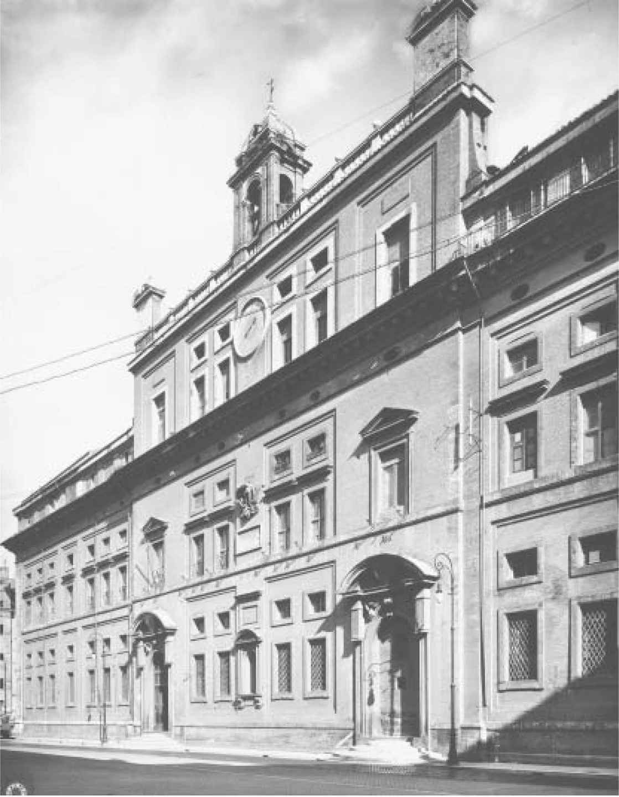
图1-1 罗马学院当前的景象，由巴尔托罗梅奥•阿曼纳蒂设计，该建筑现为公立高中。[阿里纳利（Alinari）/Art Resource，NY]
这个庞大的教育网络的中心是罗马大学，当时普遍称之为罗马学院（Collegio Romano）。它成立于1551年，最初曾坐落在罗马周边几个相对偏僻的地区。教皇格里高利十三世是SJ的崇拜者和支持者，他决定为他们的旗舰机构找一个更合适的地点。他征用了科尔索大道附近的两个街区，并委托著名建筑师巴尔托罗梅奥•阿曼纳蒂（Bartolomeo Ammannati）为SJ的教育体系设计一个适合的总部。最终设计出来的是一座宏大而令人赞叹的宫殿，虽然算不上富丽堂皇，但它不仅反映了SJ的权势和威望，而且反映了其使命的严肃性和务实精神。罗马学院于1584年迁到了新址，在将近半个世纪之后，监督会长们裁决无穷小量命运的会议就发生在这里。在未来的3个世纪里，它仍将继续矗立在罗马学院广场。
“罗马学院”这个简单的名字与任何其他城市的SJ学院没有什么不同，从名字就可以看出来，它旨在为罗马的年轻人服务，就好比建立“科隆学院”是为了教育科隆的青少年。但是，这是一种误解。虽然教育罗马的精英人才确实是这所学院使命的一部分，但它从一开始就同时是教育体系中其他学院的范本和学术航标。只有最有成就的SJ学者才会被召集到罗马，并在学院担任教授，这样就把教会中最伟大和最杰出的人才汇聚到了一起。数学家克里斯托弗•克拉维斯和克里斯托夫•格林伯格，自然哲学家阿塔纳斯•珂雪和罗杰•博斯科维奇，神学家弗朗西斯科•苏亚雷斯和罗伯特•贝拉明，以及许多其他学者——事实上，几乎包括所有领先的SJ学者——他们全部都在罗马学院授课。按照教会的等级设置，罗马教员有权力设定省级学院的课程，并确定在SJ学校可以或者不可以传授什么课程。正如SJ的总会长掌管着每个SJ教会一样，罗马学院掌管着世界范围内的数百家SJ学院。
为什么整个欧洲的天主教贵族和富有的平民都强烈要求在他们的城镇建立SJ学院呢？其中的原因其实很容易看出来。这是因为，传统的教区学校不仅教学质量令人堪忧，而且据说那些伟大的大学中的学生很少专注于实际的学术研究。SJ却与之截然相反，他们为学生提供了严格的课程设置，并由高素质的教师队伍进行授课，而且罗马学院的杰出学者还会对课程进行定期更新。那些大学的学生可以自由地沉迷于轻松无度的生活，而SJ学院的学生们是受到密切监督的，而且学习和祈祷也充实了他们的生活。那些将自己的儿子送去SJ学校学习的贵族或商人有信心认为，不管是在学术上还是在道德上，他们的儿子都将会取得长足的进步。
SJ学院的杰出校友名录足以支持这样的评价。除了杰出的SJ会士本身，SJ学院的毕业生还包括皇室成员，如罗马皇帝斐迪南二世，政治家如红衣主教黎塞留（Richelieu），人文主义者如尤斯图斯•利普修斯（Justus Lipsius），以及哲学家和科学家，如笛卡尔和马兰•梅森。即使是教会的敌人也承认，SJ的教育毋庸置疑是整个基督教界里可以获得的最好的教育。甚至英国大法官弗朗西斯•培根（他没有在SJ的朋友）都曾不无感慨地写道：“Talis quus sis, utinam noster esses.”（你是那么出色，真希望你是我们中的一员。）
培根有足够的理由来感叹SJ在教育方面所取得的成就。因为在SJ对抗新教的斗争中，在它向教皇提供的所有服务当中，罗马学院的教育被证明是最强大和最有效的。不管在哪里，只要建立了一所SJ学院，它就会成为天主教生活的中心，并且也会成为向罗马教会做贡献的一个鲜活例证。路德教派或者加尔文教派的学校极少能够像SJ学院那样提供高质量的教育，而且在吸引平民精英的后代方面也很难有实力与SJ学院展开竞争。一旦被SJ学院录取，SJ将花费数年时间传授天主教教义，包括对新教教义具有学术性和权威性的反驳。学生们不可避免地会被灌输SJ会士要献身于教皇的思想，以及为了教会及其制度甘于奉献和牺牲的精神。随着数百个这样的学院在欧洲各地兴建，并且随着数以百计，有的甚至是数以千计的学生就读于各个学院，SJ教育系统培养了一代又一代受过良好教育且虔诚的天主教徒，他们最终都会在所在社区担任领导职务。实际上，作为天主教精英的主要教育工作者，SJ会士确保了罗马教会在欧洲的大部分地区得以生存并且实现复兴。
SJ学院的巨大影响是毋庸置疑的。神圣罗马帝国的第一所SJ学院于1544年在科隆成立，当时的帝国正处在屈服于路德教派的狂涛骇浪的边缘。但随着科隆大学的落成，这里成为一个天主教的大本营，并成了在未来拓展SJ活动的一个基地。在接下来的几十年里，凭借执政的维特尔斯巴赫家族（Wittelsbach）和哈布斯堡家族的大力支持，SJ在巴伐利亚和奥地利创立了几十所院校，并接管了现有大学的管理权。他们甚至进一步在罗马建立了一所特殊的学校，致力于培养有前途的年轻德国人，使之有希望胜任高级教会官员的职务。一旦完成学业，这个“管理人才班”的毕业生会回到家乡，在那里他们将成为当地的主教或者大主教，并且会成为德国天主教复兴的中坚力量。在低地国家，SJ同样极其活跃：当北方各省转投新教并拿起武器反抗哈布斯堡王朝的统治者时，SJ帮助将南方各省建成了一个天主教的堡垒。在很大程度上要归功于SJ的努力，才使得该地区的天主教教会得以保存，并在后来获得了自己的独立身份，最终以现代国家比利时的身份取得独立。
与德国的情况十分类似，16世纪60年代波兰的天主教贵族邀请SJ去那里开办大学的时候，波兰似乎也正处于接受某种形式的新教过程中。SJ很快获得了王室的信任和支持，他们帮助SJ建立大学，从1576年的5所大学扩建到了1648年的32所大学。SJ会士成为波兰统治阶级的教育工作者，无论是农村的贵族还是城市的精英，他们在罗马被培训成了虔诚的神父骨干，然后返回波兰担任教会的领导职务。SJ与波兰君主之间的联系相当密切，国王西吉斯蒙德三世（Sigismund Ⅲ）被称为“SJ国王”（Jesuit King），还有他的儿子约翰二世•卡齐米日（Jan Ⅱ Kazimierz，1648—1668年在位），在登上王座之前曾是SJ成员，并且是一位红衣主教。波兰得到了转化：一个以宗教宽容为豪的国家，向改革者开放了它的教堂和教区，成了虔诚的天主教领地。如同在其他地方一样，SJ在波兰的介入被证明是具有决定性的。
依纳爵的忠诚门徒们完成了文艺复兴时期的教皇所不能完成的世俗任务：他们在欧洲阻止了新教看似不可阻挡的发展势头，并且重振了罗马教会的权力和威望。不管是在什么地方，只要他们实施教会的标准并设立教会大学，就会向古老教堂注入一股新的宗教热情，并开展一系列目标明确的行动，这鼓舞了其追随者对抗异教徒。教皇格里高利十三世在1581年写给SJ会长大会的信中，感激之情溢于言表：
你们的神圣教会……遍及了整个世界。目及之处都设有你们的学院和居所。你们管理着各个王国和省区，甚至可以说是整个世界。总之，在对抗异教徒的运动中，迄今为止没有哪个上帝的圣器能够比得上你们的神圣教会。在新的谬误正要扩散之时，你们的出现恰逢其时。最重要的是……你们的神圣教会正在变得日益强大和繁荣。
《圣依纳爵的奇迹》（The Miracles of St. Ignatius ）是一幅巨大的油画，原本打算用来装饰圣母主教座堂的祭坛，如今挂在维也纳的艺术史博物馆中。它是佛兰德画家彼得•保罗•鲁本斯（Peter Paul Rubens）的作品。在现代，鲁本斯很大程度上是因为他对丰满女性的描绘而著名，这种绘画风格挑战了我们对女性体态的现代观念。但鲁本斯是一位虔诚的天主教徒，他每天早上都会参加弥撒，并且在他的家乡安特卫普市与SJ的关系十分密切。1605年，在SJ争取使其创始人封为圣徒的运动中，鲁本斯为SJ的圣徒传记《依纳爵传》（Life of Ignatius ）贡献了80幅版画。4年之后，依纳爵被宣福，使得他离被追封为圣徒更近了一步，SJ委托鲁本斯为耶稣教堂（Gesù，即SJ在罗马的母堂）以及圣母主教座堂绘制了几幅未来圣人的大型肖像。他创作完成的《圣依纳爵的奇迹》可谓气势非凡，这很可能是他为SJ贡献的最伟大的杰作。
这幅画将我们带入了极富戏剧性的一幕景象。故事发生在一个宽敞的大厅里，这很有可能是一个教堂，从拱形的天花板一直描绘到了石质地板。在顶部较明亮的位置，飘浮着几个顽皮的小天使，他们似乎没有注意到下面人们的混乱。事实上，教堂的地板上是一幅充满痛苦、恐惧和混乱的场景，一大群男人、女人和几个孩子都陷入了一种痛苦的狂乱之中。一个男人用后背撞击着地板，仿佛癫痫发作，而另一个背上布满血淋淋的条纹伤痕的男人正面朝着他；一个披头散发的女人拳头紧握、面部狰狞扭曲、眼神呆滞，正在奋力挣扎，在她身后有两个男人在试图安抚她；一个头发花白的男人绝望地向上凝视着，从画中只能看到他的头部，他的脸部则扭曲成了一副恐怖的模样。还有一些没有得到解脱的人，他们带着祈求和希望的眼光痛苦地向上注视着：他们能从饱受折磨的痛苦中得到解救吗？
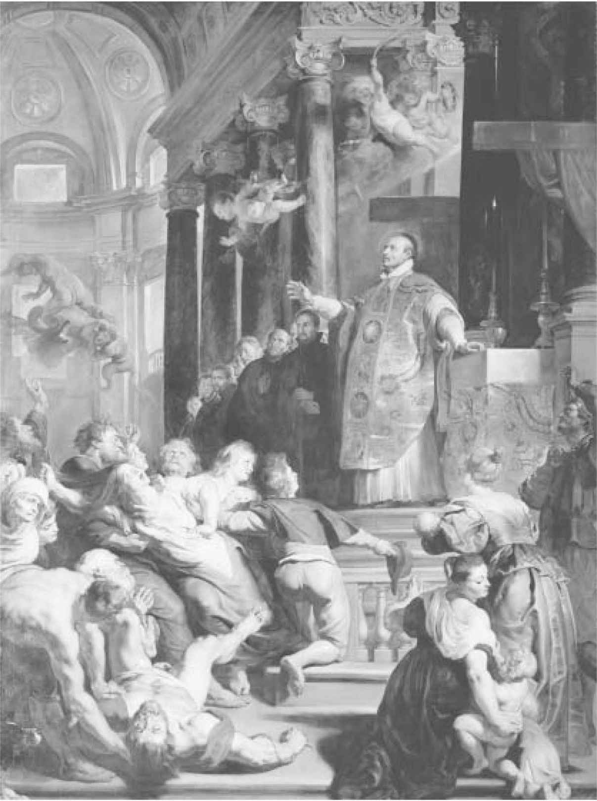
图1-2《圣依纳爵的奇迹》，彼得•保罗•鲁本斯，1617年。［埃里希•莱辛（Erich Lessing）/Art Resource，NY］
他们凝视的对象正是依纳爵本人。他笔直地站立着，祭司长袍闪耀着光辉。依纳爵站在讲台上，虽然只在距离地板几个台阶之上，却处于一个完全不同的境界。他泰然自若而且威风凛凛，举起右手做赐福状。他正在执行一次驱魔仪式，从人们身上驱逐“恶灵”，为那些遭受痛苦和混乱的人带来和平与秩序。在画面的左侧，“恶魔”已经被驱离了人体，它在依纳爵面前逃之夭夭，而上空的一位“天使”在向“恶魔”表示出具有讽刺意味的告别。虽然画中的焦点毫无悬念地落在了依纳爵身上，但他并非独身一人：在他身后的高台之上站立着他的追随者们——一长排身穿黑色长袍的SJ会士一直延伸到了远处。像依纳爵一样，他们也是冷静、严峻的，观察着他们面前的苦难。他们是依纳爵的“军队”，来到这里向他们的导师学习，跟随他的指引，并最终接替他的使命，将混乱变为有序，并将“安宁”带给那些受苦之人。
这些确实是圣依纳爵和他的追随者们创造的“奇迹”。只有他们能在被宗教改革冲击得四分五裂的领地上重建和平与秩序。他们赶走了异教徒和“混乱”，带来了正统的教义和统一的秩序；哪里的教会的统治被推翻，哪里的神父和主教被驱逐，他们就在哪里重建宏伟的老教堂，并重新确立教会的权威；哪里被“混乱”和“困惑”所统治，他们就在哪里恢复罗马教会不可动摇的“真理”和“确定性”。他们在所有这些活动中所取得的成功确实可以称得上是“奇迹”。在SJ会士看来，这个“奇迹”的主旨很简单，那就是他们所认为的——真理、等级制度和秩序。
SJ不相信少数服从多数，在他们看来，真理是绝对的。他们不相信权力和权威的多元化，一旦真理被发现，那么所有的权力必须归属于那些知道并承认真理的人，并将真理强加给那些还没有接受它的人。他们当然不相信民主——允许表达不同和反对的意见，并依靠辩论和竞争来获取权力得以崛起。“真理”不会给异议和挑战留下任何空间。他们认为，只有“上帝的使者”所具有的绝对权威以及他们所持有的“神圣真理”，才能使世界实现和平与和谐。这就是SJ会士的世界观，他们不仅努力地在自己内部施行这种世界观，而且还要在整个教会以及整个世界范围内施行这种世界观。这个世界清晰的等级结构，在《圣依纳爵的奇迹》中以视觉的形式呈现了出来。在顶部是光与真理的境界，在底部是充满痛苦和困惑的人们。在这两者之间是依纳爵和他的部下：他们自律、冷静并且指挥若定，驱逐产生冲突的“恶魔”，并将“光”和“真理”赐予人们。
SJ之父依纳爵•罗耀拉在起初并不喜爱数学。在早期生活中，他曾经是一位贵族朝臣和潇洒的骑士，并且鄙视学者和数学家们的迂腐。他在后期对于宗教启示录的沉迷，只能使他进一步远离由数字和图形所构成的冰冷的逻辑世界。他在巴塞罗那、阿尔卡拉、萨拉曼卡和巴黎大学学习期间，显然也不会包括任何数学课程。到了1553年，SJ在他的领导下在全世界范围建立学院网络的过程中，依纳爵开始发觉有必要开展一定的数学教育，他写道，大学应该传授一些“神学家应该了解的数学知识”。然而必须承认，他们所涉及的数学知识并不算多。
在SJ初期的教育体系中，数学处于一个相对较低的地位，这其实并不非常令人感到惊讶。毕竟，SJ学院还有一个非常具体和迫切的目标，这个目标与现代继任者的目标截然不同，即阻止新教的传播，并重新确立天主教会的声望和权威。依纳爵的助理胡安•波朗科（Juan de Polanco）在1655年的一封书信中曾解释道，在很多国家，“真正的信仰”正在遭受威胁，而这些国家的SJ学院，则仍在“传授标准和纯正的教义……以保留基督教中现存的教义，并恢复那些丢失的教义”。像数学这样生僻和抽象的学科，对SJ的这个使命起不到多大作用。
但是，扭转宗教改革进程的目标，并不意味着SJ学院的课程重点仅仅集中在宗教教义上。依纳爵坚信，正确的宗教教育必须建立在更广泛的课程基础之上，包括哲学、语法、古典语言以及其他人文领域。同样重要的是，他们要遵守自己提出的承诺——为学生提供广泛和最新的教育。否则的话，当地的精英就会转向其他大学，为他们的后代寻找更好的教育机会，这将为SJ的宗教使命招致灾难。正如赫罗尼莫•纳达尔在1567年所提出的观点：“对于我们来说，课程和学术实践就如同鱼钩一样，我们靠它来钓灵魂之鱼。”
依纳爵建议的“鱼钩”包括阅读古代大师著作可能需要的语言——拉丁语、希腊语和希伯来语，在一些学院还有 迦勒底语 注12 、 阿拉伯语和印地语 注13 。在哲学上，依纳爵决定学院将遵循古希腊哲学家亚里士多德的教义——自从亚里士多德的著作在12世纪被译成拉丁语以来，他就一直是西方最具影响力的哲学家。亚里士多德的著作集涵盖了各个不同的领域，在当时堪称是最为全面的，并且被大多数的欧洲学者认定为是最具权威性的，涉及的学科领域包括逻辑学、生物学、伦理学、政治学、物理学和天文学。依纳爵曾经在大学里研究过亚里士多德的著作，因此很容易在亚里士多德教义的基础之上为学院设置课程。依纳爵下令，在神学上，SJ将遵循圣托马斯•阿奎那（St. Thomas Aquinas）的教义。阿奎那是13世纪的道明会（多明我会）修士，调和了亚里士多德和教会的教义。他被称为“天使博士”（The Angelic Doctor），在他去世之后，成为西方最权威的神学家，并且在依纳爵看来，他的教义是永远正确的。由于托马斯主义（阿奎那的神学被称为托马斯主义）在很大程度上依赖于亚里士多德哲学，所以SJ学院的学生在完全从事宗教研究之前，必须要潜心研究亚里士多德哲学。
SJ学院的课程既是多元化和广泛的，也是严格、有序并且等级分明的。不同学科有着不容置疑的相对价值：处于顶层的是神学，由天主教会永远正确的教义组成；神学之下是哲学，包括自然哲学和道德哲学，它传授的是有关自然界和人类世界的真理，还有为理解宗教教义而可能需要掌握的知识；哲学之下是辅助学科，如语言和数学，它们本身不涉及真理，但有助于理解更高的学科。在学科设置方面，SJ学院与基督教世界的其他地方一样，都强调秩序的重要性。在庞大的学科体系中，每个学科都有它自己应有的位置。神学真理是至高无上的，没有哪种哲学学说可以与神学真理相抵触，即使是权威的亚里士多德本人所支持的学说也绝不可以。数学仍然排名较低，而且数学结果甚至没有资格被当作真理，只能被当作假说。这是一个天衣无缝的知识等级结构，在其中，托马斯主义神学处于最高统治地位。
SJ学院有着清晰有序的学科设置，这与同时代的其他大学形成了鲜明的对比。其他大学的学习往往是杂乱无章的，学生们更是经常参加不相关的课程，许多学生在这样非结构化的课程迷宫里迷失了方向。与之相反，SJ提供了一系列逻辑清晰的课程，从语言以及亚里士多德哲学的许多分支开始，然后逐步学习到神学。得益于学院规范而有序的生活以及SJ导师们良好的道德榜样，这种严格的学习进程能使学生始终保持在正轨之上，使他们远离困扰着其他同龄人的那些诱惑。
但是，对于SJ来说，真理的等级划分不只是一种教学策略。它还反映了SJ所坚持的信仰，即为了重建在宗教改革中失去的神圣秩序，这种清晰和无可争议的等级制度是必不可少的。等级制度不仅统治着SJ本身，而且也统治着教会，从教皇到普通会众，所有人都包括在其中。SJ相信，要想击败异教徒，使真理战胜谬误，必须在世界范围内施行这种等级制度。说到底，宗教改革本身不正是正确的知识秩序崩溃所造成的结果吗？路德仅仅作为一个修道士就敢于独自挑战教皇的权威吗？不正是路德以及后来的茨温利、加尔文等人，用他们自己的新神学取代了教会的权威教义吗？这些带来的结果是什么呢？只有混乱和困惑，罗马教会唯一的权威声音在一片刺耳的反对声中淹没了。SJ能够清楚地认识到，古代基督世界统一体的崩溃以及随之而来的混乱，都是正确的知识秩序崩溃所造成的直接结果。只有通过保持这种严格的知识等级制度，才能让真理占得上风，才能打败异教徒。
由于真理对于SJ会士来说是不变和永恒的，并且建立在教会权威的基础之上，因此新的事物和创新会带来不可接受的风险，必须对它们进行强烈抵制。1564年，罗马学院的神学家贝尼托•佩雷拉曾警告说，“每个人都不应被新的观点，即新的发现所吸引”，而必须“坚持旧的以及被普遍接受的观点……并遵循正确而纯正的教义”。20年后，总会长阿奎维瓦又告诫SJ会士，不仅要避免创新，而且要避免“任何人怀疑我们在试图创造新的东西”。创新在今天看来是弥足珍贵的，但当时的SJ会士却认为，它是与深深的怀疑密不可分的。
“Legem impone subactis”——用你的规则统治所有学科！——是罗马学院下宗座学院（Parthenic Academy）的座右铭，这所学院只向那些对SJ的理想和生活方式非常虔诚的学生开放。与座右铭相对应的是其同样显眼的盾徽，它被称为“impresse”。在盾徽的顶部，坐在宝座上的是象征神学的女性形象。在她两侧较低的位置站立着她的仆人——哲学和数学，他们倾斜着身体正在听候她的命令。在SJ的学校同样如此，神学如同“科学的皇后”一样统治着其他学科，并将它的规则强加给其他从属科目。这是一个不同于现代的知识体系，更令人感到压抑的是，这样设计的体系是用来建立绝对真理和排除异议的。但SJ认为，教育的目的并非在于鼓励思想的自由交流，而在于灌输一定的真理。从这方面来看，他们无疑是成功的。
故事发生在SJ创立之初的第一个十年里，当时的数学虽然已经成为一门学科，但其涉及的范围也仅限于为其他更高的学科提供支持。如果不是因为这个人坚持不懈的努力，这种状况很可能会一直持续下去。他毕生致力于将数学提升到SJ课程的中心位置。到17世纪来临之际，正是由于他的努力，才使得一些SJ会士不仅成为熟练的数学老师，而且成为该领域的知名学者，并能跻身于全欧洲最杰出的数学家行列。这个人就是克里斯托弗•克拉维斯。
对于克拉维斯的早年情况人们知之甚少，甚至连他的真实本名都仍存疑问，但我们能够确定的是，他于1538年3月25日出生在德国南部省份弗兰肯（Franconia）的班贝格（Bamberg）。班贝格处于一个天主教王子主教的势力范围之内，但被纽伦堡、黑森和萨克森州等新教领地包围着，因此，其处在为神圣罗马帝国灵魂而战的最前线。SJ的彼得•卡尼修斯把像班贝格这样的几座城市指定为他在罗马帝国的巡视城市，以重振信徒们低落的士气，鼓励他们坚定信心，对抗正在不断入侵的新教浪潮。很容易想象这样一幅情景，年轻的克拉维斯正在班贝格大教堂参加由卡尼修斯主持的一场隆重的弥撒，并且被他热烈的布道所感动。不过，我们并不能更进一步地了解到实际情况。我们只知道，在1555年，当他的家乡城市抵御新教侯爵阿尔伯特•亚西比德（Albert Alcibiades）的时候，克拉维斯已经身处罗马。当年4月12日，他由依纳爵•罗耀拉本人批准加入SJ，成为一名初学者。
克拉维斯在加入教会时只有17岁，但直到他37岁时，他才立下最后的庄重誓言。即使考虑到SJ漫长而严格的培训计划，然而对于一个聪明的年轻人来说，从初学者发展成为完全合格的SJ会士用了20年，这也算是一个非常漫长的过程了，特别是他很早就加入了教会，并且最终还成为那个时代最著名的SJ会士之一。不过，这也许和他所坚持的事业有关。在此期间，克拉维斯在教会花了大量时间去推动一件不受欢迎的事情：在SJ的等级体系中提高数学的地位，并改进教会学校的数学教义。一些SJ会士极力反对他的这种做法，比如他在罗马学院的同事贝尼托•佩雷拉。但当1575年克拉维斯加入到“发愿”SJ会士行列的时候，他开始逐渐取得这场斗争的胜利。
克拉维斯获准加入SJ之后，只在罗马生活了一年时间，随后就被派往了位于葡萄牙科英布拉（Coimbra）的SJ传教所。不同于像本笃会那样的传统隐居修道院，SJ的“传教所”（或“住所”）坐落在城市或城镇的中心地带。在那里，当地的SJ在一位主管的领导下以紧密的社区形式生活，并且主管每天都会在这片广阔的社区中指导他们的活动。克拉维斯在科英布拉的这4年生活鲜为人知，他在这里度过了他20岁前后的时光，但可以肯定的是，这里的生活是程式化的。科英布拉在当时很有名，因为它是一所古老大学的所在地，这里最著名的居民非佩德罗•努内斯（Pedro Nuñez）莫属，他是那个时代最伟大的数学家和天文学家之一。没有直接的证据表明克拉维斯曾在努内斯门下学习，但数学家贝尔纳迪诺•布拉迪（Bernardino Bladi，1553—1617）写过一篇关于克拉维斯的个人传记，在其中提到过他们两人确实互相认识。当然，考虑到这名年轻德国人的兴趣，加之科英布拉大学也不是一个很大的地方，很难想象这两个人没有遇见过。但根据布拉迪的记载，克拉维斯在很大程度上是自学成才的，他是通过自己细心钻研古典数学课本获得数学知识的。
1560年，克拉维斯被召回罗马之后，继续从事哲学和神学方面的研究，并且开始讲授数学课程。1563年，他开始在罗马学院讲授数学，并于1565年左右，即在他30岁的时候成为数学教授，此后他几乎一直担任这个职务，直到47年之后他去世为止。到这时为止，克拉维斯的职业生涯可以说是值得尊敬的，但很难称得上是卓越的。虽然他的数学能力得到了上司的赏识，但他仍然只是一个默默无闻的年轻教员，他的同事们也并不是十分尊重他的专业领域。即使在多年之后，克拉维斯仍在努力为数学教授们争取参加公共仪式以及与其同事一起参加辩论的权利，这表明数学教授并没有和其他学科的教授享有同样的权利。尽管克拉维斯在SJ的旗舰学院拥有一席之地，但他还是被排除在“发愿”会士的行列之外多年，因此，对于他在SJ严格的等级制度中所处的地位，我们也可见一斑。
但是在1572年到1575之间的一段时间，即克拉维斯从科英布拉归来十多年之后，他的职业生涯发生了戏剧性的转折。新当选的教皇格里高利十三世（1572— 1585年在位）组建了一个著名的委员会，目的是解决已经困扰了教会几个世纪的一个问题：历法改革。教皇担任委员会的技术顾问，他在罗马学院的年轻教授中选出了一些在数学和天文方面有一定名望的专家。这项任命对于克拉维斯来说无疑是一项莫大的荣誉，这是教会所从事的最雄心勃勃的项目之一，而教皇的任命则使他进入了这个项目的中心。这也使他成为SJ的正式代表，出现在罗马教会的一个高级别的官方小组里面，他们的建议将会被所有人知晓，并且会被整个欧洲的学者仔细检验。处于这样一个醒目的位置，克拉维斯被期待能为SJ带来荣耀，并提高其在罗马教廷的威信。对于一个年轻而默默无闻的数学教授来说，这无疑是一个充满困难甚至风险的职务。但克拉维斯和他的事业一直在等待着的就是这样的一个机会。
委员会所要解决的这个问题已经持续了1200多年。早在公元325年，尼西亚会议（Council of Nicea）就曾规定，应该在春分之后的第一个满月庆祝复活节，根据这个规定，复活节被定在了3月21日。遗憾的是，当时所使用的儒略历（Julian Calendar）并不完全符合太阳年（太阳在天球上回归到完全相同点所需要的时间）的实际时间长度。儒略历中的一年为365天又6个小时，而实际的太阳年则几乎比儒略历精确地少了11分钟。这么小的差异在年与年之间并不明显，甚至在人的一生中也不算明显，但如果这11分钟的误差重复发生1200多次，则能累积产生一个很大的误差。到16世纪70年代，春分日已经提前到了3月11日，导致在基督教历法中最重要的节日复活节也要跟着一起提前。如果不对这个问题进行一些纠正，那么这个误差将会继续扩大，而复活节也要继续提前。与此同时，用来计算满月发生日期的阴历也存在着类似的问题，即每310年会相差1天的时间。到16世纪，满月发生的日期比儒略历预算出的日期已经晚了4天。
这一切对于教会来说都是不可接受的：这不仅事关复活节的日期，而且还包括整个宗教历法中的节日和圣徒纪念日，更不用说节气和农历也陷入了一片混乱。早在13世纪，英国哲学家培根就曾抱怨道，现在的历法“令智者无可奈何，令天文学家望而生畏，并受数学家愚弄嘲笑”。时间规律确实是困扰着整个基督教世界的一个问题，人们希望教会这个“神圣生活节律的守护者”能够着手解决这个问题。从康斯坦茨会议（Council of Constance，1414—1418）开始，此后的几次教会会议都在试图解决这个问题，但这些努力并没有取得什么实际成果。最后，1545年至1563年间，在意大利北部举行的定期会议——特伦托会议（Council of Trent）中，颁布了一项法令，决定为实行历法改革而成立一个特别委员会。大约在10年后，新当选的教皇格里高利十三世终于执行了特伦托会议的这项法令。
克拉维斯所在的这个委员会的任务相当复杂。首先，他们必须确定儒略历和阴历之中的确切误差；然后，他们需要制定一个新的阴历，使之能够准确预测未来的月相；最后，他们需要纠正已经发生的累计偏差，并制定一个新的日历，使之能够防止再次发生类似的错误。1577年，该委员会向一些领先的天主教学者发布了一份修改“纲要”，用以征求意见和建议。在审议并整理完众多的反馈意见之后，委员会对阿洛伊修斯•里利乌斯（Aloysius Lilius）博士所提出的精确而简洁的建议情有独钟。1580年9月，委员会向教皇提交了他们的结论——它在很大程度上基于里利乌斯的建议。
第一个建议是为了立即对日历进行一次性校正，需要在当前日期上删除10 天。为了防止在未来的几个世纪再度出现类似的问题，委员会还对儒略历提出了一个永久性的调整建议：与旧历法相同的是，每个能被4整除的年份为一个闰年，闰年包括366天而不是365天；但与旧历法不同的是，能被100整除的年份（即1800年、1900年等）为标准年份，包括365天，例外的情况是，能被400整除的年份仍然是闰年。这些措施产生的综合效果就是，能够消除每年10分48秒的误差，从而有效地同步日历年与太阳年。从今以后，春分将总是落在3月21日这一天。1582年2月，在教皇诏书中，教皇颁布了官方旨令：接受委员会的建议，并下旨令，当年10月4日星期四之后，次日将是10月15日星期五——这使得1582年成为历史上唯一仅有355天的年份。他还颁布了由克拉维斯及其同事设计的历法，这一历法在世界各地一直沿用至今，通常被称为“格里历”（Gregorian calendar，即公历或格里高列历）。
在历法改革的整个过程中，克拉维斯在天文学和数学方面的专业知识是必不可少的。他一直在为委员会中那些专业技能不太熟练的同事提供先进的天文计算。在重新计算月相以及审议各个学者的历法改革建议方面，他无疑也发挥了主导作用。通过这一切，克拉维斯证明了自己不仅是一名出色的数学家和天文学家，而且还可以有效地驾驭教廷内错综复杂的政治关系。在此后的几年里，该委员会的其他成员陆续回归到他们的正常职务，这时克拉维斯脱颖而出，成为这个新历法体系的公众发言人。他发布了关于新历法的一部600页的“说明”，并承担由此产生的所有批评。这位在罗马学院默默无闻、怀才不遇的教授已经一跃成为一位领先的数学家，并且成为处于上升势头之中的数学科学的发言人，而且他还是“发愿”SJ会士和SJ的公众形象。从此，他将一往无前。
在与新教“异教徒”斗争的黑暗岁月里，历法的公历改革是天主教会取得的一场空前胜利。这次是教皇行使了他的无上权力，纠正了一个已经困扰全体基督徒长达一千多年的问题。为了使世界各地不计其数的人能够摆脱这个问题，教皇通过展示“上帝”一般的权力，改造了年份、宗教节日以及季节。为了纪念教皇格里高利十三世，在位于罗马的圣彼得大教堂里，由雕塑家卡米洛•卢斯科尼（Camillo Rusconi）创作的浮雕显示了这样一幅景象：克拉维斯在几位历法改革委员会成员中间，（根据SJ传统）跪在教皇宝座之前，他正在向教皇呈上新的历法。教皇坐在宝座上展开双臂，用手指向地球仪，仿佛世界又一次回到了他的手中。虽然教皇的新教敌人会认为，他们的领先学者也如克拉维斯及其委员会成员一样博学多才，但是，没有哪个新教公侯或神职人员能够像教皇那样，成为修正时间的大师。
新教徒没有别的选择，他们只能无奈地承认教皇法令的效力，以及教皇重新制定“宇宙秩序”这一无可匹敌的能力。这究竟有多么地令他们感到担忧，可以从一篇名为《依纳爵的秘密会议》（Ignatius His Conclave ）的诗歌中窥见一斑。这是由英国诗人和牧师约翰•多恩（John Donne）在1611年所作的一篇反对SJ的讽刺诗，在多恩的描述中，依纳爵与他的同伴居住在“地狱”，克拉维斯也在其中。依纳爵宣布道：
“我们的克拉维斯应该为他的巨大付出感到荣幸……他为格里历费尽心血，它不仅使教会失去了安宁，而且使民众生活陷入了极度混乱；天堂也没能逃脱于他的暴行，连远古的圣人都要听命于他的调遣： 圣斯德望 注14 、施洗者约翰，所有的圣人概莫能外，他们受命在约定的时间去创造奇迹……像他们惯常的那样，他们会准时在约定的时间出现，然而到时他们会发现早醒了10天，并且还要受他的约束从天堂下凡去做圣事。”
这篇辛辣的讽刺诗并无法掩盖反对天主教的多恩的惶恐心理，因为他不得不屈从于教皇对宗教和世俗时间秩序的重新设定。
那些新教公侯被迫面临着一个棘手的选择：他们可以选择接受格里历，从而默认教皇的普遍权威性；或者他们也可以选择拒绝格里历，并故意延用令人难堪的错误历法。他们感觉被逼进了死胡同，所以表现出了一些困惑，这当然是可以理解的。英国女王伊丽莎白一世起初宣布将采用新历法，但当面对来自英国教会的反对时，她又收回了成命。直到1752年，格里历才登陆不列颠群岛。荷兰共和国则分为两极，有一些省份立即采用了新历法，而其他一些省份则延用儒略历直到1700年。瑞典一直在两种历法之间摇摆不定，直到1753年才最终确定使用格里历。再往东的俄罗斯东正教——他们与教皇之间的对抗比路德还要早上700多年——也坚持延用儒略历，直到1918年。最后采用格里历的欧洲国家是希腊，希腊直到1923年才采用格里历，那时距离克拉维斯及其同事完成新历法的制定差不多已经过去了三个半世纪。通过颁布一部席卷世界的历法，罗马教会表现出了强大的指挥权，而它的竞争对手所能表现出的只有软弱和困惑，以及国家性教会所固有的局限性。 [此书分享V信shufoufou]
历法改革正是SJ所希望实现的那种胜利。天主教要将真理、秩序以及规律强加给这个失控的世界，这次历法改革无疑成了一个完美的案例。就像圣依纳爵在鲁本斯的杰作中所表现出的那样，教皇格里高利将普世真理之光带给了那些一直在黑暗和混乱中挣扎的人们。对历法改革的响应证实了这一点：只要是教皇统治的领土，则无论哪里都布满着法律、秩序与和平；而只要是异教徒和分裂者统治的领土，则无论哪里都充斥着谬误、混乱和冲突。没有什么能比这更好地诠释教皇统治方法的正义性了，这正体现了SJ的核心世界观。他们认为，这是罗马教会取得最终胜利的一个典范。
相比在神学领域普遍存在的一些争执不下的僵局，罗马教会在历法问题上的决定性胜利显得尤为引人注目。例如，天主教徒认为，只能通过神圣的教堂和圣礼，由祝圣司铎将上帝的恩典赐予有罪的人们；相反，新教徒则信仰“信徒皆祭司”，意思是说，上帝会将恩典直接赐予人们。天主教徒认为，在弥撒圣餐仪式中，基督实际存在于面包和酒之中；新教徒则认为，基督是无处不在的（路德），或者说弥撒只不过是一个纪念基督受难的仪式（茨温利）。天主教徒认为，上帝会通过考察一个人在现世的善举来决定他是否能够得救；新教徒则认为，只有信仰和恩典才是最重要的。天主教徒认为，圣经需要通过教会的等级制度和传统进行解释；新教徒则认为，圣经是对正义行为的明确指导，任何人都可以接触，等等。这些争论存在（并且至今仍存在）的共同点是，它们都是无法确定的问题。从路德的时代开始，时至今日，双方都没有任何让步。
可以肯定的是，双方的拥护者都参与到了这场充满热情，甚至是充满暴力的辩论之中。他们分别印发了赤裸裸的讽刺漫画来攻击对方，一方把路德描绘成魔鬼的使者，而另一方则把教皇称为反基督者。随着新的印刷技术的出现，这些讽刺画也传播得越来越广。他们出版了通俗的小册子，互相谴责对方的学说为异端邪说；还出版了教义问答的小册子，详细介绍各自信仰中的基础问题。他们还撰写了学术论文，例如，加尔文的《基督教要义》，或者SJ会士佛朗西斯科•苏亚雷斯的《形而上学辩论》（Disputationes Metaphysicae ）。他们偶尔会正式辩论，就像路德与埃克在1519年曾进行的辩论那样。尽管双方在这些争斗中投入了大量的时间、精力和资源，但是，没有哪一方能将自己的立场强加给对方。这些纠缠不清的争斗，与历法改革带给罗马教会的荣耀和干净利落的胜利，两者之间形成了鲜明的对比！如果历法改革胜利的秘诀可以注入到其他领域，那么教皇和教会的最终胜利将指日可待。
克拉维斯相信，他知道这个秘诀是什么：那就是数学。他认为，神学和哲学争论可能永远甚嚣尘上，因为不存在普遍接受的方式来决定谁对谁错。即使当一方占有绝对真理（如克拉维斯所认为的那样）而另一方根本是谬误的时候，谬误的信徒仍然可以拒绝接受真理。但是数学不一样：在数学领域，真理可以通过自身的证明强迫读者接受它，不管他们喜欢与否。人们可以争辩关于圣礼的天主教教义，但不能否认毕达哥拉斯定理（勾股定理）；没有人可以挑战新历法的正确性，正是因为它基于详细的数学计算。克拉维斯相信，这就是教会最终取得胜利的关键所在。
克拉维斯在一篇论文中详细阐述了他对数学的观点，收录在他所编写的 欧几里得 注15 几何学中，这本几何学最早发行于1574年，当时正处于历法改革委员会开始投入工作之际。论文的标题很简单，即“数学引论”（“关于数学科学的引论”）。这篇论文实际上是在极力呼吁大家承认数学科学的作用，以及数学相对于其他学科的优越性。克拉维斯写道：“如果一门科学是由其所使用的证明方法的确定性，来判断这门科学是否高贵和卓越，那么毫无疑问，数学学科在所有学科中应该是首屈一指的”；“这些数学方法可以通过最强的推理来证明一切争论，并且在听者的头脑中形成真正的知识，彻底消除任何疑虑，它们以这种方式来证实推理的正确性”。换句话说，数学可以强加在听者的头脑中，甚至能迫使那些最顽固的人接受数学真理。
他继续写道：
欧几里得的定理，以及其他数学家的定理，它们在如今仍像许多年前一样，在学校里保留着它们真正的纯洁性、真正的确定性，以及强大而严格的证明过程……因此，数学是如此渴望、尊重和促进真理，它不仅会拒绝所有错误的知识，甚至会拒绝所有不确定的知识，它不承认一切无法通过最可靠的证明得出的知识。
但其他一些所谓的“科学”却并非如此。克拉维斯指出，为了评估结论的正确性，人的头脑需要处理“大量的意见”和“各种各样的观点”。结果，由于数学会导致确定性，所以它能终结所有争论，而其他科学只能使头脑产生困惑和不确定。克拉维斯继续写道，事实上，鉴于非数学领域所固有的不确定性，“我想没有人会不承认，其他科学与数学的差距是如此之大”。他总结道：“毫无疑问，应该把所有科学之中的首要位置让给数学。”
严谨、有序并且不可抗拒，数学对于克拉维斯来说就是SJ体系的具体化。通过强加真理和清除谬误，它用固定的秩序和确定性取代了混乱和困惑。然而，应该记住，当克拉维斯提到“数学”时，他在头脑中会有一些非常具体的想法。当然，商人使用的算术已经有了它的一席之地，新兴的代数科学也同样如此，它教导人们如何解二次、三次和四次方程。但对于克拉维斯来说，真正完美的数学模型是几何学，正如欧几里得的伟大巨著《几何原本》所呈现出的那样。他认为，没有哪个数学领域能像几何学那样，以其最纯粹的形式掌握着权力和真理。当克拉维斯希望强调数学的永恒真理时，他引用了“欧几里得的演绎推理法”。而且，他的教科书包括很多数学领域，但他唯独选择将自己的“绪论”附在了他所编写的欧几里得几何学中，这肯定不是巧合。
大约在公元前300年写就的《几何原本》，可以说是历史上最有影响力的数学教科书。并不是因为它提出了新的或者原创的几何成果，而是因为《几何原本》是在前几代几何学家作品的基础之上总结而成的，书中大部分的几何知识很可能已经为数学家们所熟知。欧几里得作品的革命性在于其系统而严格的几何方法。它从一系列的定义和公设开始证明。公设非常地简单，它们被看作是不证自明的真命题：根据定义“图形是由一个边界或者几个边界所围成的”，根据公设“所有直角都相等”，等等。从这些看似微不足道的开端，欧几里得一步一步地证明出了越来越复杂的几何结果：等腰三角形的两个底角相等；在一个直角三角形中，两条直角边的平方之和等于第三边的平方（勾股定理）；在同一个圆中，同弧或等弧所对的圆周角相等，等等。在每一步推导中，欧几里得不只证明其结果是合理的，或是有可能的，而是证明其结果是绝对正确的，不可能有别的结果。以这种方式，欧几里得一层一层地构造出了一个数学真理的庞大体系，它由互相关联和不可撼动的真命题组成，每一个命题都依赖于之前的一个命题。如同克拉维斯在“绪论”中所指出的那样，这是知识王国里最坚固的大厦。
我们来领略一下欧几里得的方法，以他在第一卷中命题32的证明为例，即任何一个三角形的全部内角之和等于两个直角之和（或者说等于180度）。到这里，欧几里得已经证明了，当一条直线穿过两条平行线时，它与两条平行线相交所形成的内错角相等，同位角相等（第一卷，命题29）。他在以下的证明中很好地利用了这个定理：
命题32： 在任何一个三角形中，如果一条边被延长，那么外角等于不相邻的两个内角之和，并且三角形的三个内角之和等于两个直角之和（180度）。
证明：
设一个三角形为△ABC，令其中的一条边BC延长到D点。那么可以得到，外角∠ACD等于不相邻的两个内角∠BAC与∠ABC之和，并且三角形的三个内角∠ABC、∠ACB、∠BAC之和等于180度。
假设过点C作一条直线CE，与直线AB平行。
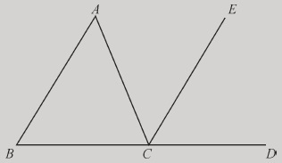
图2-1 三角形的内角之和
那么，由于AB平行于CE，并且AC与它们相交，因此，内错角∠BAC与∠ACE相等。
同样，由于AB平行于CE，并且直线BD与它们相交，因此，同位角∠DCE与∠ABC相等。
由于∠ACE也证明了等于∠BAC。由此可得，∠ACD（由∠ACE和∠DCE组成）等于两个内角∠BAC和∠ABC之和。
令∠ACB加上∠ACE和∠DCE，由此可得，∠ACB和∠ACD之和等于三角形的内角∠ABC、∠ACB、∠BAC之和。
由于∠ACB和∠ACD之和等于两个直角之和（180度），由此可得，三角形的三个内角∠ABC、∠ACB、∠BAC之和也等于两个直角之和（180度）。
证明完毕。
欧几里得的证明是基础而简单的：他将三角形的边BC延长到点D，然后过点C画了一条与AB平行的直线。利用他已经证明的有关平行线的性质，他把三角形的∠A和∠B转移到了直线BD上的∠C旁边，从而可以看出三个角一起组成了一条直线，即180度。但即使在这个简单的证明过程中，所用到的所有定理也都清晰可见，这使得欧几里得的证明相当令人信服。这次证明是基于从之前的一些证明中得出的定理，在这个例子中使用的是平行线的独特性质；从这开始，它逐步、系统地进行证明，清楚地论证每一个小的步骤在逻辑上都是正确和必要的； 最终，它得出了结论，该结论是绝对正确和通用的。不仅是这个特定三角形ABC 的内角之和等于180度，而且每一个三角形都一直、永远或者只能表现出这种完全相同的特性。最终，命题32的证明，以及所有其他欧几里得的证明，它们都是欧几里得几何这个整体的一个缩影。正如每一个证明都是由一些小的逻辑步骤组成的，这些证明本身也同样只是欧几里得几何体系中的小的步骤。并且如同每个单独的证明一样，几何学作为一个整体也是通用的、永远正确的，它每时每刻、无处不在地维护着世界秩序并且统治着世界的等级结构。
SJ一直想把一种正确、永恒和不可挑战的秩序强加在看似混乱的现实之上，而这实际实现起来却举步维艰。但克拉维斯很清楚地认识到，欧几里得的方法已经成功地实现了SJ一直梦寐以求的事情。我们周围多样化的世界，由看似无限的形状、颜色和材质构成，这对于我们来说也许是混乱和难以控制的。但多亏了欧几里得，我们才能更清楚地认识到：所有这些多样性和表面上的混乱，其实已经被永恒而普遍的几何学真理赋予了严格的秩序。安东尼奥•波塞维诺是罗马教皇的教廷大使，并且是克拉维斯的朋友和合作者，他在其1591年的著作《物竞天择》（Biblioteca selecta ）中指出：
……如果有人把上帝想象成是世间万物最聪明的几何建筑师……他就会明白，世界是上帝用各种各样的物质搭建起来的。由于他希望万物和谐有序，所以用了比例、尺寸和数字来装饰它……因此世界上的工匠才能模仿最完美和永恒的典范。
上帝将几何学强加到了不规则的物体之上，因此几何学的永恒规则才能够一直普遍适用。
数学，尤其是几何学，对于克拉维斯来说是SJ最高理想的表达，并且在SJ努力建立一个新的天主教秩序的过程中，为其提供了一个清晰的路线图。在某些情况下，数学可以直接用于提高教会的权力，就像它在历法改革中所起到的作用一样。在其他情况下，数学可以作为真正知识的一个理想模型，这样一来就能够被其他学科效仿。不管怎样，对于克拉维斯来说有一件事是明确的：数学再也不能作为SJ学术帝国里的附属课程而萎靡下去，它必须成为课程计划中的一个核心学科，以及SJ组成中的关键部分。
想要把数学确立为SJ课程中的核心学科并非易事。首先克拉维斯必须要面对那些反对他的同事，他们根本不认为数学应享有如此高的地位。他们指出，依纳爵并不太看重数学，他指定的权威人物也并不特别喜欢数学。阿奎那是依纳爵所选择的神学权威，但他只有限地使用过简单的数学；亚里士多德是SJ在哲学上的权威，相比他的老师及哲学上的对手柏拉图来说，他对数学更不重视，在他的物理学和生物学中，数学根本没有一席之地。
克拉维斯在罗马学院最公开的对手，似乎一直是神学家贝尼托•佩雷拉，正是他曾宣称，人们必须始终“坚守旧的和被普遍接受的观点”。1576年，当克拉维斯开始进行历法改革的时候，他曾宣称：“在我看来，数学学科是不合理的科学。”根据佩雷拉的观点，数学的问题在于，它的证明是乏力的，因此也不会产生真正的知识，缺少当时的哲学语言所谓的“格物致知”（scientia）。这是因为，根据亚里士多德的理论，合理的证明要从真正的原因（那些植根于所讨论对象的本质属性的原因）出发。例如经典的三段论：
所有人都会死
苏格拉底是人
所以，苏格拉底会死
三段论从死亡是人生的必要组成部分这一事实出发开始证明。佩雷拉指出，在数学中则不是这样的，因为数学证明不会考虑到事物的本质。相反，它们指向数字、直线、图形之间的复杂关系。这些几何关系的确很有趣，但缺乏由真正原因开始进行证明的那种逻辑力量。例如，利用平行线我们得出，三角形的内角之和等于两个直角，但平行线并不是导致命题为真的原因。佩雷拉指出，总而言之，数学甚至没有一个真正的主体，并且是由不同属性之间的关系得出的结论。如果一个人想寻求强有力的证明方法，那么他必须转向其他方法——亚里士多德物理学的三段论证明方法，在其中几乎完全没有出现数学。
事实并非如此，克拉维斯在“绪论”中进行了反驳。数学的主体就是物质本身，因为所有的数学都是“沉浸”在物质之中的。他提出，这就把数学置于了知识体系中一个特殊的位置：既沉浸在物质之中，又从物质之中抽象出来，它是介于物理学（仅涉及物质）和形而上学（只涉及从物质中分离出的思想）之间的学科。克拉维斯指出，不该将数学与形而上学的神学等同来看，因为神学所涉及的是完全不同的内容。尽管如此，相比佩雷拉所青睐的亚里士多德物理学，数学仍明显处于优势地位。克拉维斯是否赢得了这场争论见仁见智。同时代的人认为，他至少坚持了自己的观点，这就是他真正需要的。作为教会历法改革委员会的代表，他不断提高的声望比他的逻辑和修辞更能支持他的论点。但无论如何，他更感兴趣的还是实际的教学改革，而不是抽象的哲学辩论。这才是他斗争的起因，而且他终将会取得教学改革的胜利。
为了提高数学在SJ中的形象，克拉维斯发布了他的计划，这是一份名为《在SJ学校推广数学的方法》（Modus quo disciplinas mathematicas in scholis Societatis possent promoveri ）的文件，该文件于1582年左右开始广为流传，也就是在历法委员会刚刚制定完成新历法之后不久。他认为，为了使教学改革计划取得成功，首先要提高数学在学生眼中的威望。这需要他的同事给予一些合作，他毫不犹豫地把目标直接瞄准了那些在他看来可能妨碍自己计划的人。他抱怨道，据他掌握的可靠消息，某些老师曾公然嘲笑数学科学。他所指的当然就是佩雷拉及其盟友。他写道：
为了促进数学的发展，希望一些哲学教师能放弃对数学的质疑。他们提出的一些观点，既无助于学生对自然事物的理解，又非常有损数学在学生眼中的权威，比如他们曾教导学生说，数学并不是科学，并且没有证明过程……
他严厉地补充道：“经验告诉我们，这些质疑对学生产生了很大的障碍，对他们毫无益处。”
除了反击敌对同事的不良影响，克拉维斯还为SJ学校的数学发展积极建言献策。首先，他认为，高级教师必须建立“非同寻常的学识和权威”，因为如果没有这些，学生就“似乎无法被吸引到数学课程中来”。为了培养一些有能力的教授，克拉维斯建议成立一个专门的学校，SJ学院里那些最有前途的数学学生可以在这里从事更高的学术研究。以后，一旦他们就职于自己的日常教学岗位，这个学校的这些毕业生“就不应再投身于其他的职业”，而应该专注于数学教学。为了对抗反对数学的偏见，非常重要的一点是，这些训练有素的数学家需要得到他们同事最大程度的尊重，并邀请他们与神学和哲学教授一起参与公开辩论。他解释道，之所以需要建立数学的威望是因为：
……现在的学生似乎全都藐视数学的相关学科，他们认为这些学科是没有价值的，甚至是没用的，因为他们的数学老师从来没有被邀请与其他教授一起参加公开活动。
如同现在一样，学生们很快就能选出哪些学科和教师是有价值的，哪些是没有价值的，让学生们认真对待那些被轻视学科的教师几乎是不可能的。现在更可能出现的情况是，哲学和人文学科的教师会抱怨自己的领域受到数学教师的轻视。虽然不同学科的角色大致颠倒过来了，但这种动态关系仍然是大同小异的。
为SJ学院配备合格的教师是一回事，而为这些教师提供教材则是另外一回事。在这方面，克拉维斯也提出过建议。早在1581年，他就提出了一份详细的数学课程，他称之为“Ordo servandus in addiscendis disciplinis mathematicis”，字面上的意思就是“学习数学的顺序”。克拉维斯的完整课程包括22节课，分布在3年的学期里，最终证明，这一计划有些过于宏大，而不能普遍推行。在SJ学院，神学和哲学仍然居于首要地位，但这并没有阻止克拉维斯争取尽可能多地引入他的课程。
毋庸置疑，克拉维斯课程中的核心部分必然是欧几里得几何。每个初学者都要从欧几里得的前4册书开始学起，其内容为平面几何；然后再学习算术的基本原理，以及天文学、地理学、美术和音乐理论，这些学科都是根据各自领域内权威学者的理论设置课程的，比如，算术领域中的约丹努（Jordanus de Nemore）、天文学领域中的萨克罗博斯科（Sacrobosco）以及地理学领域中的托勒密，等等。但在整个学习过程中，初学者会多次学到最伟大的数学大师欧几里得的著作，直到其彻底掌握了《几何原本》整个13卷的内容为止。这不仅是一种学习的逻辑顺序，对于克拉维斯来说，它还代表了一种更深层次的思想信念。几何学的严格性和层次性，使得几何学成为SJ会士心目中的理想科学。数学科学以及天文学、地理学、美术和音乐等，它们都来源于几何学真理，并展示了这些几何学真理是如何统治世界的。因此，克拉维斯的数学课程并不只是教给学生具体的技能，更重要的是，它论证了绝对永恒的真理是如何塑造世界和统治世界的。
在克拉维斯人生的最后30年里，他大部分时间在努力推行这一计划。起初，他希望将他的计划纳入SJ的“教育计划”——已经执行了数十年的SJ学院教育的纲领性文件。罗马学院于1586年通过了一项草案，几乎完全遵循了克拉维斯的建议，甚至于自己就可以编写数学教材。例如，草案规定，一位数学教授“比如说克拉维斯神父”，需要教授为期3年的高级数学课程，以培养未来的SJ数学教师。后来在1591年颁布的一项草案中，重申了很多相同的内容。克拉维斯曾经警告过那些持反对意见的教师，说他们会破坏数学的权威性和重要性，而这次的草案也同样警告了他们。教育计划的最终版本于1599年颁布，并由SJ大会正式批准。与之前那个略显浮夸的版本相比，这个版本显得更加平实和简洁，但也大体上接受了克拉维斯的建议。每个学生都要先学习欧几里得《几何原本》中的基础知识，然后再学习一些更高级的课程。此外，“对于那些偏好数学并擅长数学的学生，应该在课程结束后单独培训”。虽然克拉维斯最终并没有得到他所希望的数学学院，但他仍获得了很多他所争取的权利。
克拉维斯对数学的极力主张并不局限在课程设置这一个方面的问题，他还投入到编写新教科书的艰巨工程之中，希望以之取代教会学校一直在使用的中世纪教科书。这些中世纪教科书虽然被认为是权威的，但它们毕竟已经沿用了数百年，而且所呈现的风格已不再能吸引16世纪的学生。萨克罗博斯科的《天球论》（Tractatus De Sphaera ）就是标准的中世纪天文学教科书。克拉维斯在1570年发布了第一版经他注释的《天球论》，并在1574年发布了经他注释的欧几里得的多部著作。随后，在1581年，他又发布了关于指时针（日晷的垂直部分）理论与实践的教科书；同在1581年，他还发布了关于星盘（用于测量恒星在宇宙中的位置）的教科书；后来他还发布了实用几何（1604年）和代数（1608年）的教科书。这些教科书往往是在传统文本的基础上加了他的注释，如欧几里得的《几何原本》和萨克罗博斯科的《天球论》，不过，它们都保留了原书的核心教义（如萨克罗博斯科的假设：太阳围绕地球转动）。然而，克拉维斯的版本仍属于实际意义上的新版教科书，它们不仅引入了一些与时俱进的内容，强调应用，而且以更清晰和吸引人的方式呈现了教学内容。在整个16世纪和17世纪，这些教科书被更新了许多个版本，作为SJ的标准教材一直使用到了17世纪。
然而，克拉维斯最大的心愿还是在罗马学院建立一所数学学院。起初，在16 世纪70年代和80年代，它是由经过选拔的数学学生组成的一个非正式小组，其成员跟随克拉维斯学习高级课程。到16世纪90年代初，当时神学家罗伯特•贝拉明正担任罗马学院的校长，克拉维斯设法说服了他的朋友贝拉明推行一项计划。在一到两年的学习期间，该学院的成员可以免于从事其他职务并允许他们专门从事数学研究。1593年，总会长阿奎维瓦行使自己的权力准许了这项计划，他下令，在SJ学院体系内，最好的数学学生将被送往罗马，接受神父克拉维斯的指导。结果，克拉维斯很快成了一群年轻数学家的领袖。他们不仅是称职的教师，而且可以称得上是杰出的数学家，其中包括：有政治家风格的神父克里斯托夫•格林伯格，他后来成为克拉维斯在罗马学院的继任者；性格暴躁的神父奥拉奇奥•格拉西（Orazzio Grassi），他因与伽利略争论彗星的性质而闻名；还有神父格里高利•圣文森特以及神父保罗•古尔丁。他们全部都是那个时代首屈一指的欧洲数学家。1581年，克拉维斯曾抱怨道，SJ会士对数学知之甚少，一提到数学他们就会沉默不语。但几乎全凭克拉维斯的一己之力，在他顽强和不懈的领导下，仅仅用了几十年的时间，SJ就已经能够制定欧洲数学研究的标准了。
在整个过程中，即使在更高级数学的教科书中，SJ会士从来没有偏离过他们对欧几里得几何的信仰。这不仅是他们教学的核心内容，也是他们数学实践的基础。这不是一种风格上的选择，而是一种根深蒂固的意识形态上的信仰：学习和传授数学的全部意义就在于，它展示了如何将普遍真理以理性、有序和不可避免的方式强加给这个世界。SJ会士相信，在理想情况下，就像几何定理那样，宗教的真理也将被强加于这个世界，不会给新教徒和其他异教徒留下任何回避或拒绝的余地，并且必然会使罗马教会取得最终的胜利。对于SJ会士来说，必须遵循欧几里得的原则和程序来研究数学，否则的话，它根本不值得研究。与欧氏几何背道而驰的数学研究不仅是徒劳无功的，而且也挑战了他们那不可战胜的信念，即通过世界范围内的天主教等级制度所传递的真理必将大行其道。
克里斯托弗•克拉维斯于1612年2月2日在罗马去世，这时的他正处于权力和威望的鼎盛时期。克拉维斯已经今非昔比，正如SJ档案所提到的，克拉维斯是SJ的一块瑰宝。他是人才辈出的数学学院无可争议的创始人和领导者，在他的努力领导下，SJ逐步将自己打造成了天主教会的学术权威。他不仅为SJ会士带来了荣耀，而且增加了他们的政治影响力。虽然他们的主要对手道明会并没有什么可与之比肩的成就。就在1610年，克拉维斯被要求对伽利略在天文学方面的惊人发现给予评判，伽利略的论点包括：在月球上存在山脉，以及木星有4颗卫星。克拉维斯的介入是具有决定性的：他支持伽利略的观点，从而确保了他的发现得到普遍的接受。
SJ会士对数学家克拉维斯的崇敬，在SJ天文学家詹巴蒂斯塔•里乔利（Giambattista Riccioli，1598—1671）的话语中能够得到很好的印证，他在1651年的评论中说：“人们宁愿受到克拉维斯的责备，也不愿得到其他人的赞扬。”克拉维斯在SJ之外也有很多崇拜者，包括丹麦天文学家第谷•布拉赫（Tycho Brahe），意大利数学家费德里科•科曼迪诺（Federico Commandino）和吉多巴尔多•德•蒙蒂（Guidobaldo del Monte）。此外还有像科隆大主教这样的杰出人物，他在1597 年写道，克拉维斯可谓“数学之父”，并且“受到了西班牙人、法国人、意大利人和大多数德国人的崇敬”。但克拉维斯也不乏批评者。可以预料到的是一些新教徒，如德国天文学家和数学家迈克尔•马斯特林（Michael Maestlin）——以约翰内斯•开普勒（Johannes Kepler，1571—1630）导师的身份而闻名，他曾严厉地批评历法改革；还有法国人文主义者约瑟夫•尤斯图斯•斯卡利杰（Joseph Justus Scaliger），他曾鄙视所有的SJ会士，并称克拉维斯为“肥硕、迟钝和病态的德国野兽”。
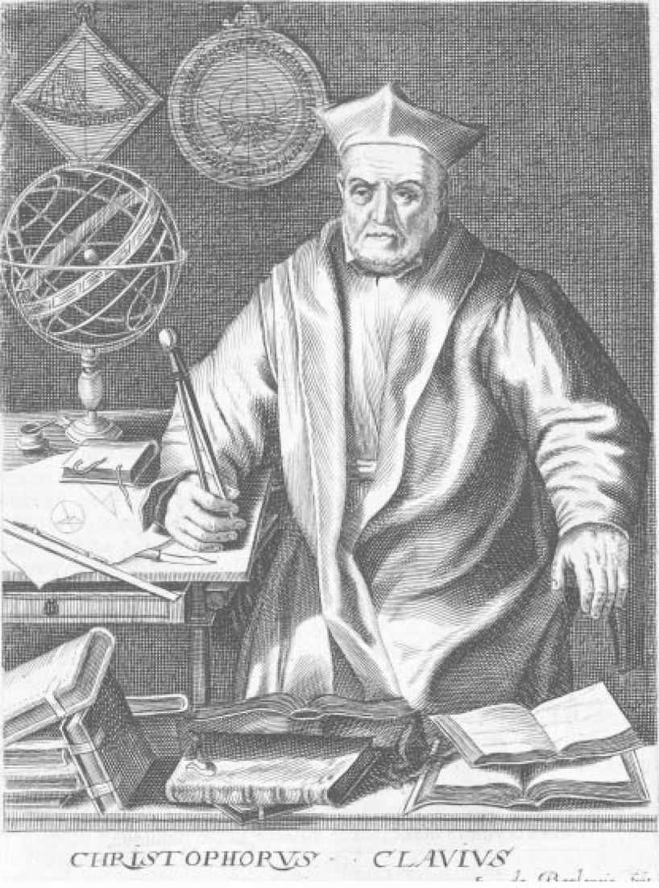
图2-2 1606年前后的克里斯托弗•克拉维斯。根据弗朗西斯科•维拉梅纳（Francisco Villamena）的绘画，由埃•德•布隆尼斯（E. de Boulonois）雕刻。（图片提供：Huntington Library）
还有一些是天主教徒，比如红衣主教雅克•戴维•杜伯龙（Jacques Davy Duperron），他也很不雅地称克拉维斯为“德国肥马”；还有法国数学家弗朗索瓦•韦达（François Viète），他与克拉维斯就新历法的优劣进行过激烈的辩论，他抨击克拉维斯为“假数学家和假神学家”。
在现在看来，如此刻薄的谴责会被认为已经超出了学术语言的范围，但在16世纪和17世纪，这是常有的事情。他们还炮制了一条对于克拉维斯来说更深刻的批评，而且很难对其置之不理。雅克•奥古斯特•德图（Jacques Auguste de Thou）在其1622年发表的《他的时代的历史》（History ）一书中，引用了韦达对这位SJ会士的评价。他明确写道，克拉维斯是一位评注大师，他拥有一种善于解释他人发明的天赋，但在其所从事的学科中却没有做出原创性的贡献。这样来看，克拉维斯无非就是一头入不敷出的“野兽”，为了他的事业，他耗费掉了大量资源，但却不能产生原创性的见解。
必须指出，这一观点并非是完全不公正的评价。毫无疑问，克拉维斯是数学科学的伟大促进者，在SJ内部与外部同时提高了数学科学的形象和地位。他也是一位有效的组织者，能够克服政治和组织上的障碍，在罗马学院建立他的数学学院。他是一位宗师，深受几代学生的爱戴和尊敬，其中有很多人凭借自身的实力成为领先的数学家。他是那个时代领先的教育家之一，在此后的许多年里，他详细的数学课程对欧洲的数学教学产生了深远的影响。也许最具影响力的是，他编写了新的教科书，他在几何学、代数学和天文学领域的教科书被不断再版发行。
那么，他是一位原创型的数学家吗？他的教科书的确没有提供多少有关原创性的证据。虽然有人指出他在组合理论方面包含一些新的成果，但他的欧几里得几何在本质上还是对古代文本所进行的近代注释。经他注释的萨克罗博斯科的《天球论》，确实使用了一些中世纪的原创性观测结果和理论，而当传统的地心说世界观被尼古拉斯•哥白尼、第谷•布拉赫和开普勒挑战的时候，克拉维斯的教科书则成了旧的正统学说的顽强捍卫者。虽然他了解韦达所得出的富有开创性的研究成果（近代代数的基础），但克拉维斯的代数教科书却没有包含他的任何新成果，而是总结了早期意大利和德国的代数学家的一些著作，两者比较起来可谓是高下立判。德图把克拉维斯描述成非原创数学家，说他永远不会与前人的传统背道而驰。这里想说的是，前面提到的这些情况都可以作为支持德图观点的有力证据。尽管这样的描述无疑是在有意侮辱这位老SJ会士，尤其在我们这个时代，这样的评价似乎更为严厉，因为现在几乎完全是根据数学家的创造性和原创性来对其成就进行评判的。
然而，根据这个标准来评判克拉维斯却是不公正的。克拉维斯从来没想过要在数学方面做出原创性的贡献，并且如果其他人也能像他这样的话，他还会感到十分高兴。他在“绪论”中解释道：“欧几里得和其他数学家的数学定理，古往今来都保持着它们真正的纯洁性、确定性以及强大而严格的证明过程。”在克拉维斯看来，数学之所以值得研究，不是因为这个学科可以进行开放式的研究并取得新的发现（现代数学家正是这种看法），而是因为它是永恒不变的，它的结果不仅在遥远的过去是正确的，而且在今天以及遥远的未来也将依然如此。与所有其他学科不同，数学能够提供稳定、有序和不变的永恒真理。基于这个目的，新的发现不仅是无关紧要的，而且还具有潜在的破坏性，因此绝不应该受到鼓励。从这个角度来评判的话，克拉维斯可能确实称得上是那个时代的伟大数学家之一，尽管他与我们今天所了解的数学家非常不同。
依靠严格遵循已有的数学真理，克拉维斯做到了始终忠于教会的学术传统和教皇的命令。总会长阿奎维瓦曾警告说，不应该让任何人怀疑SJ在进行创新，而且这种根深蒂固的保守主义也延伸到了各个知识领域，在数学方面尤为突出。为了提高数学在SJ学校的地位，克拉维斯所做的一切都是依赖于这样一个事实，即相比其他任何科学，数学都是更加严格、有序和永远正确的。研究其他学科可能有其他的一些原因：研究神学是因为它是关于“上帝之道”的学问；研究哲学是因为它是关于世界观的学问，而且是理解神学所必不可少的。但是，为什么研究数学呢？只因为它提供了一种完美的具有理性秩序和确定性的模型，并且提供了一个普遍真理如何统治世界的典范。如果把数学打造成为一个充满创新的领域，不断提出新的真理，然后再接受质疑和争论，那么这门学科将会变得徒劳无益；这样的数学是危险的，因为它不仅不会对真理的根基起到支撑作用，而且还将对其产生损害。
克拉维斯为SJ的数学传统留下了深深的印记。几个世纪以来，SJ的数学家一直坚持使用经过检验的方法，尽可能地遵循欧几里得的方法，并且避免接触不确定的新领域。但就在克拉维斯建立强大的SJ数学学院的这几年时间里，一种非同寻常的数学实践方法正在悄然而起，它将会挑战克拉维斯所珍视的数学原则。SJ会士坚持明确和简单的公设，而新一代的数学家则依赖于对物质内部结构的一种模糊的直觉；SJ会士乐于见到绝对的确定性，而新一代的数学则提出一种带有矛盾的方法，并且似乎为这些悖论而着迷；SJ会士不惜一切代价尽量避免争议，而新的方法似乎从一开始就陷入了难解的争议。它是SJ会士怎么也想象不到的一种方法，但这种方法却蓬勃发展起来了，不断获得新的支持和新的追随者。它被称为不可分量法。
伽利略是托斯卡纳大公费迪南多二世统治时期的数学家和哲学家。1621年12月，他收到了一位崇拜者寄给他的一封信，这位崇拜者就是23岁的米兰修道士博纳文图拉•卡瓦列里。几个月以前，卡瓦列里曾在佛罗伦萨拜访过伽利略，这位年轻修道士敏锐的数学头脑给伽利略留下了深刻的印象，伽利略希望与他继续保持书信来往。卡瓦列里也确实这样做了，他的信中充满了对这位佛罗伦萨圣人的钦佩和赞赏之情，他报告了自己最新取得的数学成果，并就自己激进的新研究方向征询伽利略的意见。
伽利略当时正处于权力与名誉的顶峰，他已经习惯了雄心勃勃的年轻人向他寻求意见和资助。这时距离他制造第一架望远镜已经过去了12年——那时他还是帕多瓦大学的一位数学教授。他用望远镜遥望天空，从中看到的景象永远地改变了人类的宇宙观。他观测到了肉眼看不到的无数星辰、月球表面上的山脉和峡谷，以及太阳表面上的黑斑。其中最重大的发现就是，他观测到了4个微小的斑点，他推断那是围绕木星运行的卫星，类似于月亮绕着我们地球运行。伽利略很快将他的新发现编写成了一本名为《星际信使》（Sidereus Nuncius ）的小册子，并把它送给了当时的一些著名学者和天文学家。这本小册子的影响很快就显现了出来，这位默默无闻的教授几乎一夜之间在整个欧洲家喻户晓，他被认为是开创了天体研究先河的人。在1611年访问罗马期间，伽利略与教皇分享了关于他的新发现的故事，并得到了SJ红衣主教贝拉明个人的友好接见。而罗马学院的神父克拉维斯对创新永远抱有怀疑态度，他首先提出了异议，并讽刺道，要想看到这些东西，必须先把它们放到望远镜里面才行。但是，在SJ天文学家证实了佛罗伦萨人的发现并表达了他们的祝福之后，克拉维斯的立场也发生了转变。这位久负盛名的数学家在他生命的最后一年，仍然出席了SJ会士在罗马学院为伽利略举办的奢华的庆祝仪式。
像许多当时或者现在的教授一样，伽利略也并不喜欢大学的教学工作。他似乎察觉到了一个机会，能够彻底摆脱这种令人厌烦的负担。伽利略将他的《星际信使》献给了佛罗伦萨的统治者——托斯卡纳大公科西莫二世•德•美第奇（Cosimo Ⅱ de’ Medici），并明显地暗示，他希望加入到这位王子的麾下。他还进一步示好，为了向大公及其家族致敬，他将新发现的木星的卫星命名为“美第奇星”，从而将美第奇家族的名字永远地铭刻到了天体之上。这些努力最终奏效了，1611年，伽利略离开帕多瓦，投奔位于佛罗伦萨的美第奇宫廷。在那里，他被任命为大公的首席数学家和哲学家。令伽利略感到十分满意的是，他的新职位不但没有教学义务，而且他还被正式授予了比萨大学的数学家头衔。此外还有高出他之前几倍的工资，这明显高于之前他作为普通教授所能享受到的待遇。
虽然已经成名，但伽利略并没有满足于他已有的成就。作为一个充满着热情又有着敏捷思维和犀利文笔的人，他十分享受科学论战所带来的喧嚣。来到佛罗伦萨之后没过多久，他就完成了《论浮体》（Discourse on Floating Bodies ），这本书实际上是对亚里士多德物理学原理的直接攻击。到1613年，他出版了《论太阳黑子》（Letters on Sunspots ），书中记录了他与一个人进行的争论，这个人被神秘地命名为“阿佩莱斯”（Apelles），他们争论的内容主要涉及他的新发现以及这种太阳现象的本质。在这本书中，伽利略声称他是第一个观察太阳黑子的人（可能是他真诚的说法，但事实上并非如此）。他还认为，太阳黑子位于太阳表面或非常接近于太阳表面，并且证明了太阳绕着它的轴发生自转。最终，他更进一步声称，太阳黑子为哥白尼学说提供了重要的支持（哥白尼将太阳而不是地球放置在宇宙的中心）。伽利略深知，他的这些说法必然会激怒传统的亚里士多德学派的学者，因为他们坚信天堂是完美的，而那些耀斑则应该是靠近地球的大气现象。当“阿佩莱斯”被揭露为是SJ学者克里斯托夫•沙伊纳时，事情变得愈发紧张，因为伽利略的嘲讽极大地冒犯了沙伊纳。这是伽利略与SJ之间出现的第一次摩擦，而这距离他在罗马学院被公开致以荣誉才仅仅过去两年时间。但事情还远没有结束，在未来的几年里，伽利略与SJ之间的关系还会变得越来越紧张，以至于在20年之后，这位佛罗伦萨的科学家会受到宗教裁判所的审判，会被指控并且最终被判为异端，而这正是SJ带头发起的。
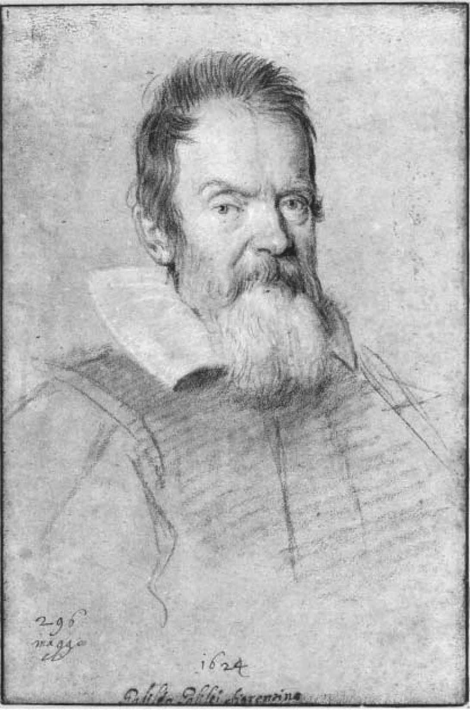
图3-1 处于顶峰时期的伽利略。奥塔维奥•莱奥尼（Ottavio Leoni，1578—1630）所作肖像。（RMN-Grand Palais/Art Resource，NY）
伽利略是在铤而走险。亚里士多德是教会神学家所珍视的权威人物，而他不仅挑战了亚里士多德的权威，而且还要违反圣经的明确含义——圣经曾在几个地方明确暗示过太阳围绕地球转动。如果是一个小心谨慎的人，他可能会避开这样一个潜在的爆炸性问题，但伽利略显然并非如此。他没有坐等对手的攻击，而是决定出版他自己的神学著作，以争取斗争的主动权。伽利略把《致大公夫人克里斯蒂娜》（Letter to the Grand Duchess Christina ）寄给了克里斯蒂娜本人。克里斯蒂娜是托斯卡纳大公的母亲，她曾表示过对伽利略的关注，并称他的体系与“上帝的启示”不一致。这本书流传于1615年，没过几年即获出版，其中包含了伽利略对克里斯蒂娜所提出问题的回应，它被称为关于“两本书”的学说。他解释道，自然之书与圣经之书永远不会发生冲突。一本书包含的是我们在所处的世界中看到的一切事物，另一本书包含的是“神圣的启示”，但这两本书最终都来自于同一来源——“上帝本身”。因此，如果在两者之间产生了冲突，那么唯一可能的解释就是，我们没有正确地理解其中的某一本书。
伽利略承认，只要没有专门的论文能够作为科学“依据”，我们就应该一直接受圣经之书的权威性，领会它最简单、最直接的含义。但是，如果我们确实有了科学依据，那么两者的角色就应该互换，圣经需要得到重新解释，以使圣经之书与自然之书保持一致。伽利略还警告说，否则的话，我们就不得不相信那些明白无误的谬误，这只会为教会招致嘲笑和诋毁。伽利略坚称，正因为如此，教会才应该接受哥白尼的学说。他还坚称，他能够证明地球和行星确实是围绕着太阳转动的，教会这样与昭然若揭的真理背道而驰的做法，只会使自己名誉扫地。伽利略认为，必须用新的科学解释来替换对圣经的传统理解，这样才能使圣经与科学真理保持一致。并且他还在书中加入了他自己对圣经关键段落的解读，以说明它们与哥白尼的学说是完全一致的。
《致大公夫人克里斯蒂娜》有着优雅的笔触和出众的说服力，这不仅是对哥白尼学说的一次强有力的辩护，而且也是对信仰的兼容性和自由的科学研究的一次强有力的辩护。但是，17世纪的宗教权威并不打算善待这位擅自闯入他们领地的不速之客。伽利略诚然是一位天才的天文学家，但他没有多少资格能够谈神学，他在神学领域终究只能算是一个外行。警告这位闯入者的任务落到了克拉维斯的老同学——受人尊敬的SJ红衣主教罗伯特•贝拉明的身上。1615年4月，贝拉明就一本书发表了一次自己的看法，这本书的作者是伽利略的一名狂热追随者——加尔默罗会修士保罗•佛斯卡里尼（Paolo Foscarini）。虽然这些看法在名义上是说给佛斯卡里尼听的，但这显然是为了引起伽利略的注意。贝拉明承认，如果确实存在关于哥白尼学说的科学依据，那么圣经上的说法就应该给予重新考虑，“我们应该说我们不理解经文，而不是说已经证实了一些经文是假的”。他继续说道，但由于“并未向我出示过”这样的科学依据，所以我们必须坚持“圣经的旨意”和“圣父的共识”——所有这些都一致认为太阳围绕地球转动。
贝拉明无疑一语中的。伽利略可能确实提出了许多强有力的论据来支持哥白尼体系，但尽管他敢于声称可以证明它，却并不能真正地去证明它。他根据潮汐的起落而假定的“证据”是很难站得住脚的，甚至像一些同时代的人所指出的那样，他的“证据”是漏洞百出的。由于缺乏证据，所以贝拉明认为圣经应该被采信的观点也就显得合乎情理了。他没有进一步禁止伽利略把哥白尼体系作为一个与观测结果非常契合的假设来进行研究，他只是要求伽利略不再坚持认为，哥白尼学说是正确的且真实地描述了太阳和行星的实际运动。
贝拉明发表了这项意见之后不到一年，它就成了教会的官方立场，从而对伽利略提倡哥白尼学说施加了严格的限制。但在1616年的时候，教会还没有准备放弃他们昔日的英雄，因为伽利略不仅是欧洲最有名气的科学家，而且也是一位虔诚的天主教徒。鉴于伽利略在罗马享有的崇高名望，教皇保罗五世与贝拉明召见了伽利略，保罗五世向伽利略保证了他的善意，而贝拉明则向他解释了禁令的条款，并进行了书面确认。16年之后，伽利略正是因为涉嫌违反这项禁令，而导致他接受宗教裁判所的审判。
在随后的几年里，伽利略不得不把这件令人痛心的事情暂时搁置起来，而且在表面上表现得像什么都没有发生过一样。他依然是一个有名望的人，是意大利甚至整个欧洲的领先科学家，安稳地享有着他在美第奇宫廷的地位。他与教会权威之间的摩擦使得他在一些圈子里受到了质疑，其中SJ首当其冲。不过，这也使他成了一部分意大利人的英雄，这些人更加崇尚自由学说，他们厌恶教会坚持认为自己是所有真理的裁决者，甚至更厌恶SJ专横的行事方式。“自由派”的堡垒是位于罗马的 林琴科学院 注16 ，伽利略是他们当中最杰出的成员。该学院由贵族费德里科•切西（Federico Cesi）于1603年创立，它是罗马一些最杰出的学者的聚集地，无论是神职人员还是世俗平民都聚集于此。在1615年至1616年这段充满纷扰的岁月里，林琴人成了伽利略的坚强后盾，他们的支持无疑更能分担一些他的痛苦。在随后的几年里，当伽利略开始再次发表被禁令限制的观点时，他们还将发挥同样重要的支持作用。
到1621年，伽利略仍保持着谨慎的态度，但他应该很乐于收到卡瓦列里的一个看似安全的数学问题。卡瓦列里提出，假设我们有一个平面图形，在该图形内画出一条直线，然后，假设我们继续在这个图形内画出所有可能的直线，使之与第一条直线平行。他写道：“在这种情况下，我们认为已经画出了这个平面上的‘所有直线’”。类似地，假设有一个三维实体，对于实体内与一个既定平面平行的所有平面，我们称之为“所有平面”。他需要向伽利略询问的是：是否可以将这个平面图形等同于该图形内的“所有直线”，并且是否可以将这个实体等同于该实体内的“所有平面”？进而，如果有两个图形，是否可以将一个图形的“所有直线”与另一个图形的“所有直线”进行比较，或者是否可以将一个实体的“所有平面”与另一个实体的“所有平面”进行比较？
卡瓦列里的问题看似简单，但它直指有关无穷小问题的核心矛盾。从直觉来说，平面似乎确实是由一些平行的直线构成的，实体也是由一些平行的平面构成的。但正如卡瓦列里在信中所提到的问题，我们可以在任何一个平面上画出无穷多条平行线，也可以在任何一个实体中画出无穷多个平行面，这就意味着，“所有直线”和“所有平面”的数量总是无穷的。现在，如果给每条直线设定一个宽度，那么，无论这个宽度有多么小，这无穷多条线都将累积成为一个无穷大的平面——它与我们最初假设的那个平面不相等。但是，如果线是没有宽度的（或者宽度为零），那么无论累积多少条直线，我们最终得到的依然是零宽度和零面积，也就是说，我们根本没有累积出任何图形。这也同样适用于一个三维实体的“所有平面”：如果它们存在一个厚度，那么无论厚度多小，它们都将不可避免地构成一个无穷大的实体；但如果它们没有厚度，那么无论将它们累积多少，所得到的结果总会是零。
从毕达哥拉斯和芝诺的时代以来，这个问题就一直困扰着哲学家和数学家们，这是一个有关连续体构成的老问题。基于这个熟悉而又棘手的问题，卡瓦列里现在又增加了另一个疑问：是否允许将构成一个图形的“所有直线”与构成另一个图形的“所有直线”进行比较？他在信中指出，这涉及到两个无穷大量之间的比较问题，而这是被传统的数学规则所严格禁止的。因为根据“阿基米德公理”，如果有两个数值，那么当且仅当人们将较小的数值放大足够多的倍数时，它才会大于那个较大的数值。然而，无穷大却不符合这种情况，因为无论人们将无穷大放大多少倍，总会得到一个不变的结果：无穷大。
遗憾的是，我们无法得知伽利略对年轻的卡瓦列里做出了什么样的回应，因为只有卡瓦列里的信件被保存了下来。从卡瓦列里接下来几个月的信件中可以看出，伽利略起码鼓励了卡瓦列里继续进行他的研究。这可能也在卡瓦列里的预料之中，因为伽利略对于连续体的构成问题曾经持有过非正统观点，并因此而闻名。早在1604年，在研究自由落体的规律时，伽利略就已经在尝试使用这样一个概念，即三角形的表面积（代表物体运行的距离）是由无穷多条平行线构成的，每条平行线都代表着物体在某一时刻的速度。几年之后，到了1610年，伽利略仍然在研究连续体悖论，并声称打算用一整本书来论述这一问题。这本书最终并未成形，也许是因为这些年的戏剧性事件改写了他的人生历程。但在30年之后，他还是在他最后一本伟大的著作中相当详细地提出了他的看法，这本著作即《论两种新科学及其数学演化》（Discourses and Mathematical Demonstrations Relating to Two New Sciences ，以下简称《论述》），其中被认为包含了他的许多最重要的科学贡献。众所周知，这本著作是伽利略在1633年被宗教裁判所审判之后，在漫长的软禁岁月里，于佛罗伦萨城外的阿尔切特里（Arcetri）的别墅内完成的。虽然该书于1638年在荷兰出版，但它的内容却是基于他数十年之前的研究成果——当时他还在比萨和帕多瓦大学担任教授。
《论述》是以三个朋友间的对话形式完成的，这三个人分别是萨尔维亚蒂（Salviati）、沙格列陀（Sagredo）和辛普利西奥（Simplicio）。这三个人物已经被读者所熟知，因为仅在几年之前，同样三人的对话曾出现在《关于托勒密和哥白尼两大世界体系的对话》（Dialogue on the Two Chief World Systems ，以下简称《对话》）一书当中，这是伽利略关于哥白尼体系的一本非常流行的著作，它最终导致了伽利略被宗教裁判所审判并定罪。《对话》一书中包含了大量的思想火花与机智的对话，尽管这些特点在《论述》一书并没有得到延续，但在《论述》中仍保留了这三个朋友的角色：萨尔维亚蒂的身份是伽利略的代言人；辛普利西奥的身份是伽利略的批评者，并且是亚里士多德的支持者；沙格列陀的身份是明智的仲裁者，他经常站在萨尔维亚蒂一边。在前4天的对话当中，这三个朋友都在讨论关于“内聚力”（cohesion）的问题：是什么使物质聚合在一起并使其不会因外力而解体呢？萨尔维亚蒂首先从讨论绳索开始，说明了绳索的内聚力源于它们是由大量互相编织在一起的绳线构成的。然后，他的讨论延伸到了木头上，他认为，木头的内聚力也是源于它是由大量紧密排列的纤维构成的。他随后提问：但是像大理石或者金属这类其他物质的情况又会如何呢？是什么力量使得它们如此有力地聚合在一起呢？
根据萨尔维亚蒂的说法，问题的答案就是“厌恶真空”——大自然对真空的厌恶。他指出，由经验我们得知，厌恶真空是一种非常强大的力量：两块表面十分光滑的大理石或金属很难被分离，因为将它们分开时会产生瞬间的真空。这种强大的力量不仅在物体之间存在，而且在每个物体的内部也一样存在，正是这种力量使得物体能够聚合在一起。就像绳索是由独立的绳线构成的，以及木头是由独立的纤维构成的一样，一块大理石或者一片金属也是由紧密排列在一起的无数原子构成的。不过，它们之间的区别在于：一条绳索是由大量但有限数量的线绳构成的，一块木头也是由大量但有限数量的纤维构成的，而一块大理石或者一片金属却是由无限数量的无穷小的原子或“无穷小量”构成的。将它们分开会产生无穷多个无穷小的空间，这些无穷小的空间里的真空就是将物体聚合在一起的粘合力，也就是导致其内部聚合力的原因。
这就是萨尔维亚蒂（伽利略）的物质理论，正如他自己所承认的，这是一个难以理解的理论。萨尔维亚蒂感叹道：“这是一片深不可测的海洋，我们早已置身其中，却对它一无所知！”“对于真空、无穷大和无穷小量……即使我们经过上千遍的讨论，我们真的能够最终达到这片汪洋的彼岸吗？”难道有限数量的物质真的是由无穷多的原子以及无穷多的真空空间构成的吗？为了证明他的观点，他转向了数学，试图寻求答案。
萨尔维亚蒂通过中世纪的一个悖论研究了连续体的问题，尽管该悖论与亚里士多德这位古代哲学家没有任何关系，并且它提供的启示也基本与亚里士多德无关，但这个悖论仍被称为“亚里士多德的车轮悖论”。萨尔维亚蒂对他的朋友提出，假设有一个六边形ABCDEF，并且在它里面有一个较小的六边形HIJKLM，这两个六边形有一个共同的中心G。进而再假设，我们将大六边形的边AB延长，形成一条直线AS，并将小六边形中与之平行的边HI延长，形成另一条直线HT。接下来，我们绕着点B旋转大六边形，使边BC落在直线AS上的线段BQ之上。与此同时，较小的六边形也会跟着一起转动，最终边IK会落在直线HT上的线段OP之上。萨尔维亚蒂指出，由大六边形得到的直线与由小六边形得到的直线之间是存在着差别的：由较大的六边形得到的是一条连续的直线，因为线段BQ正好与线段AB相邻；然而，由较小的六边形得到的线却是有缺口的，因为在线段HI和线段OP之间有一个空间IO，六边形在其旋转过程中从未与IO有过接触。如果我们让大六边形沿着直线完成一周完整的旋转，将得到一条连续的线段，它的长度等于大六边形的周长。同时，较小的六边形旋转所走过的距离大致与直线HT相等，但由它得到的直线将是不连续的：它由六边形的六条边以及边与边之间六个相等的缺口构成。
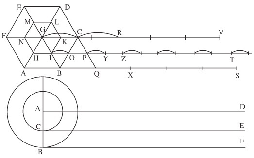
图3-2 亚里士多德的车轮悖论。（伽利略，《论述》）
根据萨尔维亚蒂的论述，适用于六边形的情况，同样适用于任何多边形，甚至是一个有十万条边的多边形。将它沿着直线旋转将得到一条与其周长相等的直线，而其内部较小但类似的多边形将随之得到一条长度相等的直线，但该直线是由十万条线段及间隔的十万个缺口构成的。如果我们把有限边数的多边形替换成无限边数的多边形又会如何呢？换句话说，如果是一个圆呢？如图3-2中位于下方的图所示，将圆旋转一整圈将得到一条直线BF，它的长度等于圆的周长；其内部的圆与之同时完成一圈旋转之后，将得到一条长度相等的直线CE。在这个例子中，圆与多边形的原理没有什么不同。但这里出现了一个问题：线段CE的长度等于BF，而BF是由周长更大的圆所得到的直线。更小的圆如何能画出一条长于自己周长的线段呢？根据萨尔维亚蒂的说法，答案就在于，看似是连续线的CE，其实就像由旋转多边形得到的线段一样，它的中间也间隔着一些真空空间，因此导致了它的长度大于周长。由十万条边构成的较小的多边形所得到的线段，是由十万条线段间隔着十万个缺口构成的；同理可以得出，由较小的圆所得到的线段，是由无穷多条线段间隔着无穷多个缺口构成的。
通过将“亚里士多德的车轮悖论”延伸到其逻辑上的极限情况，伽利略得出了一个激进并且矛盾的结论：一条连续直线由无穷多个不可分点以及点与点之间的无穷多个微小间隙所构成。这一结论可以同时支持他的物质结构理论，以及他的这样一个观点，即物体是由遍布其中的真空聚合起来的。这为思考物质世界提供了一个新的途径，也提出了一个新的数学愿景：根据萨尔维亚蒂的观点，在新的数学愿景中，“任何连续体都是由绝对不可分的原子构成的”。数学连续体的内部结构与绳索中的绳线、木头中的纤维，或者构成光滑物体表面的原子别无二致：它是由紧密排列着的无穷小量以及它们之间的微小真空空间构成的。在伽利略看来，数学连续体是以物理现实为模型的。
伽利略的方法让那些同时代的数学家们一筹莫展，因为它直接违背了现有的悖论，违背了自古以来人们认识连续体的指导方法。不过，他至少还有一个主要的支持者，那就是卢卡•瓦莱里奥——他就是在伽利略的鼓励下加入林琴科学院的。瓦莱里奥是罗马智德大学的修辞学和哲学教授，被公认为是意大利领先的数学家之一。在他分别于1603年和1606年完成的《重心》（De centro gravitatis ）和《抛物线》（Quadratura parabola ）两本书中，他曾广泛地使用不可分量，以使能够确定平面图形和实体的重心。
瓦莱里奥是在罗马学院和SJ会士一起学习数学的，并且是在克拉维斯的亲自指导下。不过在这个杰出的群体中，伽利略的数学原子论却并不受欢迎。在SJ会士看来，不可分量数学显然与合理而正确的数学方法背道而驰。我们还能记得，SJ会士之所以看重数学，是因为它代表着一种严格理性的秩序，并且这种秩序可以用来规范这个看似无序的世界。数学，特别是欧氏几何，代表着思想战胜了物质，理性战胜了难以驾驭的物质世界，这不仅反映了SJ的数学理想，而且反映了他们在宗教上，甚至是政治上的理想。但是，伽利略却把他的数学分析建立在了一种对物质结构的直觉之上，而非建立在那些不证自明的欧几里得公设之上，他把这个顺序颠倒过来了。伽利略指出，数学连续体的构成，可以由绳索的构造以及木头的内部结构推断得出，并且可以通过想象车轮的滚动来进行验证。与SJ的方法不同，伽利略提出，像平面和实体这样的几何对象，与我们周围的物质对象没有什么不同。他不是通过数学推理来将秩序强加给这个物理世界，而是由物理对象创造纯数学对象，而且这些数学对象还存在着模糊和不一致的情况。对于这种观点，克拉维斯肯定不会感到高兴。
虽然伽利略对无穷小的支持为这种观点增加了一定的可见度和可信度，但他本人在他实际的数学研究中却很少使用不可分量。为数不多的几次例外之一，是在他关于自由落体下落距离的著名论证中。在《论述》一书中萨尔维亚蒂提出，假设有一个物体被静止地放置在点C，然后以一定的加速度下落，如自由落体运动，最终到达点D。现在，用线段AB表示该物体从C运行到D总共花费的时间，用垂直于AB的线段BE表示物体到达D时的最大速度。从A到E画一条直线，并且在AB与AE之间以固定的间隔画出一些与BE平行的线段。萨尔维亚蒂指出，这些线段分别代表了物体在其加速运动过程中某一时刻的运动速度。因为AB上有无穷多个点，并且每个点都代表着某一时刻，因此也有无数多条这样的平行线，它们充满了整个三角形ABE。因此，在所有这些点上的速度总和就等于该物体在时间AB内走过的总距离。
萨尔维亚蒂继续说道，现在如果我们在点B与点E的中间位置取一个点F，并通过F画一条平行于AB的线，再画一条平行于BF的线AG与之相交，则矩形ABFG 的面积等于三角形ABE的面积。因为三角形的面积表示均匀加速运动的物体走过的距离，而该矩形的面积表示匀速运动的物体走过的距离，萨尔维亚蒂由此得出结论，如果匀速运动物体的速度是均匀加速运动物体的最大速度的一半，那么一个物体在一定时间内从静止开始以均匀加速运动所走过的距离，等于另一个物体在相同时间内以匀速运动走过的距离。
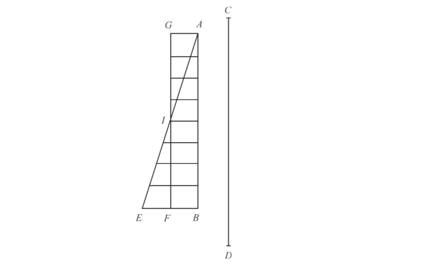
图3-3 伽利略对均匀加速运动物体的讨论。（伽利略，《论述》）
这就是通常所说的“落体定律”（law of falling bodies），它现在已经成为中学生在物理课上应该学到的一项基础知识，但在当时那个年代，这个定律可以称得上是革命性的。这是在现代科学中首次对运动进行的定量数学描述，它奠定了现代力学以及现代物理学的基础。伽利略深知这项定律的重要性，他将其收录在了自己最受欢迎的两部著作之中，即1632的《对话》和1638年的《论述》。虽然该定律主要依赖于欧氏几何关系，但它的确表明了伽利略的意愿，即假设一条直线是由无穷多个点构成的。这也正是卡瓦列里在1621年向他提出过的问题，不管伽利略给他的回复是什么，可以肯定的是，这位年轻的修道士并没有气馁。在17世纪20年代，卡瓦列里坚持了无穷小的思想，并把它发展成了一种强大的数学工具。他称之为“不可分量法”，这一名称将永存史册。
1598年，卡瓦列里出生于米兰的一个中产阶级家庭里，并很可能是一个有名望的家庭，甚至有可能是贵族。他的父母给他取名为弗朗西斯科，但在他15岁加入圣杰罗姆会（St.Jerome，也称圣杰罗姆传教会，或译作圣哲罗姆派）成为见习修道士的时候，他把名字改成了博纳文图拉。这两个团体却有着很大的差别。SJ是一个现代的宗教团体，成立于宗教改革危机的关头；而卡瓦列里的圣杰罗姆会则可以追溯到14世纪，它是在 黑死病 注17 肆虐之后的几十年里虔诚信仰的产物。SJ是一个庞大的体系，它的学校和传教团遍布世界各地；而圣杰罗姆会只是一个意大利的本地宗教团体，他们因在救死扶伤方面所做的贡献而受到尊重，但完全没有依纳爵追随者们的那种雄心壮志。我们已经知道，一个SJ会士可能需要几十年才能成为合格的成员，但圣杰罗姆会成员的培养过程却非常简短。1615年，17岁的卡瓦列里在他进入见习期两年之后，就穿上了白色的长袍，并系上了深色的皮带，这标志着他已经成为圣杰罗姆会的正式成员。几个月之后，他离开家乡米兰，去往位于比萨的圣杰罗姆会的传教所。
我们不知道调往比萨是卡瓦列里的主意还是其上司的主意，但结果证明，无论是对这位年轻的修道士来说，还是对数学学科来说，这都是一次幸运的调动。他在多年之后给埃万杰利斯塔•托里切利的一封信中写道：“我很自豪，而且将永远自豪，能够在如此良好的氛围下得到数学基础知识的滋养。”他的数学启蒙老师是贝内代托•卡斯泰利（Benedetto Castelli，1578—1643）。卡斯泰利是伽利略以前的学生，也是伽利略终身的朋友和支持者，他当时正在比萨大学担任数学教授。卡斯泰利指导卡瓦列里学习了伽利略在物理学和数学方面的著作，并且还在适当的时候向这位伟大的佛罗伦萨人引荐了卡瓦列里。1617年，卡瓦列里搬到了佛罗伦萨，在他的米兰资助人——红衣主教费德里戈•博罗梅奥（Federigo Borromeo）——的帮助下，加入了由伽利略在美第奇宫廷的门徒和崇拜者组成的学术圈子。这位红衣主教写信给伽利略道：“在您的帮助下，卡瓦列里必将能够达到更高的专业水平，这已经可以从他非凡的志向和能力上看出一些端倪。”
次年卡瓦列里回到了比萨。由于卡斯泰利被召进了大公科西莫王室，成为科西莫儿子的私人导师，所以卡瓦列里接替了他的职位，开始在比萨大学独立讲授数学课程。至此，卡瓦列里不再只是名誉上的数学家了，他已经成为一名专业的数学家，但在未来的10年里，他会一直在自己的数学职业和圣杰罗姆会的宗教职责之间左右为难。1619年，他申请了博洛尼亚大学数学教授的职位，这一职位自从两年前乔瓦尼•安东尼奥•马吉尼（Giovanni Antonio Magini）去世之后就一直空缺着。只有得到伽利略的积极支持，才有可能保证这么年轻的一位申请人能够获得如此享有声望的职位，但伽利略似乎不愿介入，于是这个机会就这样溜走了。相反，在1620年，卡瓦列里被召回到了圣杰罗姆会在米兰的传教所，成为红衣主教博罗梅奥的执事。远离了杰出的美第奇宫廷，卡瓦列里发现自己的才华并不总是受到赏识。他在给伽利略的信中写道：“我现在在自己的家乡，这里有很多老的教会成员希望我在神学以及传教上取得更大的进步。您可以想象他们在看到我如此喜爱数学时是多么的不快。”
尽管越来越沉浸于数学之中，但卡瓦列里仍在认真地履行他的宗教职责。他开始学习神学，出乎所有人的意料，他很快弥补了因数学而占去的时间。由于取得了很大的进步，再加上红衣主教的支持，他在教会的等级得到了迅速的提升。1623年，他被任命为圣杰罗姆会圣彼得修道院的院长，这所修道院位于离米兰城不远的洛迪镇（Lodi）。3年之后，他又被晋升为圣本笃修道院的院长，这所修道院位于较大的城市帕尔马。但与此同时，卡瓦列里也在寻求机会成为职业数学家。1623年，他再次提出申请，希望获得博洛尼亚大学的教授职位，不过，博洛尼亚参议院虽然没有直接拒绝他的申请，但一再要求他提供更多的学术成果。1626年，当他的老恩师卡斯泰利被任命为罗马智德大学的数学教授时，卡瓦列里似乎又感觉到了机会。为了促成这个机会，他卸去了教会的职务，并在罗马待了6个月的时间。在此期间他一直和颇具影响力的乔瓦尼•钱波利（Giovanni Ciampoli，1589—1643）在一起——钱波利不仅是伽利略的朋友，而且是林琴科学院的成员。但是尽管如此，卡瓦列里最后仍然一无所获。回到帕尔马之后，他开始接近掌管帕尔马大学的SJ神父，但就像他在给伽利略的信中所写到的那样，这里根本不会允许一个圣杰罗姆会成员在这所大学任教，更别说是伽利略的学生了。
直到1629年，命运终于开始垂青卡瓦列里。由于同情他的学生，伽利略终于公开声明“自阿基米德之后，很少有学者——也许根本没有哪位学者——能像卡瓦列里那样对几何有如此深刻的理解”。博洛尼亚参议院被彻底说服了，并在当年8月25日为这位圣杰罗姆会成员提供了博洛尼亚大学空缺的数学教授职位。这是卡瓦列里近10年努力寻求的职位，他没有再犹豫，马上就接受了任命。他很快搬进了圣杰罗姆会在博洛尼亚的传教所，并于同年10月开始在大学任教。在余下的19年里，他一直留在这座城市，住在修道院并在大学教书。虽然依照现代标准他还算得上是年轻人，但他的身体状况却每况愈下。由于受到痛风反复发作的折磨，这使得旅行变得非常困难。在那些年当中，他只有一次冒险远离自己的城市。促使他远离自己舒适的常规生活的唯一原因就是，1636年，在伽利略漫长而孤独的软禁岁月中，他获准拜访这位已经年迈的大师。
从卡瓦列里调到比萨直至被任命为博洛尼亚教授的这10年时间，对于这位年轻的修道士来说是不顺利的10年，但这也是他数学创作最旺盛的时期。事实上，这导致他后来成名的几乎所有原创素材，甚至他书中的很多实际文本，都可追溯到这段动荡的岁月。自从在博洛尼亚安定下来，他就被教学职务拖累住了，此外还有参议院对他的要求——参议院规定数学教授需要填报一系列天文学和占星术的表格。即便如此，这位勤劳的修道士还是努力在1632年出版了《燃烧的镜子》（Lo speccio ustorio ），在1635年出版了《不可分量几何学》（Geometria indivisibilibus ），并且在1647年出版了《六道几何学练习题》（Exericitationes geometricae sex ）。卡瓦列里的这些著作大部分构思并完成于17世纪20年代，它们奠定了卡瓦列里作为不可分量的主要倡导者的声望和地位。
正如伽利略是从讨论绳索和木头的内部结构着手，试图对连续体在数学上进行理论化，卡瓦列里同样是根据人们的物质直觉来创立他的数学方法的。他写道：“很明显，我们应该将平面图形想象成由平行的织线织成的布匹那样，而把实体想象成由平行的页面构成的书本那样。”任何物体的表面，无论它多么光滑，实际上都是由微小的平行线构成的，这些平行线彼此紧挨着排列在一起；任何三维图形，不管它看上去多么坚固，都不过是由一摞极薄的平面构成的，这些平面彼此重叠着摞在一起。这些极薄的切片或者原子，相当于物质中的最小组成部分，他将其称为不可分量。
卡瓦列里很快指出，物理对象与其表亲数学对象之间有着重要的区别。他指出，布匹和书本都是由有限数量的织线或页面构成的，但平面和实体是由无限数量的不可分量构成的。这是处于连续体悖论核心位置的一个简单区别，伽利略在《论述》一书中掩盖了这个问题，而更加谨慎的卡瓦列里把它呈现了出来。但很显然，卡瓦列里也像伽利略一样，不是从抽象的通用公理着手来进行数学推理的，而是借助于形而下的物质进行猜测的。他用自下而上的方法进行概括，得出我们对物质世界的一种直觉，并把其变成一种通用的数学方法。
我们来一起感受一下卡瓦列里的方法，思考《六道几何学练习题》中第一道练习题的命题19：
如果在一个平行四边形中画出一条对角线，那么这个平行四边形的面积是由对角线分割成的每个三角形面积的两倍。
图3-4 《六道几何学练习题》，命题19，卡瓦列里。
这就意味着，如果在平行四边形AFDC中画出一条对角线FC，那么该平行四边形的面积等于△FAC和△CDF面积的两倍。如果用传统的欧几里得方法进行证明，它几乎是不值一提的，只要证明△FAC和△CDF是全等的即可。首先，它们共用边CF；其次，∠ACF等于∠CFD（因为AC平行于FD）；再次，∠AFC等于∠DCF（因为AF平行于CD）。因此可得△FAC和△CDF是全等的。由于这两个三角形构成了这个平行四边形，并且它们是全等的，所以它们的面积相等，由此可得，平行四边形的面积是每个三角形面积的两倍。证明完毕。
卡瓦列里当然非常了解这个证明过程，而且他也不会在他的书中浪费篇幅来证明如此基本的问题。但卡瓦列里是在力求得到一些其他的结论，并且以一种非同寻常的方式进行了证明：
沿着边FD和AC，分别由点F和点C作两条相等的线段FE和CB，并由点E和点B分别作两条线段EH和BM，使之平行于CD，这两条线分别与对角线FC相交于点H和点M。
卡瓦列里继续证明得出，小三角形FEH与CBM是全等的，这是因为边CB等于FE，∠BCM等于∠EFH，并且∠MBC等于∠FEH。由此得出，线段EH与BM是相等的。
以同样的方式，我们可以证明其他平行于CD的线段，也就是说，只要它们沿着边FD和CA到点F和点C的距离相等，那么这两条平行线本身就是相等的，正如极端的情况，AF与CD是相等的。因此△FAC中的所有线段与△CDF中的所有线段都是相等的。
卡瓦列里认为，由于一个三角形的“所有线”等于另一个三角形的“所有线”，所以它们的面积是相等的，并且平行四边形是每个三角形面积的两倍。证明完毕。
卡瓦列里的证明与传统的欧几里得证明之间形成了鲜明的对比。欧几里得是以经典的“自上而下”的方法进行证明的：从平行四边形的普遍特性开始，这些普遍特性来自于欧氏几何不证自明且不可辩驳的基本假设。从这种普遍特性出发，他一步一步地在逻辑上进行证明，从而推导出这个具体命题（即一个平行四边形被分成两个三角形）的最终答案。这表明，这种推理的普遍法则在本质上要求这两个三角形是相等的。但卡瓦列里没有从这些抽象的普遍法则着手进行证明，而是以一种物质上的直觉开始进行证明。他问道：每个三角形的面积是由什么构成的？他的回答是：根据与一块布匹的粗略的类比，它是由整齐排列着的一组平行线构成的。为了证明每个三角形的总面积，他继而着手“计算”那些构成三角形的平行线。因为在每个平面中存在着无穷多条线，所以实际上的计数是不可能的，但卡瓦列里证明了，两个三角形各自所包含的平行线的数量和大小都是相等的，因此得出这两个三角形的面积是相等的。
卡瓦列里进行证明的目的，并不是要说明这个定理是正确的（因为它是显而易见的），而是要说明它为什么是正确的：两个三角形之所以相等，是因为它们是由相同数量的完全相同的不可分割线排列构成的。而正是由于在几何图形中引入了这种元素，使得卡瓦列里的方法与经典的欧氏几何的方法产生了明显的差别。欧几里得的方法，凭借着其普遍适用的 第一原理 注18 和无可辩驳的逻辑推理方法，统治着所有几何对象，并最终统治着整个世界；相反地，卡瓦列里的方法从对世界的直觉入手，然后再推广到更广泛和更抽象的数学归纳，这种方法可以被恰当地称为“自下而上”的数学。
卡瓦列里对平行四边形的证明显示，他的不可分量法是有效的，但并没有达到具有足够优势而采用这种方法的程度。恰恰相反，卡瓦列里给出的是一个冗长而费解的证明过程，如果运用传统的欧几里得方法，则只需一到两行文字就可以证明该定理。如果卡瓦列里这些冗长的证明不是为了证明该定理的话，那么他只能是想通过对平行四边形的证明来说明不可分量法的可靠性。为了证明不可分量法的强大作用，卡瓦列里又转向了更为艰巨的挑战。
“阿基米德螺线”（Archimedian spiral）自古以来闻名已久，它是指一个点沿着动射线以固定速率运动的同时，这条射线本身又以固定的角速度围绕原点旋转，这个点的轨迹就称为“阿基米德螺线”。在图3-5中，该曲线是由一个点从A稳步运动到E所产生的轨迹，与此同时，射线AE本身又在以一个固定的速率围绕原点A旋转。经过一周的旋转之后，螺线到达了E点，并包围了一个“蜗形”的面积AIE，它位于半径为AE的大圆MSE之内。卡瓦列里打算证明的是，螺线AIE所包围的面积等于圆MSE的三分之一。阿基米德曾用他巧妙的方法证明这个命题确实成立。但是，卡瓦列里使用了一种新的直觉方法解决了这个问题，他利用不可分量法将复杂的螺线转换成了熟悉并且易于理解的抛物线。
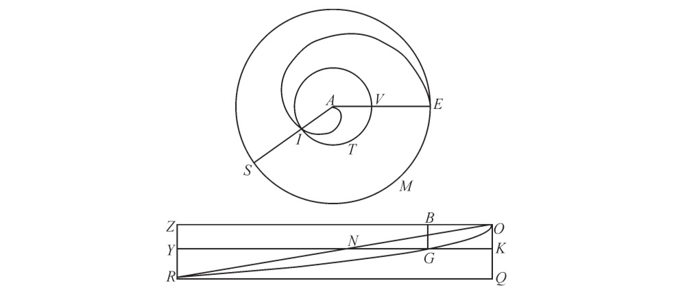
图3-5 卡瓦列里对螺线所包围面积的计算。
卡瓦列里假设了一个矩形OQRZ，其中，边OQ等于圆MSE的半径AE，边QR 等于圆的周长。然后他回到螺线上，沿着半径AE随机选择了一个点V，并且围绕中心点A作圆IVT。圆IVT包括两个部分：一部分为VTI，位于由螺线围成的面积之外；另外一部分为IV，位于螺线之内。他将曲线VTI（螺线之外的部分）转换为矩形中的直线KG，两者的长度相等，并且KG平行于QR，点K位于线段OQ上，OK（即O到K的距离）等于半径AV。然后，他沿着AE对每一个点都做了同样的处理，同时将圆上位于螺线之外的部分转换到矩形中，使这些点都沿着边OQ处于一个适当的位置。AE上的每个点都在OQ上对应着一个等效的点，并用直线表示在圆中位于螺线之外的部分。最终，所有螺线之外的面积AES中的圆形线，都等于矩形内组成区域OGRQ的所有直线。因此，根据卡瓦列里的证明，由OGRQ包围的面积等于圆MSE内螺线之外的面积。
接下来就是要确定图形OGRQ的面积（等于圆中位于螺线外侧部分的面积），然后再将其与整个圆的面积进行比较。卡瓦列里的做法分为两步：第一步，利用经典的几何方法，他证明得到曲线OGR是一条抛物线；第二步，利用不可分量法，他证明得到，三角形ORQ的面积等于整个圆的面积。很明显，如果我们将圆的面积看成是由连续的同心圆的圆周构成的，那么它从中心点开始（半径为“0”），并最终以边缘结束（半径AE）。卡瓦列里认为，将所有这些圆周长一个挨着一个地放到一起就会形成三角形ORQ。他在此前已经证明过，由半抛物线定义的面积（OGRQ）等于封闭三角形ORQ面积的三分之二。因为ORQ等于整个圆的面积，并且OGRQ等于位于螺线外的圆的面积，因此可以得出，位于螺线内的圆的面积等于整个圆的剩余面积，或者说等于整个圆面积的三分之一。证明完毕。
卡瓦列里对螺线所包围面积的证明表明，他的方法可以解决几何图形的面积与体积问题，而这些正是当时数学研究的最前沿问题。它确实表明，不可分量接触到了几何学的最核心问题，而这些也是欧氏几何所不能证明的问题。不可分量不仅证明了某种关系确实成立，而且也证明了它所形成的原因。构成一个平行四边形的两个三角形是相等的，因为它们是由相同的不可分割线组成的；阿基米德螺线包围的面积等于其整个圆面积的三分之一，因为其不可分割的所有曲线可以被重新排列成一个抛物线所围成的面积。虽然欧几里得的证明推导出了关于几何图形的必然真理，但不可分量却能让数学家一窥几何图形的内部秘密，并观察它们隐藏着的结构。
虽然他的方法是激进的，但从气质和信仰上来看，卡瓦列里还是相当保守和正统的数学家。由于深深地意识到了无穷小量所表现出来的逻辑谬误，于是他尽可能地保持了传统的叙述风格。为了避开悖论，他还在自己的方法中引入了一些限制条件。
从卡瓦列里在1639年6月写给年迈的伽利略的一封信中，可以看出他的作品所表现出的内部张力。在此不久之前，他刚收到伽利略的《论述》一书，于是他写信感谢这位大师对不可分量的大胆认可。卡瓦列里引用了古罗马诗人贺拉斯（Horace）的话，将伽利略比作“第一个敢于驾驭浩瀚的大海，并投身于海洋的人”，然后他继续写道：
可以说，凭借出色的几何方法和您出众的才华，您已经轻松驾驭不可分量、真空、光以及其他众多充满挑战和艰难险阻的领域，它们可能让任何人折戟沉沙，即使是最伟大的人也不例外。哦，多亏了您的巨大贡献，才使这个世界产生了如此新奇和美妙之物！……至于我，我应该向您表示极大的感激，因为我的几何学中的不可分量法，将从您的不可分量的高贵和圣洁中获得不可分的荣光。
到目前为止一切进展顺利——卡瓦列里对这位老宗师的赞美之情溢于言表，并沉醉在他所给予的肯定之中。这时，卡瓦列里毫无预兆地后退了一步，放弃了刚刚赞美过的伽利略的学说。他写道：“我不敢肯定，连续体是由不可分量构成的。”他坚持认为，他所做的一切都是为了证明“在连续体之间存在着与不可分量集合之间相同的比例”。
卡瓦列里到这里已经非常接近于否认自己的不可分量法了。而在他的书中，他曾大胆地将几何平面与一块由织线织成的布料进行类比，并且将实体与由页面构成的书本进行类比。他现在却暗示，他其实并不是这个意思。他暗示，在数学连续体的真正构成问题上，他不采取任何立场；他所做的一切都是为了引入一个新的主体，他称之为平面图形的“所有线”或者实体的“所有面”。既然一个图形的“所有线”和另一个图形的“所有线”之间存在着一个比例，那么，他就可以认为这两个图形的面积之间也存在着相同的比例。这对于实体的“所有面”也同样适用。
卡瓦列里受到了评论家的抨击，于是他坚称，自己对于连续体构成这个棘手的问题持不可知论的观点。他指出，无论连续体是否由不可分量构成，他的方法都是合理的。他甚至在书中避免使用带有冒犯性的术语。值得注意的是，尽管卡瓦列里最有名的作品被称为《不可分量几何学》，并且他在作品中讨论的是不可分量在方法论和哲学上的问题，但他在自己的数学证明中却从未真正提到过这一数学术语，这个概念一直表达为“所有线”或者“所有面”。他还为使用不可分量法设置了严格的限制，并想方设法地以欧几里得传统的假设、证明和推论的模式呈现他的证明过程，以使其作品看上去显得更加传统与正统。至于那些新的和前所未知的结果，卡瓦列里则统统避免。
然而，这一切都无济于事。与卡瓦列里同时代的人，无论是敌对的还是赞同的，都根本不相信他的说法，不相信他对连续体的构成问题持有不确定的观点。他们认为，他的方法一目了然，明显地依赖于这样一个概念，即连续体是由无穷小的部分构成的。如果我们没有隐含假定是由“所有线”构成平面的，那么我们为什么还会对称作“所有线”的概念感兴趣呢？如果我们不认为是由“所有面”构成物体体积的，那么我们为什么又要将一个物体的“所有面”与另一个物体的“所有面”进行比较呢？卡瓦列里所做的关于布料和书本的大胆类比是对不可分量的公开支持。这些类比具有创造性和启发性，并且促成了前所未有的发现。谨慎的免责声明所带来的后果只能是笨拙的术语和繁琐的方法，这在很大程度上否定了不可分量的效用和前途。
在未来几年里，一些不喜欢卡瓦列里方法的数学家，比如SJ会士保罗•古尔丁和安德烈•塔丘特，谴责他违反了传统的经典方法；而那些欣赏其方法的数学家，比如意大利人埃万杰利斯塔•托里切利和英国人约翰•沃利斯，则声称自己是卡瓦列里的追随者，全然不顾圣杰罗姆会的全面限制，而自由地使用着无穷小量。但实际上，他们之中没有一个人真正地遵循了卡瓦列里的严格体系。
当数学家遭到无穷小的批评者的攻击时，他们经常会引用卡瓦列里的名字及其著作。卡瓦列里用拉丁文和欧氏几何结构写就的著作，不仅是一部沉重的大部头，而且带有庄严的权威气息，这为后来无穷小方法的信徒们提供了一些掩护。他们认为将这位圣杰罗姆会大师作为他们数学体系的源头，这样做是安全的，何况这位大师还在这部厚重的著作中解决了关于不可分量法的所有难题。毕竟，他们深知，几乎没有人真正地阅读过卡瓦列里的著作。
最终，是与卡瓦列里同时代的年轻人，才华出众的托里切利将无穷小量推进到了卡瓦列里所不曾企及的高度。托里切利出生于一个中等收入家庭，极有可能位于意大利北部的法恩扎（Faenza）。在他16岁或者17岁的时候，年轻的托里切利搬到了罗马，并且开始迷恋上数学。正如他在1632年写给伽利略的信中所提到的，他没有受过正式的数学教育，但“在SJ神父的指导下进行过自学”。而指导他的人就是本笃会修士贝内代托•卡斯泰利（他也曾在比萨鼓励过卡瓦列里从事数学研究），他对这位年轻人的职业选择具有很大的影响作用。与他的老师伽利略不同，卡斯泰利似乎更乐于指导他人，并有意培养有前途的年轻数学家。现在他作为罗马大学的教授，又将托里切利招至麾下，并向他传授伽利略和卡瓦列里的著作。
1632年9月，毫无疑问是在卡斯泰利的鼓励之下，托里切利给伽利略写了一封信，在信中介绍自己是“一名专业的数学家，虽然还很年轻，但已经跟随神父卡斯泰利学习了6年数学”。当时《对话》刚刚问世几个月，将导致伽利略在随后几年遭受审判和软禁的一系列事件正在进行之中。托里切利首先向老宗师保证，卡斯泰利会利用一切机会来捍卫《对话》，以避免“轻率的决定”。然后，他开始介绍自己作为一名几何学家和天文学家，以及作为伽利略的忠实追随者的学习经历。他写道：
在罗马，我是第一个刻苦钻研过您的著作的人……对此我感到十分荣幸。您能想见，一个在几何学方面经历了很多尝试的人，在看到您的著作之后的那份喜悦。我学习过阿波罗尼奥斯（Apollonius）、阿基米德、西奥多修斯（Theodosius）的几何学，并且研究过托勒密的学说，阅读过第谷、开普勒和隆哥蒙塔努斯（Longomontanus）的几乎所有著作，最终我信仰了哥白尼学说……并公开承认我属于伽利略学派。
对于托里切利来说不幸的是，《对话》及其作者在不到一年之后即受到了审判，事实证明，这时在罗马作为一名狂热的伽利略信徒是相当危险的。这也可能解释了为什么在此后的将近10年里，我们再没有听到关于托里切利的任何消息。他仍留在罗马，在私下里从事他的数学研究工作。他研究了伽利略在1638年出版的《论两种新科学及其数学演化》，并一直低调行事。他只在1641年3月再次被提及，当时卡斯泰利获准访问阿尔切特里，并写信给伽利略宣布这个好消息。卡斯泰利说托里切利曾经是他10年前的学生，并答应将会给他带来由这位年轻人写的一份手稿。他对这位老人奉承道：“您会看到，一个非常有道德的年轻人将如何继承您为人类文明铺就的道路。他将向我们展示，您在运动研究方面播下的种子将会结出如何丰硕的成果。您还将看到他为阁下的学派所带来的荣誉。”
这时，伽利略已经被软禁在自己的住所长达8年之久，这位孤独的老者很可能被手稿呈现出来的广阔前景和丰硕成果所打动了。这就是托里切利的杰出作品对他的最大影响。卡斯泰利交给他的手稿给他留下了深刻印象，他要求会见这位年轻的数学家。卡斯泰利对伽利略虚弱的身体和近乎失明的状态感到担忧，并十分担心他可能会不久于人世。他们一起筹备了一个计划：将托里切利带到阿尔切特里来担任伽利略的秘书，帮他编辑并出版他的最新作品。4月初收到邀请之后，托里切利回信说，他对突如其来的荣幸感到受宠若惊和“困惑”。不过他似乎并不急于离开繁华的罗马，搬到德高望重的大师所在的孤独寓所。他再三托辞，但最终还是在1641年秋天动身了。他收拾行李，搬进了伽利略在阿尔切特里的别墅。在那里，他主要编辑《论述》一书中的“第五天”内容，准备把它添加到1638年出版的四天对话内容之后。
托里切利到来仅仅3个月之后，他的使命便戛然而止了。1642年初，伽利略因患有心悸并伴发烧而病倒了。1642年1月8日，一代宗师与世长辞，享年77岁。作为一个被判决为“有强烈异端嫌疑”的人，他被安葬在了佛罗伦萨圣十字大教堂的一个侧面的小房间里，一个世纪以后才被迁到位于中央大殿的荣誉位置。与此同时，托里切利收拾他的东西，准备回到罗马。而就在这时，他收到一份令人吃惊的任命通知：他可以作为伽利略的继任者继续留在佛罗伦萨，并担任托斯卡纳大公的数学家以及比萨大学的数学教授。这项任命不包括伽利略的宫廷“哲学家”职位，这极可能是因为，伽利略凭借他哲学家的身份发表了对世界结构的看法，而这最终导致教会找上了他的麻烦。但即使没有这份额外的荣誉，这项任命也为托里切利提供了一个千载难逢的机会：一个稳定的终身职位，并且有着丰厚的薪水，使他能够不受干扰地从事自己的研究，还有作为欧洲最伟大的科学家的继承人所获得的公众认可。他毫不犹豫地接受了这项任命。
在接下来的6年里，托里切利成果斐然。此前的托里切利一直鲜为人知，以至于伽利略几乎没有听说过他，卡斯泰利必须把他作为以前的学生来引荐给伽利略。但随着伽利略的去世，以及他被任命为美第奇的宫廷数学家，他一跃成为欧洲领先的科学家之一。他与法国科学家和数学家保持着长期并富有成效的通信，包括马兰•梅森和吉尔斯•德•罗伯瓦尔（Gilles de Roberval，1602—1675）；他还与意大利同事加利利•拉斐尔•马吉奥特（Galileans Raffaello Magiotti，1597—1656）、安东尼奥•纳迪（Antonio Nardi），以及卡瓦列里保持着联系。由于受到《论述》一书的启发，他仔细考虑了伽利略的论点，即大自然“厌恶真空”的特性使得物体聚合在一起。这促使他在1643年通过实验证实了真空确实存在于自然界，并最终制成了世界上第一个气压计。
与伽利略和卡瓦列里经常出版作品不同，托里切利的大部分成果都体现在了他的书信和未发表的手稿中，而这些手稿只在他的朋友和同事之间传阅。唯一的一个例外是一本名为《几何运算》（Opera Geometrica ）的书，它出版于1644年，包括一系列的论文，内容范围从物理学中的运动到抛物线围成的面积。其中的一些论文依赖于传统的数学方法，并源自于古人的命题，比如托里切利对球体的讨论。然而，第3篇题为“关于抛物线的面积”（de Dimensione parabolae）的论文，所使用的却远非传统上的方法：它以显著的托里切利的形式介绍了他自己的不可分量法。
虽然这篇论文被命名为“关于抛物线的面积”，但令人吃惊的是，其目的不是要计算抛物线所围成的面积。阿基米德早在1800多年以前就对这个问题进行过计算和证明，并且其结果已经被托里切利和他同时代的人所熟知。这个问题无须再进一步证明。这篇论文所给出的确实是对同一个结果的至少21种不同的证明方法。托里切利连续21次面对同一个定理，即“一条抛物线所围成的面积等于与它同底等高三角形面积的三分之四”（见图3-6），并且以不同的方法对同一个结果成功地进行了21次证明。这很可能是数学史上唯一一篇只为了证明一个单一的结果，而提供了如此之多不同的证明过程的论文。这是对托里切利作为一名数学家所应具备的精湛技巧的一次证明，但它的目的却并非如此。它的真正目的在于：将传统经典的证明方法与根据不可分量得出的新证明方法进行对比，从而说明新方法的明显优势。
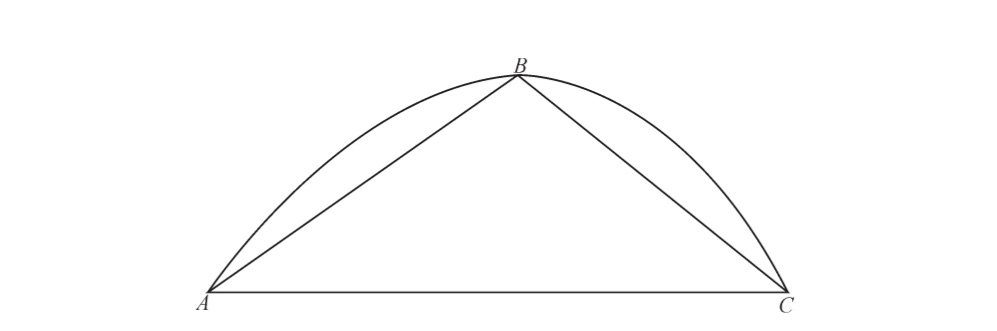
图3-6 “关于抛物线的面积”：由抛物线包围的面积是三角形ABC面积的三分之四，托里切利。
“关于抛物线的面积”的前11次证明完全符合欧氏几何最高的严格标准。为了计算抛物线所包围的面积，托里切利使用了“穷举法”（The Method of Exhaustion）（见图3-7），这也是生活在公元前4世纪的希腊数学家欧多克索斯（Eudoxus）所使用的方法。在该方法中，抛物线（或另一种曲线）被一个内接多边形和一个外切多边形包围。多边形的面积是很容易计算的，由抛物线围成的面积则介于两者之间。随着不断增加两个多边形的边数，两者之间的差值会变得越来越小，从而限制了抛物线面积的可能范围。
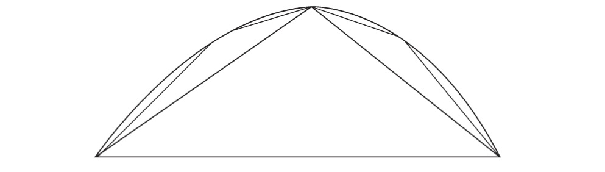
图3-7 穷举法。随着不断增加内接多边形边的数量，它就越来越接近于抛物线。外切多边形也是同理。
随后的证明导致了矛盾：如果抛物线的面积大于同底等高三角形面积的三分之四，则可以通过增加外切多边形的边数，从而使其面积小于抛物线的面积；如果抛物线的面积小于同底等高三角形面积的三分之四，则可以通过增加内接多边形的边数，从而使其面积大于抛物线的面积。这两种可能性都与一个多边形外切于该抛物线以及另一个多边形内接于该抛物线这个假设相矛盾，因此抛物线的面积必须恰好等于同底等高三角形的三分之四。证明完毕。
托里切利指出，虽然这些传统的证明是完全正确的，但它们确实也存在着一些缺陷。其中最明显的是，根据穷举法进行的证明，需要人们事先知道所期望得到的结果，在本次证明中，即为抛物线与三角形的面积之间的关系。一旦知道了结果，穷举法就可以证明，任何其他的关系都会导致矛盾，但至于为什么这种关系能够成立，或者如何发现这种关系，却没有提供任何线索。由于缺少这些线索，导致托里切利和许多他那个时代的人相信，古人肯定拥有一种秘密的方法来发现这些关系，而他们随后又将这种方法从他们出版的作品中仔细地删除了。（20世纪，人们发现了阿基米德于10世纪写在重写本上的一些论文，这些有擦除痕迹的论文记录的是他所发现的一些不严格的方法。这些论文表明，托里切利和当时人们的猜测也许并非是完全错误的。）经典方法的另一个主要缺陷就是它很繁琐，需要大量的辅助几何构造，并且要通过曲折和反直觉的方法才能得出结论。换句话说，经典的证明可能是完全正确的，但它们远不是获得新见解的有用工具。
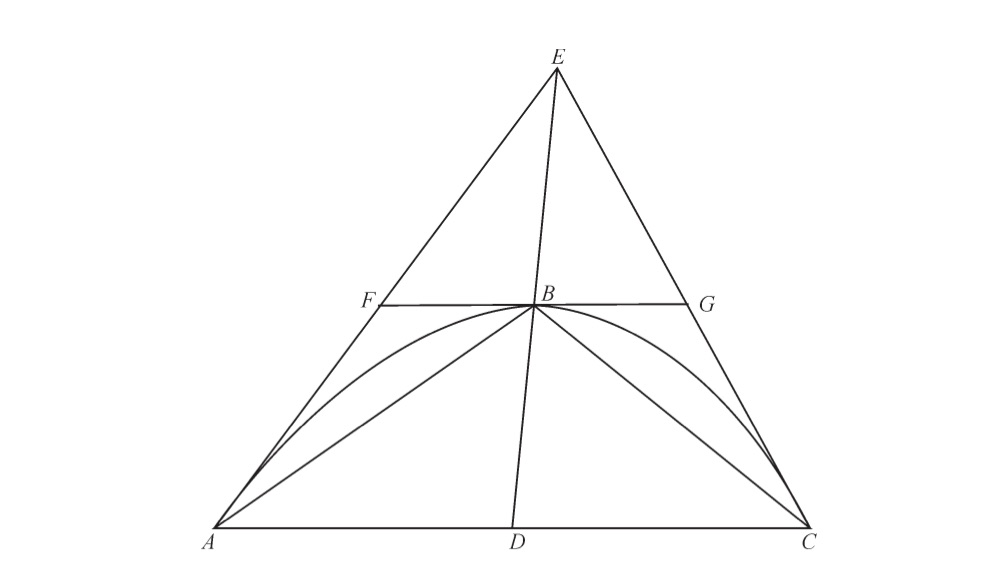
图3-8 抛物线弓形面ABC，三角形ABC是其内接三角形，三角形AEC是其外切三角形。随着两个多边形的边数增加，如梯形AFGC，它们所围成的面积越来越接近于由抛物线弓形面所围成的面积。
“关于抛物线的面积”的最后10次证明，放弃了穷举法的传统模式，而以不可分量法取而代之。托里切利指出，这些证明结果可以由命题中几何图形的形状和构成直接得出，它们是直接并且直观的方法，不仅证明了其结果是正确的，而且也说明了其结果为什么是正确的。我们已经看过了卡瓦列里如何证明构成一个平行四边形的两个三角形全等（通过证明它们是由相同的不可分割线构成的），或者如何证明由螺线所围成的面积与抛物线所围成的面积全等（通过将曲线的不可分量转换为直线的不可分量）。托里切利提出用相同的方法来计算抛物线围成的面积。托里切利写道，不可分量法可以通过“简洁、直接和积极的证明”来解决涉及无穷量的定理，这是一种“新的并且值得赞赏的方法”。与古人“令人惋惜”的几何方法相比，它是“通过数学荆棘之路的捷径”。
正如托里切利所说，不可分量法是一项“了不起的发明”，这要完全归功于卡瓦列里，而他自己在《几何运算》中的贡献仅仅是使这种方法更容易理解。无疑托里切利的方法更易于理解，因为卡瓦列里的《不可分量几何学》是出了名的晦涩繁琐，它通过无数的定理和引理来推导出几乎是最简单的结果。相反，托里切利的方法直奔主题，没有华丽的辞藻，没有冗长的证明过程，也没有在欧氏几何严格的推理上浪费笔墨。托里切利写道，“我们避开了卡瓦列里无边无际的几何学海洋”，以此承认了卡瓦列里文本的晦涩难懂。他继续写道，至于他自己和他的读者“不会太过于冒险，我们仍在岸边”，不必为细致的表现形式分散精力，而只需专注于得到结果。
相比卡瓦列里的文本，托里切利的文本要容易理解得多，卡瓦列里的文本甚至对下一代数学家造成了相当的困惑。英国的约翰•沃利斯和艾萨克•巴罗（Isaac Barrow），以及德国的戈特弗里德•威廉•莱布尼茨（Gottfried Wilhelm Leibniz），都声称研究过卡瓦列里的著作，并学习过他的方法。事实上，他们的著作清楚地表明，他们研究的是托里切利版本的卡瓦列里著作，他们认为它仅仅是原著的一个清晰诠释版本。这种安排当然有其优点：托里切利不用捍卫他的方法，而只需提到让感兴趣的读者参考卡瓦列里的几何学，并向他们保证，他们会在那里找到想要的答案。后来的数学家遵从了他的指引，并且当有人对不可分量法的前提提出质疑时，他们也很乐意让批评者到卡瓦列里笨重的大部头里寻找答案。
事实上，卡瓦列里与托里切利的无穷小量方法之间存在着重要的区别。最关键的是，在托里切利的方法中，所有的不可分割线都组合在了一起，实实在在地构成了一个平面图形，而所有的不可分割面也在实际上构成了实体的体积。而在卡瓦列里的方法中，我们还会记得，他曾尽量设法避免这种定义，他称之为“所有线”和“所有面”，好像它们与平面和实体是完全两回事一样。但是，托里切利却没有这样的顾虑。在他的证明中，他直接将“所有线”指向了“面积本身”，并将“所有面”指向了“体积本身”，他没有受到逻辑上的细枝末节的困扰，而这些细节曾令他的前辈感到十分纠结。这样的做法为托里切利招致很多批评，因为他违反了连续体构成的古老悖论。但事实上，尽管卡瓦列里曾慎之又慎地斟酌过自己的方法，但他也几乎遭受了同样多的批评。同时，托里切利的直截了当使得他的方法比卡瓦列里的更为直观和明确。
他们对于悖论的态度也是截然不同的。较为传统的卡瓦列里曾不惜一切代价尽量避开悖论，当在他的方法中遇到潜在的悖论时，他会曲折地解释它们为什么实际上不算是悖论。但托里切利却沉迷在悖论之中。他的文集包括至少3个独立的悖论列表，详细列举了各种巧妙的悖论，也就是，假设连续体由不可分量构成所产生的悖论。对于一个数学家来说，其方法的可信度正是建立在这个前提的基础之上，而他不但没有回避涉及立论前提的悖论，反而列举了大量悖论，这似乎显得有些出人意料。对于托里切利来说，这些悖论另有用途。它们不仅仅只是充当令人费解的消遣项目，而当人们从事严肃的数学研究时就把它们搁置在一边；恰恰相反，它们正是揭示连续体的实质和结构的研究工具。从某种程度上来说，悖论其实是托里切利的数学实验。在一项实验中，人们会创建一个非自然的环境，使之能将自然现象推广到极端状态，从而揭示隐藏在正常环境下的真理。对于托里切利来说，悖论起到了大致相同的作用：它们将逻辑推广到了极端状态，从而能够揭示连续体的本质，这是用正常的数学方法所不能实现的。
托里切利提出了几十种悖论，其中许多都是相当微妙而复杂的，但即使是最简单的一个，也能捕捉到本质问题：
在平行四边形ABCD中，边AB大于边BC，点E沿对角线BD移动，EF和EG 分别平行于AB和BC，从而EF大于EG，并且所有其他平行线均为如此。因此，△ABD中所有类似于EF的线均大于△CDB中所有类似于EG的线，从而可得△ABD大于△CDB。但这个结果是不正确的，因为对角线BD平分了平行四边形。
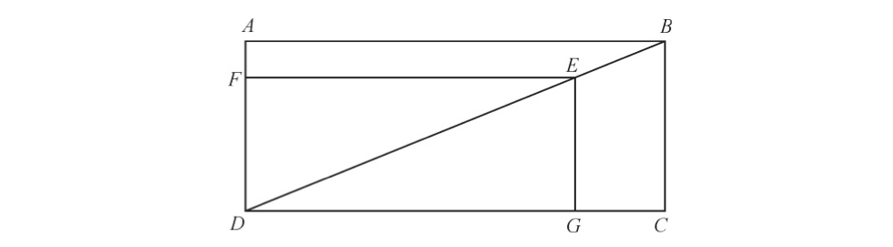
图3-9 平行四边形悖论，托里切利。
将矩形分成两半的两个三角形不相等，这个结论是荒谬的，但它似乎正确地遵循了不可分量的概念。数学家针对这样的问题，都采取过什么样的措施呢？古代的数学家清楚地认识到无穷小量可能会导致这样的矛盾，他们所做的只是在数学上禁止使用无穷小量。卡瓦列里重新引入不可分量，但他试图通过设置使用规则来处理这样的矛盾，以确保这种矛盾不会再度出现。例如，他坚持认为，为了将一个图形的“所有线”与另一个图形的“所有线”进行比较，那么两个图形中的线都必须平行于一条基准线，他称之为“准线”（regula）。由于托里切利悖论中的线EF和EG是不平行的，那么卡瓦列里就可以说，它们根本不可比较，从而就可以避免这个悖论。然而在实践之中，卡瓦列里的人为限制却被他的追随者和批评者同时忽略了，因为前者认为它们是使用上的障碍，而后者根本不相信它们解决了最根本的问题。
托里切利采取了不同的方法。他不是试图回避矛盾，而是不断地努力去了解它，思考它对连续体的构成究竟有什么意义。他的结论是惊人的：平行于EG的所有短线形成的面积之所以等于相同数量的平行于EF的长线形成的面积，是因为短线比长线“更宽”。更广泛地说，按照托里切利所说，“不可分量之间都是相等的，即点与点相等，线与线在宽度上相等，面与面在厚度上相等，这个观点在我看来不仅难以证明，而且实际上是不正确的”。这是一个惊人的想法。如果某些不可分割线比其他线“更宽”，那是否意味着它们其实可以被分割，以达到“窄”线的宽度呢？如果不可分割线有一个正的宽度，那么是否可以得出，将无穷多条线累积起来将会得到无穷大——而不是△ABD和△CDB有限的面积呢？并且同样的观点也适用于具有大小的点和具有“厚度”的面。这个假设似乎很荒谬，但托里切利坚持认为，他的悖论表明，不可能存在其他的解释。而且不仅如此，他还把整个数学方法建立在了这一想法之上。
为了将这一基本思想转换到一个数学体系里面，只在原则上说不可分量具有不同的大小是不够的，还必须精确地确定它们之间的差别。为了实现这一目标，托里切利再次转向了平行四边形悖论。在图中，具有同样数量的长线EF和短线EG形成了相同的总面积。为了使其成立，短线EG的“宽度”需要与长线EF的“长度”达到一个完全相同的比例，这就是BC与AB的比例。换句话说，也就是对角线BD的斜率。这样一来，托里切利一下子就将有关连续体的一个相当可疑的猜测转化成了一个可量化并且可用的数学量值。
然后托里切利具体说明了，如何通过计算各类曲线的切线的斜率，来对有“宽度”的不可分量进行数学上的应用。我们可以把这些曲线表示成 y m =kx n ，他称之为“无限抛物线”（infinite parabola）。在这方面，他远远超越了卡瓦列里，卡瓦列里曾计算过几何曲线的面积和体积，但从来没有计算过它们的切线。的确，卡瓦列里坚持只对“所有线”或“所有面”的集合进行比较，也就不会为精细的切线计算留下任何空间，因为只能在单一的不可分割点才能计算斜率。但是，托里切利更灵活的方法区分了不同不可分量的大小，从而使这一切成为可能。他首先指向了平行四边形悖论中的图形ABEF和CBEG。这两个图形被称为“半晷”（semi-gnomons），因为它们分别与全等三角形DFE和EGD构成了全等三角形ABD和CDB，所以它们的面积相等。这个命题永远是正确的，而且，无论E点位于对角线BD上的哪个位置，即使当它移动到B点本身时，该命题也都同样为真。因此，线BC在面积或“量”上等于线AB，即使线AB更长一些。之所以这样是因为，就如同半晷CBEG一样，不可分割线BC相比AB“宽出”的比例，恰好等于AB“长出”的比例。
现在，只要我们面对的是直线，如对角线BD，半晷就总是相等的，并且不可分量的“宽度”由斜率确定。但是，如果不是一条直线，而是一条广义的抛物线（用现代术语可以被定义为y m =kx n ），那么将会发生什么呢？在这个“无限抛物线”中，半晷不再相等，但它们却保持着一个固定的关系。正如托里切利利用经典的穷举法所进行的证明那样，如果在曲线上的线段非常小的话，那么这两个半晷的比例则为
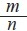
。如果半晷的宽度只有一个不可分量的大小，那么与曲线相交的两条不可分割线的“大小”之比为 （见图3-10）。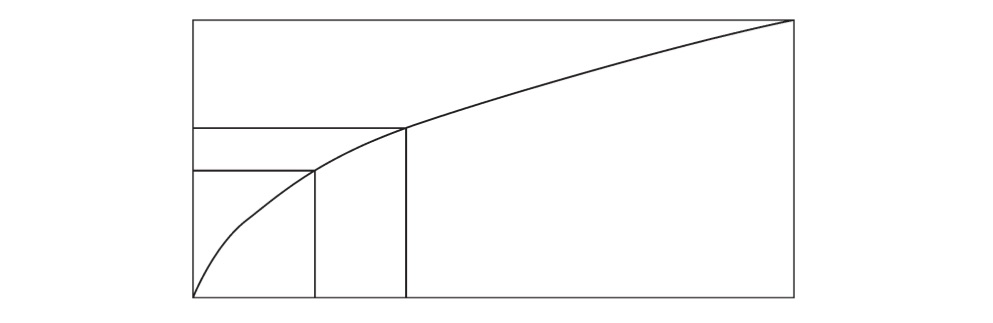
图3-10 两个半晷与“无限抛物线”相交。如果这些线段非常小，或者不可分的话，那么半晷的面积之比为 。
这一结果使托里切利能够计算“无限抛物线”上每一点的切线斜率，如图3-11曲线AB所示。托里切利的主要观点是，在B点，两条不可分割线BD和BG与抛物线相交，它们也与直线（即曲线在该点的切线）相交。而两个不可分量相对于曲线的“面积”比为 ，它与直切线相等（如果将切线延长为矩形的对角线）。因此，如图3-11所示，BD与BG的“面积”之比为 ，但BD与BF的“面积”之比为1。这就意味着BF与BG的“面积”之比为 。现在，BF和BG在托里切利的体系里具有了相同的“宽度”，因为它们都以相同的角度与曲线BF（或其切线）相交于点B。这两条线段的区别仅在于它们的长度，并可以得出长度BF与长度BG的比例为 。现在BF等于ED，并且BG等于AD，因此，切线的横坐标ED与曲线的横坐标AD的比例为 ，或更简单地，
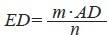
。因此切线在点B处的斜率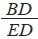
为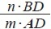
。这样，对于“无限抛物线”上的任意一点，都可以根据它的横坐标和纵坐标，求得它的斜率。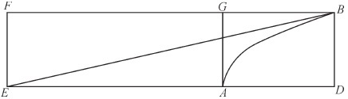
图3-11 托里切利对“无限抛物线”斜率的计算。
托里切利的这些精巧的证明过程固然值得关注，但其意义远远超越了证明本身，其意义更在于，它对数学传统本身所形成的挑战。自古以来，数学家们一直对数学悖论退避三舍，将它们视为难以逾越的障碍，并将悖论视为他们的计算已经进入死胡同的一个标志。但托里切利打破了这个古老的传统：他不是回避矛盾，而是寻求答案并为其所用。伽利略曾猜想过连续体的无穷小结构，但仅止于承认连续体是一个伟大的“谜团”。卡瓦列里尽其最大的努力去回避悖论，并严格遵守传统经典，甚至不惜让他的方法变得既烦琐又难以理解。但托里切利却当仁不让地利用悖论发明了一种精确而强大的数学工具。托里切利没有将连续体悖论驱逐出数学王国，而是将其放在了该学科的核心位置。
尽管它有明显的逻辑风险，但托里切利的方法还是给当代数学家留下了深刻的印象。虽然不断游走于错误的边缘，但它也非常灵活，并且相当有效。在熟练和富有想象力的数学家手里，它成了一个有力的工具，可能导致新的，甚至惊人的结果。在17世纪40年代，这种方法被迅速传播到了法国。罗伯瓦尔和皮埃尔•德•费马（Pierre de Fermat，1601—1665）等人促进了这种方法在法国的使用，他们都是与托里切利有直接书信往来的人。多亏了他与马兰•梅森之间的通信，因为马兰•梅森是欧洲“学界”的信息交流中心，所以托里切利的著作进一步传播到了英国，也使沃利斯和巴罗将其误认为了是卡瓦列里的著作。托里切利激进的证明方法很快席卷了整个欧洲大陆，它承载着新的无穷小量数学的威力和承诺，当然，还有危险。
对于新取得的突出成就，托里切利并没能享受多久。1647年10月5日，他病倒了，不到3个星期之后，在10月25日，他就去世了，年仅39岁。在他去世前的一个小时，他头脑清醒的时候，托里切利指示他的遗嘱执行人，将他的手稿交给在博洛尼亚的卡瓦列里，让其选择合适的论文进行发表。但这已经太迟了，11月30日，仅仅在托里切利过世一个月之后，卡瓦列里也因折磨多年的痛风而去世了。在短短几年时间里，意大利数学界一再被夺去了指路明灯——伽利略及其两个主要的数学弟子。在这几十年的时间跨度里，这3位数学家改变了数学的面貌，开拓了前进的新途径和可能性，这是整个欧洲数学家翘首以盼的机遇。在下一代数学家成长起来的时候，他们的“不可分量法”将被转化为牛顿的“流数法”（method of fluxions）和莱布尼茨的微分学与积分学。
然而，伽利略、卡瓦列里和托里切利在他们自己的领域却没有继承者。正当意大利数学界失去了伽利略及其弟子的领导之际，意大利的数学潮流就骤然开始了反扑。SJ早就对不可分量法持有怀疑和不屑的态度，他们此前已经趁机采取了行动。在长达数十年激烈的斗争中，SJ曾不遗余力地抹黑无穷小学说，剥夺其信徒在数学界的地位和发言权。他们的努力终于没有白费：随着1647年接近尾声，意大利数学界的辉煌传统也即将结束。意大利这个天才辈出的数学时代属于伽利略、卡瓦列里和托里切利，此后要再过几个世纪才会再次出现像他们这样最高层次的创造性数学家。
以当时的标准来看，SJ数学家安德烈•塔丘特算是一个全球化的人。尽管他可能从未离开过自己的家乡佛兰德，但他的通信网络却跨越了欧洲的宗教隔阂。他的书信来往不仅限于意大利和法国，而且还与信仰新教的荷兰和英国学者保持着联系。就在他去世的几个月前，他款待了荷兰博学家克里斯蒂安•惠更斯（Christiaan Huygens）。塔丘特当时被视为是SJ历史上最有潜力的数学明星之一，惠更斯这次就是为了与塔丘特的会面才专程来到安特卫普。两个人虽然只在一起待了几天时间，但他们相处得很好，于是这位SJ会士认为，他应该尽力说服惠更斯信仰天主教（尽管没有成功）。但最终不是他的个人魅力，而是他的数学才华超越了17世纪的偏见。在英国，伦敦皇家学会（Royal Society of London，英国皇家学会的前身，简称皇家学会）的秘书亨利•奥登伯格虽然在SJ没有朋友，但他在1669年1月的学会会议上却用了相当长的时间介绍了塔丘特的《数学文集》（Opera Mathematica ），以至于最后他不得不为占用参会者的时间而道歉。他坚持认为，塔丘特的这部《数学文集》可以称得上是“历史上最好的数学著作之一”。
塔丘特在数学上的名望主要是因为他于1651年出版的著作《圆柱体和圆》（Cylindricorum et Annularium Libri Ⅳ ），在这套包括4卷的数学文集中，他展现了当时所有数学工具和方法的全貌。在书中，他计算几何图形的面积和体积所使用的方法，不仅包括古典方法，而且包括由同时代和前辈数学家发明的新方法。但是，当论述到不可分量时，这位平时温和的SJ会士却开始变得生硬起来：
我不认为不可分量提供的证明方法算是合理的或者是几何的方法……许多几何学家认同这样的观点，即由移动的点形成线，由移动的线形成面，由移动的面形成体。但是，说一个量体是由不可分量的运动产生的，这是一回事；而说一个量体是由不可分量构成的，则完全是另外一回事。前者已经是确立的真理，而后者使得几何学的战争已经到了“不是你死，就是我亡”的程度。
生存还是灭亡——这就是塔丘特面对无穷小量时需要权衡的利害关系。他的话语的确强硬，但对于与这位 弗莱芒人 注19 同时代的人来说，这不并令他们感到特别惊讶。毕竟，塔丘特是位SJ会士，并且SJ正在展开持续且不妥协的斗争，以完成塔丘特所提倡的：在世界范围内消除“连续体由不可分量构成”这一学说。他们担心，一旦不可分量学说盛行，那么导致灾祸的就将不只是数学，还有使整个SJ得以维继的充满秩序和等级的理想。
当SJ会士提到数学时，他们所指的是一个清晰的目标：欧几里得几何。因为神父克拉维斯曾教导过，欧几里得几何是合理的等级和秩序的体现。它的证明过程从普遍适用的、不证自明的假设开始，然后富有逻辑地一步一步进行推导，以此来描述几何对象之间固定和必要的关系：一个三角形的内角和总是等于两个直角（180度），直角三角形两条短边的平方之和等于长边的平方，等等。这些关系是绝对的和普遍正确的，不能被任何理性的人所否认。
于是，从克拉维斯开始，在此后的200年里，几何学成了SJ会士数学实践的核心。即使到了18世纪，当高等数学的方向已经明显地由几何学转向了像代数和数学分析这样的新领域的时候，SJ的数学家仍在坚守着几何实践方法。这是SJ数学学校明确无误的标志。他们相信，只要神学和其他领域的知识能够复制欧氏几何的确定性、等级结构和秩序，那么所有的纷争肯定都会结束。宗教改革及其带来的所有混乱和颠覆永远不会存在于这样一个有序的世界之中。
在SJ会士看来，这个永恒和不可辩驳的目标是他们学习数学的唯一原因。事实上，正是由于克拉维斯从未停止过与那些持怀疑态度的同事进行争辩，才使得数学代表了SJ的最高理想，并且多亏了他的努力，SJ才能不断招收并培养数学人才。到了16世纪后期，数学已成为罗马学院和其他SJ学校最负盛名的研究领域之一。
SJ会士认为，欧几里得几何是数学可能达到的最高和最好的状态，由伽利略及其追随者所提倡的新的“不可分量法”则刚好与之相反。几何学的证明起始于无懈可击的普遍原理，而新的方法却起始于对基本物质的不可靠的直觉。几何学按照固定的步骤从一般原理证明出特殊现象，而新的无穷小方法则反其道而行之：起始于对物质世界的一种直觉，然后由此进行归纳，从而得到一般的数学原理。换句话说，如果几何学是自上而下的数学，那么不可分量法就是自下而上的数学。最具破坏性的是，欧氏几何是严格的、纯粹的、绝对正确的，而新的方法则充满了悖论和矛盾，虽然可能产生真理，但同时也容易导致谬误。
对于SJ来说，如果无穷小量盛行起来，那么欧氏几何这座永恒且不可挑战的大厦将被名副其实的 巴别塔 注20 所取代，它将会建立在一个摇摇欲坠的基础之上，充满着冲突和斗争，随时都有可能倾覆。在克拉维斯看来，如果欧氏几何是普适的等级结构和秩序的基础，那么新的数学则正好相反，它是在破坏普适的秩序，必然会导致颠覆和斗争。塔丘特在写到几何学和不可分量之间的斗争时，并没有夸大其词，它们的确是到了“不是你死，就是我亡”的程度。而SJ也正在进行着这样的行动。
早期的SJ神父为了拯“救欧洲的灵魂”，曾与路德及其追随者们进行过顽强的斗争，所以连续体的结构问题在他们的头脑中可谓根深蒂固。第一个注意到这个问题的SJ会士不是别人，正是克拉维斯在罗马学院的老对手贝尼托•佩雷拉。1576年，为了数学在SJ课程设置中的合适的地位问题，他与克拉维斯争得不可开交，佩雷拉出版了一本关于自然哲学的著作，意在确立SJ应该采用的合理课程。佩雷拉按照SJ创始人制定的指导原则，严格遵守亚里士多德的教义，所以他也处理过这位古代哲学家在连续体问题上的教义。遵循着最好的学术传统，佩雷拉首先提出了论点，即一条线由单独的点构成，并列出了古代和中世纪数学大师用来支持这种论点的所有论据。然后，他逐一驳倒了这些论据，最终得出与亚里士多德一致的结论，即连续体是无限可分的，而不是由不可分量构成的。很明显，佩雷拉并不关心数学上的创新或者颠覆性的影响：这比伽利略和他的弟子们发明激进的数学技巧提前了几十年，但他没有理由这样做。因为他认为SJ会士学习任何一种数学都没有多少价值，他也不会关心传授哪类数学比较合适。对他来说，连续体的问题只不过是在讨论亚里士多德自然哲学时应该解决的又一个问题而已。
此后，连续体问题整整沉寂了20年，直到它又被另一位SJ会士重新提起，而这一次提到它的是一个更为权威的人物——SJ的神学领袖弗朗西斯科•苏亚雷斯。1597年，苏亚雷斯在他的《论形而上学》（Disputation on Metaphysics ）一书中，用了13页来连篇累牍地讨论连续体的构成问题，如同佩雷拉一样，他也是将这个问题作为对亚里士多德物理学广泛讨论的一部分。但是，与佩雷拉不同的是，这位神学家并没有断然否认这个概念，即连续体由不可分量构成。他承认这个问题是比较困难的，很难给出确定性的答案，只能尽力寻求一个“似乎正确”的答案。他引用了连续体由不可分量构成的学说，然后又列举了否定不可分量的学说，他认为两者都是“极端”观点。然后，他又提出了一些自认为比较合理的中立观点，同时承认很难得到一个明确答案。对于苏亚雷斯以及佩雷拉来说，整个问题都是一个技术性问题，或者说是我们所谓的“学术”问题。没有一个人认为在这个问题上会有生死攸关的利害关系，在他们看来，这只是关乎亚里士多德物理学的正确解释。
查理五世、路德和依纳爵的这个世纪充满着喧嚣和动荡，随着这个世纪接近尾声，SJ在无穷小量的讨论中明显感觉到了紧迫感。当时，担任总会长的神父克劳迪奥•阿奎维瓦注意到了SJ内日益多样化的观点，并且越来越感到担忧。这无疑是成功的代价，因为随着SJ在这些年的快速扩张，已经有遍布在世界各地的上百所学院和传教团，从而不可避免地引入了许多新人加入到这个庞大的体系之中。但在总会长阿奎维瓦看来，这不应成为基督的战士偏离正确教义的借口。对于SJ的等级制度而言，教会人数和影响力的增加只能成为使它变得更加统一和权威的理由。在罗马学院学习了几年之后，神父利昂•桑蒂（Leone Santi）警告说，“除非将思想限制在一定范围之内，否则人们对外来学说和新学说的探寻永无止境”，这将导致“教会产生巨大的混乱和不安”。为了防止这种情况发生，总会长于1601在罗马学院设立了由5位“监督员”组成的一个监督委员会，拥有审查任何一所教会学校所传授的任何内容的权力，以及审查在教会庇护下出版的任何内容的权力。阿奎维瓦希望，在监督委员会的监督之下，只有正确的教义才能在SJ 学校得到传授，并且由SJ神父出版的书籍需要经过上级的许可，从而确保教会将只发出一种权威的声音。监督委员会成立之后没过多久，它就开始不断发布对传授和推广无穷小量的禁令。
监督委员会从1606年开始发布关于连续体的第一项法令，当时这个委员会只成立了5年时间。比利时的SJ学校发来一个命题称“连续体由有限数量的不可分量构成”，监督委员会迅速给予了回应，并且没有附加任何评论，裁定这个命题“在哲学上是错误的”。仅仅两年之后，发自比利时的另一封信件提出了几乎同样的学说。这一次，监督委员会表现得更为斩钉截铁，明确地回复道：“全体监督员认为该学说不能被传授，因为它是不合理的，并且无疑在哲学上是错误的，有违亚里士多德学说。”仅在10年前，对于连续体由不可分量构成这一概念在哲学上是否可行，苏亚雷斯还略微表达了一些认同，并提出了一些替代方案。但如今，监督委员会直接裁定它是“虚假和错误的”，并予以禁止。
究竟发生了什么变化呢？监督委员会没有提供任何线索，并且在他们所做的总结报告中，除了原始命题的发送地之外，没有提供任何其他细节。但我们确实知道，在17世纪初的那些年里，数学家们对于无穷小的兴趣明显与日俱增。1604年，罗马大学的卢卡•瓦莱里奥出版了一本关于计算几何图形重心的书，在书中他使用了初步的无穷小方法。瓦莱里奥是位知名的SJ会士，他跟随克拉维斯学习了多年数学，甚至获得了罗马学院的哲学和神学博士学位。他的作品不可能被SJ的神父们所忽视，看过这本书的人可能都会感觉到，他们确实需要更好地确定自己对于这种新方法的立场了。我们也知道，1604年，当时在帕多瓦大学的伽利略，在制定自由落体定律的过程中，也正在尝试使用不可分量。伽利略对瓦莱里奥有着很高的评价，多年之后，他提名瓦莱里奥加入了林琴科学院，并且在1638的《论述》一书中，把瓦莱里奥称为“当代的阿基米德”。不论他们两个人彼此之间是有过借鉴，还是独立地发展了自己的学说，他们的作品都标志着无穷小量的地位发生了显著的改变：无穷小量不再是由亚里士多德及后来的诠释者下过定论的那个古老学说，它现在似乎已经登上了现代数学舞台。
在SJ看来，这是一个突破性的变化。克拉维斯才刚刚赢得了在数学地位方面的斗争，确立了数学在SJ课程中的核心学科地位，并且SJ的数学家们开始被承认为数学领域的领导者。17世纪之初，当无穷小量开始渗透到数学实践中时，SJ紧迫地感觉到，有必要对新方法采取更坚定的立场了。新的方法能与欧几里得的方法兼容并与教会的数学实践保持一致吗？监督委员会的回答斩钉截铁：“不能”。虽然给出了严厉的裁决，但这个问题似乎远没有结束。整个欧洲受过数学教育的SJ会士都在密切关注着最前沿的数学研究的发展态势，并且能切身地感受到数学界对于无穷小量的兴趣正在与日俱增。由于意识到了这个问题的敏感性，他们开始不断向监督委员会提交不同版本的这种学说，每一个新提交的版本都与那些被禁止的略有不同。因此，监督委员会每对无穷小进行一次审查，它在数学领域的发展也就更进了一步。
约翰内斯•开普勒是第一个绘制出正确的椭圆形行星轨道的人，并因此被当今的世人所熟知。但这并不是说开普勒在他那个时代没有得到人们的赏识。17世纪初期，他是世界上唯一能与伽利略齐名的科学家（虽然是新教徒），并且拥有世界上最令人垂涎的数学职位，即神圣罗马帝国在布拉格的宫廷天文学家。1609 年，开普勒出版了他的代表作《新天文学》（The Astronomia Nova ），在该书中，他证明了行星的运行轨道呈椭圆形而不是完美的圆形，并根据他观测到的行星运行记录总结成两大定律［开普勒第三定律后来发表在他于1619年出版的《世界的和谐》（Harmonices Mundi ）一书中］。行星以不断变化着的速度沿着其轨道运行，为了计算行星的精确运动，开普勒粗略地运用了无穷小方法，假设椭圆轨道的圆弧由无穷多个点构成。6年之后，开普勒在一本书中为了计算葡萄酒桶的精确体积，进一步改进了他的数学方法，利用无穷小方法计算了几何图形的面积和体积。例如，为了计算圆的面积，他把圆假设成一个包括无穷多条边的多边形；把球体假设成是由无穷多个锥体构成的，每个锥体的顶点都位于球心上，而底面则位于球体的表面上，等等。这本书名为《测定酒桶体积的新方法》（Nova stereometria doliorum vinariorum ），是一部数学力作，揭示了无穷小方法的威力，后来卡瓦列里对这种方法进行了系统化并为之命名。SJ再一次感到有必要做出回应，并且这项任务再一次落到了身处罗马的监督员身上。1613年，他们禁止了连续体由物理上的“极小量”或者数学上的不可分量构成的命题。1615年，他们重申了禁令，首先否认“连续体由不可分量构成”，然后在几个月后又否认“连续体由有限的不可分量构成”。他们表示，“如果不可分量是无穷多的……这个学说在我们学校同样是被禁止的”。
一旦监督委员会发布了他们的决定，SJ的整个体系就会像一台运转良好的机器一样运转起来，强制执行他们的决定，并立即采取行动。世界各地不计其数的SJ辖区省份都会接到监督员的裁决，然后再把裁决结果向各个辖区继续逐级传递下去。在这个传递链的末端是各个院校以及院校中的教师，他们接受新规定的指导，只执行许可他们做的事情。一旦罗马的监督委员会做出的决定通过SJ的等级结构传递下来，最终到达教授个人，那么他就有责任立即全力付诸实施，无论他以前对这个问题持有何种看法。这是一个建立在等级、培训和信任（或者是某些不友好的观察者所认为的思想灌输）的基础之上的系统。无论采用哪种方式，毫无疑问它都是非常有效的：在世界范围内的数百所SJ学院里，监督委员会的裁决成了法律。
监督委员会在1615年关于无穷多不可分量的禁令，很可能针对的是开普勒的崇拜者。但无论这次禁令的意图如何，最终SJ的前成员卢卡•瓦莱里奥成了SJ新的严厉措施的牺牲品。这时距离伽利略推荐瓦莱里奥加入久负盛名的林琴科学院已经过去了3年的时间。林琴科学院一直是伽利略学派在罗马的学术中心，它是由一群经过挑选的领先科学家和贵族资助者组成的一个高端群体，不过瓦莱里奥似乎是一个完美的人选：不仅因为他是一位以思想大胆著称的数学家以及罗马大学的教授，还因为他是一名贵族，而且是已故教皇克莱门特八世（1592—1605年在位）的学生及私人好友。他能为林琴科学院带去尊贵的社会声望以及个人创造力和组织威信，于是林琴院士们立即在1612年6月7日选举他加入了林琴科学院。从他加入的那一刻起，瓦莱里奥就成为林琴院士中的佼佼者，他被赋予了总编辑职责，对学院的所有出版物都有权提出修正意见。
瓦莱里奥在克拉维斯门下学习数学多年，一直与之前在罗马学院的导师和同事保持着良好的关系，这也使得他对林琴科学院来说具有一定的价值。在伽利略学派与SJ的罗马学院关系紧张的时期，瓦莱里奥充当了两个阵营之间进行沟通和妥协的渠道。瓦莱里奥的确十分希望弥合这两个团体中的朋友之间的裂痕。不过，这是一项很难完成的任务。伽利略就曾置SJ的敏感性于不顾，发表了《浮体论》（Discourse on Floating Bodies ）——在其中他攻击了亚里士多德的物理学原理，论述了太阳黑子的性质，而且提出了他所认为的关于圣经的合理解释。对于罗马学院的SJ会士来说，对神学的入侵触碰了其底线。SJ曾为伽利略进行过一天的庆祝仪式，而现在他俨然已成SJ的死敌，他们决心对这个曾受到过其礼遇的人展开反击。
SJ从过去的错误中吸取了教训。他们一次又一次被伽利略精彩的辩论比下去，给人的感觉就像呆板的学究挡在科学进步的道路上一样。因此，他们不再参加公开的辩论，而是把努力转向了另一个战场，在这里他们的权力是不容挑战的，那就是具有等级性和权威性的教会。1615年，SJ红衣主教贝拉明发表了反对哥白尼学说的观点，这很快成为教会的官方教义。除此之外，他还向伽利略提出了个人的警告，让他永远别再持有或提倡那些被禁止的学说。这是SJ借教会的权力为已所用的一次强有力的证明，也是对伽利略学派的一次沉重打击。至于无穷小量，没有发布像针对哥白尼学说那样的公开禁令。但监督委员会在1615年4月针对不可分量做出裁决时，恰逢贝拉明发表反对伽利略的看法，这很可能不是一个巧合。
瓦莱里奥有了被夹击的感觉。原来还有望得到调和的两大学派，现在已经公然开战了。他的中立立场很快化为了泡影，并不断地受到来自于SJ的压力。监督委员会在1615年4月针对连续体构成颁布的法令起到了一种警示作用，它提醒那些承认无穷小量方法的数学家，他们再也无法置身事外。当监督委员会在11月重申这项法令时，他们又补充道，它也适用于“无穷多不可分量的情况”。瓦莱里奥可能已经得出结论，他自己也在法令所指的范围内。我们不知道SJ或者林琴科学院的人私下里和他说过什么，但他显然一直承受着难以忍受的压力。1616年初，随着斗争浪潮对伽利略派的冲击日益激烈，瓦莱里奥终于做出了决定：他向林琴科学院提交了辞呈，公开地站到了SJ那边。
林琴成员对此感到相当震惊，因为拥有学院的成员资格是一项无上的荣誉，而之前从未有过任何人主动请辞。这种事情的发生在一定程度上也说明了，在SJ的猛攻之下，持有伽利略派的立场该有多么危险。林琴成员并没有被吓住，他们果断地回应道：立即拒绝瓦莱里奥的辞呈，因为这违背了学院成员所立下的誓言。因此瓦莱里奥只在名义上仍保留着林琴成员的身份：在1616年3月24日的一次会议上，瓦莱里奥的同事对他进行了审查，理由是他违背了自己的忠诚誓言，并同时冒犯了伽利略和“林琴精神”，破坏了林琴成员团结一致的原则。于是，他们禁止瓦莱里奥出席学院在那之后的任何会议，同时剥夺了他的投票权。
瓦莱里奥错误地判断了形势。伽利略派也许一直被迫处于守势，但他们仍然足以反击他们的前同事。瓦莱里奥在生活和职业上均取得了辉煌的成功，并且持续了如此长的时间，但最终却以悲剧收场。他的数学实力很早就得到了学术界的认可，已经在意大利攀登上了学术高峰，而且保守派和创新派都对他赞赏有加。但是，当他感觉到再也无法弥合两个阵营之间不断扩大的分歧时，他做出了选择，结果证明这是一个错误的选择。瓦莱里奥受到了以前的朋友们的孤立、羞辱和轻视，在被林琴科学院开除之后不到两年便与世长辞，成为SJ对抗无穷小战争的一位早期受害者。
瓦莱里奥虽然在罗马学院学习多年，但他本身并不是SJ会士。但是，有时候SJ的神职官员不仅要与教会内部成员打交道，还要与教会外部成员打交道。一些SJ的学者会推卸上级强加给他们的职责，希望自由地从事自己的工作，同时又能不违反规定的条文，即使这不符合规定的精神。在这种情况下，SJ通常采取较温和的措施，提醒那些不太守规矩的成员，说服他们遵守SJ的一般规则，使他们形成自愿服从的思想。依靠SJ自身的等级秩序以及根深蒂固的服从价值观，他们对其成员实施了有效的控制，这可能比通过采取纪律处分、强制或恐吓等手段所实现的管理效果还要好。
即便如此，挑战SJ的法令依然会付出应有的代价，例如布鲁日的数学家格里高利•圣文森特就因此受到了惩罚。圣文森特与他同时代的年轻人塔丘特一样是弗莱芒人，是SJ历史上最具创造性的数学思想家之一。1625年，圣文森特当时正在位于鲁汶（Louvain）的SJ学院担任教学工作，他发明了一种计算几何图形的面积和体积的方法，称之为“ductus plani in planum”。他认为，他最大的成功在于解决了一个古代问题，这个问题曾难倒过历代伟大几何学家，即求一正方形，使其面积等于一个指定圆的面积，或者更简单地说， “化圆为方” 注21 。圣文森特决定发表他的成果。由于他是位表现良好的SJ会士，所以他把稿件寄往了罗马以求获得许可。圣文森特是一位杰出的数学家，并且他的文字富有技术性和挑战性，所以他的请求被逐级上报，最后一直上报到了SJ总会长穆奇奥•维特莱斯奇那里。
维特莱斯奇犹豫了，因为这个时代的大多数数学家都认为（事实证明这样的认为是正确的），化圆为方是不可能的，或者至少无法用传统的欧几里得方法实现。那些声称已经攻克这一难题的人，通常被认为是沽名钓誉而不被理会，况且，如果有SJ会士声称已经成功地解决了化圆为方的难题，还存在着玷污教会声誉的巨大风险。更令人不安的是，圣文森特的“ductus plani in planum”方法看起来疑似基于被明令禁止的无穷小量方法。维特莱斯奇不希望由他一个人来决定这一技术性问题，于是他将此事交给了神父格林伯格。格林伯格是克拉维斯的学生，他不仅是克拉维斯在罗马学院的继承者，而且在SJ中代表着最高的数学权威。格林伯格仔细地阅读了这篇论文，但他同样没有被这篇论文说服，最后否决了发表请求。圣文森特没有气馁，他请求前往罗马。得到准许之后，他用了两年时间试图说服格瑞林格承认他的方法是有效的，并且没有违反限制使用无穷小的禁令。但他最终还是失败了。在1627年的一封信中，格林伯格告知维特莱斯奇，虽然他并不怀疑圣文森特的结果的正确性，但他还是对其所使用的方法感到非常担忧。这位弗莱芒人两手空空地回到了鲁汶，而且在此后的20年里没有发表任何作品。1647年，利用维特莱斯奇去世的一段时间，圣文森特才让他的作品最终得以问世。这一次，他绕过了罗马的管辖，勉强获得了佛兰德省级SJ的一份简略的许可，获准将这部作品出版。
在1615年发布禁令以及瓦莱里奥陨落之后，圣文森特的经历代表了SJ对不可分量的态度。不可分量肯定是被禁止的，但对于它在使用上的监管并不是SJ的当务之急。当遇到使用无穷小的新数学方法时，SJ将采取措施，提醒其成员这些方法是不被允许的。除此之外，并没有过多控制新方法的传播。像圣文森特这样一位杰出的SJ会士，借助由不可分量激发的灵感发明了一种数学方法，并寄送给罗马当局希望得到批准，这表明他原本期望能获得一些回旋的余地。结果，他的发表申请被拒绝了，但圣文森特并没有因违反禁令而受到惩罚。在此后很长的一段时间里，他还一直在SJ学院继续担任要职，后来甚至利用适当的时机最终成功地发表了他的作品。但在以后的岁月里，在决定无穷小之战最终战局的严峻条件下，SJ会士再从事无穷小的研究，将不会得到如此宽容的结果。
事实证明，圣文森特是幸运的，因为他正好处于SJ遏制无穷小量学说运动的间歇期。在1615年的禁令之后，监督委员会在17年内没有再涉及这一问题。究其原因，在很大程度上与SJ自身命运的变化有关。随着他们在1616年全面战胜了伽利略学派，SJ在罗马占据了最高统治地位。在与伽利略的斗争中，教皇保禄五世曾公然地支持他们，羞辱他们的批评者，并把他们确立为真理的裁决者。哥白尼学说的拥护者们受到了有效的压制，关于无穷小的声音似乎也沉寂了下去。瓦莱里奥受到了羞辱，而伽利略也没有资格去挑战罗马学院的权威。1619年，教皇保罗五世通过为依纳爵的助手——勇敢的传教士方济各•沙勿略举行宣福礼，来表示他对SJ的支持，就像他在10年前曾为依纳爵宣福一样。1622年，保罗五世的继任者——教皇格里高利十五世完成了整个过程，将圣依纳爵和圣方济•沙勿略封为了天主教的首批SJ圣人。在庆典上，SJ会士开始筹划在罗马学院建造一座宏伟的圣依纳爵新教堂。
但是，罗马教廷毕竟是一种专制制度，教皇的个人倾向是影响SJ权力的一个重要因素。这很少会成为困扰SJ的问题，因为SJ不仅拥护教皇在教会中的绝对霸主地位，而且SJ的精英们都曾发誓服从于教皇。毫无疑问，大多数的教皇都会认为，倾向于SJ符合他们的最佳利益。不过也有例外，例如，教皇保罗四世（1555—1559年在位）是敌对教会戴蒂尼会（Theatines）的创始人之一，他对SJ就持有敌视态度，在他在位时期，SJ深受其害。如今在70年之后，历史似乎重演了。1623年7月，教皇格里高利十五世在他当选仅仅两年之后就去世了，这使罗马的政治陷入了一片混乱。经过持续一个月紧张的政治斡旋，红衣主教团才选出继任者。但是，当终于尘埃落定的时候，人们都意识到罗马迎来了新的时期。当选者为佛罗伦萨红衣主教马费奥•巴贝里尼（Maffeo Barberini），即乌尔班八世。对于SJ来说，这个选举结果糟糕得不能再糟糕了。
SJ对巴贝里尼当选教皇深感忧虑，这其中有很多原因。一方面，巴贝里尼是佛罗伦萨人，而佛罗伦萨是一座以独立传统引以为傲的城市，因此SJ对它的影响力相对较小。佛罗伦萨处于其统治者大公科西莫二世的庇护之下，在1616年伽利略与SJ的争论中，他使得伽利略避免了更为严重的后果。巴贝里尼还担任了多年派往法国的罗马教廷大使，众所周知，他与法国宫廷关系密切。事实上，这正是法国施加的影响力，在 萨伏依 注22 红衣主教毛里齐奥（Maurizio）的扶持之下，巴贝里尼才当选为教皇。与之相反的是，SJ与法国君主及其在索邦大学的支持者经常产生摩擦，双方争论的焦点在于教皇至高无上的权威问题，SJ因为拒绝发誓服从于法国国王，曾屡次被禁止在法国传教。在罗马教廷，SJ是法国的对手——哈布斯堡家族（神圣罗马帝国皇帝和西班牙国王）的坚定支持者。SJ把哈布斯堡家族看作是振兴统一的基督教世界的最大希望。但也许最令SJ感到不安的是，巴贝里尼还是伽利略的私人朋友，他曾公开表示过对自己这位佛罗伦萨老乡的赞赏之情，当然也包括对伽利略的发明和学说的赞赏。在此前10年的罗马文化战争中，巴贝里尼成为伽利略和林琴科学院的坚强后盾，而我们知道，他们都是罗马学院SJ神父的敌人。
在乌尔班八世上任后不久，他的种种表现印证了SJ最担心的事情。他任命主教乔瓦尼•钱波利担任他的私人秘书，并任命年轻的公爵维尔吉尼奥•切萨里尼（Virginio Cesarini）担任教皇秘书处主管。这两个人都是林琴科学院的成员，并且曾与伽利略策划如何“遏制SJ的嚣张气焰”。随着红衣主教贝拉明在1621年去世，SJ在红衣主教团的代表就一个不剩了，而新教皇却似乎很满足于这种状况。1627年，当SJ申请将贝拉明封为圣徒的时候，乌尔班八世并没有急于回应。相反，他为册封圣徒制定了一条新标准，规定候选人必须在去世50年之后才能得到册封。最令SJ感到不安的是，乌尔班八世对伽利略的敬佩之情并没有因为他的上任而有所减退。1623年，伽利略发表了《试金者》（The Assayer ），在他与罗马学院的论战之中，这是他最新和最强大的一次攻击，而教皇对这部作品表示出了热情的欢迎态度。教皇公开地接受了伽利略个人献给他的一本限量版《试金者》，这本书由林琴科学院的创始人——费德里科•切西（Federico Cesi）王子转交给教皇，而且教皇还当场请钱波利读给他听。由于切萨里尼经常出席这些活动，他事后告诉伽利略，新教皇很高兴并且对他敬佩有加。为了把握住这个有利局面，林琴科学院的成员们很快就引荐教皇的侄子弗朗西斯科•巴贝里尼（Francesco Barberini）加入他们。事实很快证明这是一个明智之举，因为教皇将红衣主教的紫袍赐予了年轻的弗朗西斯科。教皇的侄子现在成了红衣主教，他也许是罗马第二有权势的人，并且已经成为林琴科学院的成员。而SJ那边，几十年来都没有过属于自己的红衣主教。
新教皇的外交政策也不讨SJ的喜欢。事实上，乌尔班八世有些复古文艺复兴时期的教皇风格，他更看重保障自己作为一位意大利王子的独立性，而不太看重提高他作为所有基督徒的精神领袖的地位。在 三十年战争 注23 期间，哈布斯堡王朝的领土被掠夺，他们在对抗新教的斗争中首当其冲。这是在所有宗教斗争中最血腥的一场战争，所以人们很自然地希望教皇站在哈布斯堡王朝一边。而乌尔班却想通过与法国结盟，并与法国首相红衣主教黎塞留修好，使他自己能够从哈布斯堡王朝令人窒息的势力中摆脱出来。乌尔班并没有靠异教徒来支持这场战争，而是组建了自己的军队并胁迫邻近的一些意大利君主——他们都是虔诚的天主教徒。他把乌尔比诺公爵（Duchy of Urbino）纳入了自己的管辖范围，成为最后一个扩张辖境的教皇，还发动了“卡斯特罗战争”（wars of Castro），以对抗帕尔马的法尔内塞公爵。1627年，当曼图亚（Mantua）的古老的贡扎加家族没有了男性继承人的时候，他实际上支持的是一位新教徒继承人——纳韦尔的查尔斯公爵，查尔斯•贡扎加（Charles Gonzaga）——而没有支持哈布斯堡王朝提出的候选人。
即使处于逆境之中，永远虔诚和积极的SJ仍在设法使自己保持在正确的轨道上，并避免政策上的灾难性路线。他们的计划依赖于罗马和巴黎之间永恒的争论焦点：教皇至高无上的权力问题。1625年，罗马学院的教授安东尼奥•圣雷利（Antonio Santarelli）在一本书中撰写了一篇旨在强烈维护教皇权力的文章，这篇文章有着一个气势磅礴的标题：《论异端、分裂、叛教、忏悔圣礼的滥用，以及罗马教皇惩治这些罪行的权力》（Treatise on Heresy ，Schism ，Apostasy ，the Abuse of the Sacrament of Penance ，and the Power of the Roman Pontiff to Punish these Crimes ）。他的主要论点是，教皇的统治凌驾于世俗的君主之上，甚至在君主以某种方式损害宗教信仰的时候，教皇有权力剥夺君主的统治地位。这一学说并不能算是新的学说，而且对于SJ来说似乎是不言自明的，因为SJ认为，在教会、国家和社会的严格等级制度中，教皇无疑处于顶端位置。早在1610年，红衣主教贝拉明本人就曾发表《论教皇在世俗事务中的权力》（Treatise on the Power of the Supreme Pontiff in Temporal Affairs ），他代表教皇权力做出过大致相同的说明。但红衣主教发现，那些在罗马不言自明的真理，在巴黎却成了煽动性的言论，这是因为波旁王朝正忙于在巴黎建立一个君主专制政体，在这种体制中，皇室权力将具有无可争议的统治地位。贝拉明的著作受到了巴黎议会的公开谴责，在接下来的几年里，SJ被禁止在法国从事传教活动，并且在波旁王朝宫廷和罗马教廷之间还爆发了暂时的外交危机。1625年，通过在巴黎出版圣雷利的书，SJ很可能希望挑起一场类似的危机，不管自愿与否，这都将迫使教皇重新回到哈布斯堡王朝的怀抱。
SJ的如意算盘完全没有收到预期的效果。法国人的确被圣雷利的论文激怒了，但他们的怒火却完全是冲着SJ来的，而不是针对教皇。巴黎议会的判处结果是将这本书付之一炬，而且索邦大学和其他法国大学的教学人员也对这本书发表了谴责。1626年3月16日，法国SJ的领导者被召集到议会，他们被要求签署协议，公开否决圣雷利的“邪恶教义”。如果他们拒绝议会提出的要求，那么整个法国传教团就面临着被摧毁的风险，最后SJ只能无奈地签署了协议。如果这还不够尴尬的话，那么还有更甚者在罗马等待着他们。5月16日，教皇召见了SJ总会长穆奇奥•维特莱斯奇，在众多的红衣主教和教廷的高级教士面前，他严厉地斥责维特莱斯奇破坏他的法国政策。据说教皇大发雷霆地说道：“你在法国诋毁我还不满足，还想让我在意大利也名誉扫地！”这对于SJ的领导者来说是一次极大的羞辱，并且是对整个教会的公开否定。这时距离圣依纳爵封为圣者仅仅过去了4年时间，曾经所向披靡的SJ，在罗马教廷的位置已经被极大地边缘化了。
在SJ命运多舛的时候，他们的敌人却日益强盛了起来。伽利略在罗马监督《试金者》出版时，在1624年春天与教皇进行了几次会面，就自然哲学问题进行了友好的讨论。他在6月回到佛罗伦萨的时候收到了一封信，信中声称他是教皇的“挚爱子民”，并且热烈地鼓励他出版下一部著作——他当时命名为《论潮汐》（Treatise on the Flux and Reflux of the Sea ），但最终成书为《对话》。伽利略甚至认为，他已经得到了默许，可以重新开始探讨关于地球运动的问题，这一错误的判断将在以后使他失去9年的自由生活。1628年秋天，伽利略及其朋友们的自由思想的态度，甚至深入到了SJ权力的中心。在罗马学院大会堂举行的一场华丽的仪式当中，有多位红衣主教出席，萨伏依红衣主教的教子彼德•斯福尔扎•帕拉维奇诺为他的神学博士论文进行了辩护。这位年轻的贵族是罗马学术界正在冉冉升起的一颗新星，他有着光明的未来，并最终会成为红衣主教。即使才21岁，他已经成为“渴望学院”的一员，并且还是伽利略的朋友。在此之际，他证明了自己的才华。他的博士论文是关于原子论学说正统性的一次辩护，这正是伽利略在《试金者》中提倡的学说，也正是SJ所认为的非正统学说，甚至是被指控为异端学说的攻击目标。与伽利略的死敌、罗马学院的神父奥拉齐奥•格拉西的说法不同，按照帕拉维奇诺的说法，原子论是无可非议的，并且与“圣体圣事”的官方学说完全一致。仅仅几个月之后，受过SJ教育的帕拉维奇诺就成为林琴科学院的正式成员。
由于SJ的命运处于前所未有的低谷阶段，他们的权力和威望也受到了双重打击，在这时他们实际上已经暂停了针对无穷小的斗争运动。毕竟，曾经被他们轻视的原子论，这时居然可以在SJ最神圣的殿堂得到公开辩护，他们又怎能令人信服地谴责不可分量的相关学说呢？因此，SJ在随后的17年中一直保持着低调，当无穷小数学得到不断发展的时候，他们没有发布任何裁决意见。正是在这些年里，卡瓦列里发明了他的不可分量法，并最终巩固了自己在博洛尼亚大学享有盛誉的数学教授职位。也正是在同一时期，托里切利的导师贝内代托•卡斯泰利首次向他介绍了这种新的数学，他从此进入了数学研究的职业生涯，这将使他成为这门新数学最有影响力的实践者。与此同时，SJ会士在观察、记录，并耐心地等待着属于他们的时机。
1631年9月17日，在萨克森州的布赖滕费尔德（Breitenfeld）村庄附近，瑞典和萨克森州的新教军队与神圣罗马帝国的天主教军队展开了遭遇战。随着罗马帝国的军队不断扩大优势，缺乏经验的萨克森人开始从战场上落荒而逃，这样就把其瑞典盟友的侧翼暴露给了敌方，随时可能遭受毁灭性的攻击。但瑞典人坚守阵地，他们掩护了自己的侧翼，然后又发起了进攻。在国王古斯塔夫•阿道夫的冷静指挥下，他们击溃了罗马帝国军队。蒂利（Tilly）伯爵的军队在此前一直所向无敌，而这次战斗却给他们造成了数千人的伤亡。这样一来，新教的瑞典人就打通了进军天主教德国腹地的道路。
瑞典人在布赖滕费尔德取得的胜利震惊了整个欧洲，立刻扭转了持续13年的战争局势，从而使得这场战争在此后又持续了17年。在此之前，哈布斯堡王朝的军队一直处于优势地位并且击败了所有对手。他们在1620年的白山战役（Battle of White Mountain）中击溃了波希米亚贵族，并且击败了前来支持他们的新教盟友丹麦人。事实证明，在萨克森公爵约翰•格奥尔格（Johann Georg）领导下的新教诸侯联盟，敌不过帝国将领蒂利伯爵和阿尔布雷希特•冯•瓦伦斯泰（Albrecht von Wallenstein）。但在1630年，瑞典人古斯塔夫•阿道夫结束了与波兰的战争，并且他久经沙场的军队已经登陆德国北部。神圣罗马帝国皇帝斐迪南二世希望削弱并孤立瑞典人，但当1631年初，古斯塔夫与法国红衣主教黎塞留达成合作协议时，他的希望彻底破灭了。黎塞留虽然是红衣主教，但他更关心削弱哈布斯堡家族的欧洲霸权，而不是促进自己教会的利益，所以他答应广泛地资助古斯塔夫的对抗斗争。这个非正统联盟在布赖滕费尔德的战斗中体现出了明显的效果，古斯塔夫的老兵装备精良、训练有素、团结一致，在君主的正确领导下，粉碎了神圣罗马帝国最强大的军队。
战争打响一年多以后，瑞典人有如神助一般横扫德国领土。他们在1632年4 月的莱希河（River Lech）的战斗中，再次击败了哈布斯堡王朝的军队，杀死了蒂利伯爵，并向南进发，进入了巴伐利亚。古斯塔夫的军队现在已经深入德国天主教的腹地，并忙于洗劫城市和亵渎教会。SJ学院是复兴天主教的骄傲象征，这时也成了瑞典人最喜欢的攻击目标。这些学院遭到了无情的掠夺，它们的书籍和珍宝丧失殆尽，连博学的神父们也被赶了出来。同时，趁着瑞典人的统治时机，萨克森公爵约翰•格奥尔格发起了侵略波希米亚的战争，占领并洗劫了前帝国的首都布拉格，解散了这座城市的著名SJ学院。帝国军队现在由狡猾的瓦伦斯泰指挥，他决定在这一年的11月再次攻占吕岑（Lützen），但瑞典老兵再次获得了胜利。只是因为古斯塔夫最终战死于这场战斗中，才终于放慢了瑞典人的攻击步伐，为欧洲天主教徒带来了喘息的机会。当这个消息传遍整个欧洲的时候，天主教堂的钟声从维也纳一路响到了罗马，教会的善男信女们聚集在一起，举行特殊的弥撒庆祝仪式，感谢上帝把他们从无情的敌人手中解救了出来。
天主教在德国遭遇到的突如其来的命运危机，对罗马教廷来说犹如晴天霹雳一般。这样一来，教皇为了保持自己的行动自由，而希望挑起法国对抗哈布斯堡王朝的斗争，这一策略现在看来已经明显行不通了。当天主教帝国在最高统治地位上安枕无忧，而新教又似乎节节败退的时候，去挑拨黎塞留是一回事；而当黎塞留自己与异教徒结盟，德国天主教的命运又悬而未决的时候，再去这样做则是另外一回事了。乌尔班仍然在犹豫不决，但留给他的时间已经不多了。当他表现出不愿意与哈布斯堡王朝结盟，并要不惜一切代价与四处劫掠的瑞典人展开殊死斗争之时，在罗马的一些人已经做好准备要提醒他应担负的责任了。
其中最主要的就是红衣主教加斯帕雷•博尔吉亚（Gaspare Borgia，1580—1645），他是西班牙驻罗马教廷的大使，同时也是教廷反对亲法政策的领袖。同样重要的是，他还是甘迪亚公爵弗朗西斯•博尔吉亚的孙子，而甘迪亚公爵则是依纳爵的忠实追随者，并最终成为SJ的第三任总会长。如今，博尔吉亚家族与SJ之间的关联依然十分密切。在罗马文化战争中，加斯帕雷一直是SJ的天然盟友。在17世纪20年代，加斯帕雷主教与SJ紧密地站在了同一阵线上，他们共同对抗着乌尔班一直容忍的那些危险异端学说，首要的就是伽利略和他朋友们的那些学说。在政治上，这位红衣主教和SJ是哈布斯堡联盟的坚定拥护者，在他们看来，在反对新教分裂者的圣战中，这将能够把罗马帝国、西班牙和教皇团结在一起。
自从乌尔班八世在1623年当选教皇，博尔吉亚和他的盟友被边缘化以来，他们认为，这次德国天主教危机给了他们所需要的契机。1632年3月8日，在梵蒂冈的监督法院大厅，在教皇和众多主教在场的情况下，博尔吉亚发起了他的攻击。他打破了所有的协议和礼仪规则，当场宣读了一封公开信，严厉批评教皇的政策，这当然令乌尔班感到非常震惊。博尔吉亚谴责了法国与瑞典的联盟，并要求全世界的基督教牧师，把他虔诚的呼声当作开启救赎之路的号角，团结全体天主教徒全面展开对抗异教徒的斗争。当时在场的红衣主教安东尼•巴贝里尼（Antonio Barberini，他也是乌尔班的兄弟）感觉到这是对教皇的极大侮辱，他冲向了博尔吉亚，但被围绕在这位西班牙使者周围的亲西班牙和亲哈布斯堡的红衣主教们挡住了。最终，博尔吉亚还是读完了这封公开信。
堂堂的教皇遭受到一位红衣主教的说教，并且被指控让信仰的敌人大行其道，这确实是一种难以忍受的屈辱。在随后的几个月里，乌尔班八世试图通过惩罚一些在他的地盘反对他的主教，来维护自己的尊严和权威，同时也给马德里发出了愤怒的抗议信。但这场“游戏”已经结束了，教皇深知这一点。随着战争运势的不断变化，以及罗马政治权力平衡的不断变化，乌尔班八世已经没有选择。在他们与瑞典人争夺巴伐利亚和波希米亚的战争中，他放弃了与黎塞留的非正式联盟，并公开站在了哈布斯堡王朝一边。根据佛罗伦萨大使弗朗西斯•尼科里尼（Francesco Niccolini）的记载，教皇的戏剧性转变带给了罗马同样强烈的转变： 在罗马，保持正统和警惕性，对抗异教徒和创新者，成为新兴西班牙党派的权力手段。乌尔班放弃了林琴人的自由思维方式，从而大大减少了他对伽利略的保护。红衣主教博尔吉亚现在是 永恒之城 注24 中最有权势的人，当然仅次于教皇。SJ近十年一直游离于教廷的权力中心之外，现在这种情况终于有所缓解。
1632年，SJ像一个经过长期流亡之后又回归权力中心的政党一样，决心在罗马和所有天主教领地的文化和政治生活上留下自己的印记。他们的第一个目标，就是那个曾经用尖刻文笔和恶毒嘲讽羞辱了他们多年的人，令他们感到欢欣鼓舞的是，他为他们提供了一个绝佳的反击机会。1632年5月，伽利略发表了《对话》，这本书最终由他讨论潮汐形成原因的书稿形成，此前他曾与乌尔班讨论的就是这本书。《对话》一书可能没有违反1616年贝拉明发布的关于禁止主张哥白尼学说的法令，因为这本书在结尾尊重了教会在地球运动问题上的权威。但它确实违反了法令的精神，因为任何读过该书的人都可以看到，伽利略雄辩地提出了所有赞成哥白尼的论点，同时挖苦并嘲笑了那些对立的论点。然而伽利略显然没有在意这些，因为他自信会得到教皇和林琴红衣主教的保护。
但伽利略的时机糟糕透顶。他印象中的罗马，还是他的朋友和林琴人当权得势的罗马，而SJ只能无奈地作为旁观者；然而，现在的实际情况却是，两者的境遇颠倒了过来。SJ的势头正在节节攀升，而伽利略的朋友们正在寻求庇护。《对话》已被梵蒂冈官方监察官准许出版，但伽利略的敌人成功地辩称这是蒙混过关所获得的许可。伽利略被指控赞成并提倡哥白尼的学说，从而不仅违反了教会的教义，而且违反了16年前红衣主教贝拉明颁布给他个人的禁令。他在1632年和1633年先后3次受到宗教裁判所的审问，并且最后一次审问还是在酷刑威逼之下进行的。他被认为“有强烈异端嫌疑”，而被宗教裁判所判罚监禁。在他公开宣布撤回自己的观点之后，他的判决被改为了永久软禁。此后，他在位于佛罗伦萨之外的阿尔切特里的别墅中度过了他的余生。
对于伽利略遭受迫害的原因，后人产生了大量的争论，有人说这是科学和宗教之间难以调和的矛盾，有人说这是由于碍于脸面的乌尔班八世过于敏感了，据说因为他认为伽利略在《对话》中嘲笑了他，于是存心报复，各种说法不一而足。这场争论已经持续了近4个世纪，并且无疑将持续下去，而任何讨论到的原因都可能在这起事件中起到一定的作用。不过，伽利略的命运产生悲剧性逆转，恰逢罗马产生政治危机之时，而他的SJ敌人又正好在这时重新受到重视，这不可能只是一场巧合。他的败落在很大程度上是由复苏的SJ敌人造成的。
与此同时，由于伽利略支持哥白尼学说，SJ正在紧锣密鼓地展开对伽利略的控诉和审判。他们还重新发起了另一场斗争，虽然不是公开进行的，但对他们重塑宗教和政治形势的计划同样重要：这就是对抗无穷小的斗争。从1632年重启斗争运动开始，在未来的几十年里，这场针对这种危险思想的斗争运动，将会以非常激烈和顽强的决心一直进行下去。直到无穷小学说在意大利被有效清除，并且在其他天主教国家显著减少，这场斗争才会最终宣告结束。
于是在罗马夏季里的一天，1632年8月10日，监督委员会的成员们聚集在罗马学院，准备对无穷小学说做出裁决。和往常一样，这次的命题仍是“寄给”监督委员会来让他们进行裁决的，但不同寻常的是，本次会议的记录并没有具体说明是由哪个省提交的裁决申请。在这种情况下，裁决申请极有可能并非来自外省，而是来自位于罗马的SJ组织内部。在SJ的领导者看来，事情的确非常紧急，因为这种学说似乎正在渗入教会的内部核心。
仅仅几个月前，布拉格的神父罗德里戈•阿里亚加发表了他的《哲学大纲》（Cursus Philosophicus ），这是一本教科书，其内容是关于在教会大学需要传授的哲学学说。阿里亚加并不是一位普通的SJ神父。在1620年罗马帝国军队将新教徒驱逐出布拉格之后，他被派往了那里，主要由于他的作用，才确保了SJ能够控制波希米亚的学校。他很快就成为布拉格大学艺术学院的院长，而现在他是当地SJ学院的院长。作为一名教师他的学术权威和名望是如此之高，以至于在当地流传着这样一句关于他的俏皮话：“来到布拉格，要听阿里亚加。”（Pragam videre，Arriagam audire.）
阿里亚加的《哲学大纲》不仅对于SJ内部学者和教师来说是一个不小的打击，对于很多教会之外的人来说也是如此。从表面上看，它似乎是一部传统的，甚至是老式的文本，模仿了中世纪对亚里士多德的注释模式。阿里亚加的确也是因振兴古代学术争论格式而著称的，在这种格式中，所提出的问题需要以规范的文本形式呈现，然后再进行讨论和回答。但令阿里亚加的上级感到震惊的是，在这个看似庄重的文本之中却阐述了一些非常激进的观点。书中用了整整一个章节来专门讨论连续体的构成问题，而所得出的结论更是SJ当局根本不能接受的。在经过仔细对比分析所有赞成和反对不可分量学说的论点之后，他又对这些学说进行了讨论。最终，阿里亚加得出了一个结论：连续体很有可能确实是由独立的不可分量构成的。
我们不知道阿里亚加为什么要冒险涉足这趟浑水。也许他是受到了他的朋友格里高利•圣文森特的影响。他们两个人曾一起在布拉格教过书，在布赖滕费尔德战役打响之后，他们在萨克森人攻进城之前被迫逃离了布拉格，正是阿里亚加挽救了圣文森特的手稿，使其免于散失。也许阿里亚加被圣文森特所使用的无穷小方法触动了，从而希望为他朋友的那个备受争议的数学方法提供一个哲学上的正当理由。也许阿里亚加还认为，他在教会中的地位可以使他免受审查。如果SJ仍处在前十年那种游离于政治边缘的状态，那么他的这些想法很可能是正确的。但到了1632年的时候，SJ已经在罗马重新当权得势，并决定终止对异端思想的容忍，强力推行他们严格的神学教条。在现在这个新的罗马，阿里亚加对其上级的挑战不可能被置之不理。
一份由比德曼神父和他的4位同僚签字的文件，记录了那天的审查会议，这份文件就保存在位于罗马的SJ档案室里。由于这个问题的严重性，这份文件也非同一般地正式：它占据了监督委员会记录的整整一个页面，而在通常它一般仅有一两行内容；它有着一个具有相当法律性的标题：“关于由不可分量构成连续体的裁决”。它没有直接提到阿里亚加，接下来的内容是：
某位哲学教授向我们提交了这个命题以供审查，其内容是关于连续体的构成。永恒的连续体只能由物理上的不可分量或原子微粒构成，并且在数学上有与之对应的概念。因此，所述微粒能够在实际上彼此区分。
监督委员会所使用的中世纪学术术语是相当晦涩的，不过所提交学说的意思仍然很清楚：任何物理学或数学上的连续量体都是由不可分、不可约的部分构成，并且它们可以被逐一识别。监督委员会面前的这个命题正是无穷小学说，这也正是伽利略、卡瓦列里和托里切利的无穷小数学方法的基础。
监督委员会的判决结果相当严厉：
我们判定这个命题不仅违反了亚里士多德的普遍原则，而且也是错误的，它是我们教会一直谴责并禁止的学说。在未来我们的教授也应视其为不被许可的学说。
就这样，无穷小学说现在被SJ永远地禁止了。既不允许像阿里亚加这样的哲学家，也不允许像圣文森特这样的数学家，在教会内部提倡这种具有颠覆性的理论。SJ一旦明确了立场，那么任何挑战这一教条的成员都将受到最高权力机构的惩罚。
一旦监督委员会发布了他们的裁决结果，他们决定的通知就会被立即送往世界各地的每一个SJ机构。这是一个常规的流程，通常由管理罗马和各省之间普通信件的书记和秘书负责。但是，事关无穷小的问题，这样做显然是不够的，于是，直接由SJ总会长发布了这项命令，即立即停止一切传授、持有，甚至以消遣为目的而使用该学说的行为。仅在几年前，在圣雷利事件之后，总会长穆奇奥•维特莱斯奇曾受到教皇的公然羞辱。现在，由于SJ正在着手重塑天主教的学术风气，他决定，SJ应该在重大事项上统一口径。
维特莱斯奇迅速地开始了行动，在监督委员会发布裁决结果仅仅6个月之后，他亲自给神父伊格纳茨•卡蓬（Ignace Cappon）写了一封信。卡蓬是位于法国东部多尔（Dole）的SJ学院的一名教授。维特莱斯奇抱怨道，他一再强调的声明没有得到遵守。他不耐烦地写道：“关于由不可分量构成连续体的看法，我已给各省写信说过很多次了，我不可能批准这一观点，而且到现在为止我也没有允许任何人提议或者维护这种观点。”事实上，他已经尽了一切努力来抑制这一学说：“如果有人曾经对该学说进行过解释或辩护，那也是在我不知情的情况下。而且，我还向主教乔瓦尼•德卢戈（Giovanni de Lugo）本人清楚地说明过，我不希望我们的教会成员持有或传播这种观点。”消灭教会中所有违规学说的痕迹，这是任何一位SJ会长义不容辞的责任。
现在已经划分出了分明的阵线：一方是SJ，决心消灭无穷小学说；另一方是一些支持伽利略的数学家，尽管伽利略受到了公开羞辱，但他们仍将其视为无可争议的学术领袖。于是，这场斗争愈演愈烈。1635年，卡瓦列里出版了他的《不可分量几何学》，对不可分量方法进行了最系统性的论述。3年之后，伽利略在荷兰出版了他的《论述》一书，其中包括他对亚里士多德的车轮悖论和无穷小的讨论。由于伽利略声名显赫，这就确保了他对连续体的观点将会得到全欧洲学者的认真对待，而他对卡瓦列里的赞许，则确立了这位圣杰罗姆会修道士在不可分量领域的权威地位。作为回应，SJ利用反复针对无穷小的谴责给予回击。从这个时候起，罗马的监督委员会源源不断地发布了大量针对违规学说的谴责声明。
例如，在1640年2月3日，监督委员会被要求针对“连续体……由独立的不可分量构成”这个命题发表评论，他们最终裁定“在教会内部严禁该学说”。不到一年之后，在1641年1月，他们再次遇到了类似的学说，这些学说由某些当代的学者发明或创新而成，包括“连续体由不可分量构成”的命题，以及一个变形命题，声称“连续体由可以膨胀和收缩的不可分量构成”。对这两个命题，监督委员会均裁定为“违反了普遍原理和可靠观点”。1643年5月12日，他们还严厉地惩罚了一位作者，据称是因为他偏爱芝诺和亚里士多德的观点。他们写道：“我们不批准或承认这些观点，因为它们不仅违反了教会的章程与规则，而且违反了会长大会的法令。”
如此一来，就形成了一种模式。在罗马，SJ的势力足够强大，足以清除任何有关被禁止学说的讨论。但在更远一些的地方他们就鞭长莫及了，一些数学家仍然可以捍卫和推广这类学说。例如，17世纪30年代，当托里切利在罗马时，他只能在私下里辛苦研究新的数学方法，而没有发表任何言论；但当他继任了伽利略在佛罗伦萨美第奇宫廷的职位之后，只用了两年的时间，他就发表了《几何运算》，其中包含了他在罗马默默工作的成果。然而，即使有他在宫廷的地位作为安全保障，托里切利仍尽量避免与那些强大的批评者产生公开的冲突。与伽利略不同的是，他没有把这些方法直接写到他的书里面，去争论他方法的优点或者解释它们的动机或理由。而是利用强大的结果来为自己证明，而这些结果无疑达到了预期的效果。《几何运算》受到了从德国到英国的大量数学家的钦佩和效仿。在意大利，SJ列出一长串禁令，足以确保没有数学家能够对托里切利的著作表现出类似的热情。但是，SJ仍然注意到了他的成功，并准备伺机发起反击。
3年之后，卡瓦列里发起了在无穷小争斗中的最后一次回击。卡瓦列里受到了所在教会以及博洛尼亚参议院的保护，因此他作为博洛尼亚大学的数学教授，才能有众多书籍出版。与托里切利非常类似的是，卡瓦列里也远离罗马，并且他拥有的地位同样能够承受盛气凌人的SJ一旦发泄不满所带来的风险。到1647 年，这时卡瓦列里已经身患绝症，也就没必要担心敌对者在未来对自己的报复。所以，在他去世前不久，他设法成功出版了他的第二本也是最后一本关于不可分量的书，即《六道几何学练习题》。至于数学方法，对于熟悉卡瓦列里不朽著作《不可分量几何学》的人来说，《六道几何学练习题》中没有包含多少新的东西。事实上，除了作者以外没有人能看出两者之间存在的根本区别。但是这本书在持续进行的针对无穷小量的斗争中确实起到了显著的作用：在一个全新的章节中，卡瓦列里直接攻击了SJ数学家保罗•古尔丁，因为古尔丁曾严厉批评过卡瓦列里的方法。卡瓦列里作为目前公认的该领域最权威的数学家，这是他关于不可分量的最后一次言论，尽管它没能阻挡SJ谴责的浪潮。1649年，监督委员会裁定了两个关于无穷小量的变种学说，并且是由米兰的SJ学院发布的禁令。像往常一样，他们在禁令中称该学说应该得到禁止，并且不准在教会的学校进行传授。
虽然比德曼神父和他的监督委员会在1632年明令禁止了阿里亚加关于连续体的观点，但阿里亚加的《哲学大纲》仍然流行了起来。这不仅因为该书确实有其受欢迎的地方，而且因为阿里亚加设法取得了上级的许可，可以每隔几年出版一个新的版本。在他于1667年去世的两年之后，该书进行了最后一次再版。关于这种从宽处理的原因，其实并不像阿里亚加在他身后出版的书中所介绍的那样，是因为他出于善意发表的看法，或者是因为这些看法“无关信仰问题”，因为即使从这方面来考虑的话，也并不能阻止SJ高层对提倡不可分量的学说采取严厉措施。肯定是由于阿里亚加作为一名教师的高人气以及他作为欧洲领先学者的地位，才使他那本非正统的书得以不断出版。阿里亚加为SJ带来了学术地位和威望，而SJ正渴望维护其在整个欧洲学术界的领导地位，因此，SJ的总会长才会认为最好不要去影响他。但是，一旦阿里亚加去世，便再没有必要容忍这样的异议了。1669年版的《哲学大纲》是在阿里亚加去世之前得到的批准，并且在其去世后不久就已出版，它成为《哲学大纲》的最后一个版本。
至少有另一个位居高职的SJ会士曾经试图效仿阿里亚加的例子：侯爵彼得•斯福尔扎•帕拉维奇诺。他曾作为一个持有异议的年轻人，在17世纪20年代的时候，敢于在罗马教会的大庭广众之下进行演说来挑战SJ。当罗马的政治浪潮转向为不利于伽利略学派的时候，帕拉维奇诺为他的骄傲自大付出了代价。1632年，他被罗马教廷流放，去管理耶西（Jesi）、奥尔维耶托（Orvieto）和卡梅里诺（Camerino）这些省级辖区的城镇。但到了1637年，这位侯爵已经厌倦了乡村生活，准备开启新的人生。帕拉维奇诺的命运发生了逆转，他已经不是离开罗马学院时那个惊慌失措的年轻人了，他现在立下了修士誓言，并加入SJ成为一名初学者。对于SJ来说，这是一个惊人的意外之喜。这不仅因为帕拉维奇诺是高贵的贵族以及著名的诗人和学者，而且还因为他曾因对教会公开批判而闻名。对于SJ来说，这位杰出的侯爵大人不仅背叛了他们的敌对阵营，而且作为一个地位低下的初学者进入了他们自己的组织，没有什么比这更能说明他们的胜利了。
即便如此，帕拉维奇诺也不是普通的初学者。出身平民的克拉维斯从初学者升到罗马学院教授用了整整20年的时间，而出身贵族的帕拉维奇诺只用了两年时间就完成了同样的过程，并且被任命为哲学教授，这是克拉维斯从未获得过的荣誉。很可能的情况就是，总会长维特莱斯奇曾经与这位年轻的侯爵达成协议，允诺他可以缩短见习期并且会在罗马对他委以重任，以此作为引诱他加入教会的筹码。无论如何，到了1639年，帕拉维奇诺就已经在罗马学院教授哲学了；仅在数年之后，他就被任命为了神学教授，从而达到了罗马学院的最高学术职位。1649年，帕拉维奇诺出版了一部为SJ全面辩护的著作，名为《SJ的复仇》（Vindicationes Societatis Iesu ），作为几年前教会最有力的批评者之一，让他来为SJ 辩护，这对SJ来说是再合适不过的了。在教皇的个人授意之下，他随后开始撰写有关特伦托会议的历史。这是因为，早在1619年，威尼斯人保罗•萨尔皮（Paolo Sarpi）曾经就此出版过一部具有争议的历史著作，帕拉维奇诺此举意在作为对这段历史（对罗马教皇的诽谤）的官方反驳。帕拉维奇诺的著作出版于1656年和1657年，名为《特伦托会议历史》（Istoria del Concilio di Trento ），这部著作为这位侯爵赢得了他一生中至高无上的一项荣誉：主教紫袍。
帕拉维奇诺在SJ的职业生涯可谓是一路凯歌，但在17世纪40年代，他也遭受了一些尴尬的挫折。尽管与伽利略的敌人为伍，但这位侯爵仍然认为自己是一个先进的思想家，并且是佛罗伦萨君主的崇拜者。他对于SJ的敌人所保留的这种忠诚，必然会受到教会高层的怀疑。实际上，帕拉维奇诺也确实经常来到监督委员会，了解委员会对他的“新学说”的看法。不过，无疑是受到了阿里亚加这个榜样的鼓励，还有相信他的地位能够保护他免受责难，帕拉维奇诺继续有恃无恐地对罗马学院的学生讲授着他的非正统学说。但这位侯爵打错了算盘。他在《SJ的复仇》一书中也暗含很多非正统思想，比如当他回忆到“几年前所面对的斗争”时，还有当他想表达自己所认为的“普遍或众所周知的”问题时。看起来，帕拉维奇诺是在批评或者指责自己的立场，但他实际上并没有承认自己是错误的。相反，他还坚持认为，在这样一个致力于提高学生福祉的教会里，虽然他提到的命题可能是错误的，但“有一定的自由去谈论不太被接受的观点，这在一定程度上不应该被限制，而应该被提倡”。
帕拉维奇诺试图在这件事上粉饰太平，但这时的SJ总会长是维特莱斯奇的继任者温森蒂奥•卡拉法，他给下德国地区（Lower Germany）的SJ省级会长尼塔尔•比伯斯（Nithard Biberus）写了一封信，从这封写满愤怒的信件中可以看出，这些事件似乎已经有了明确的结论。总会长在1649年3月3日的信中愤怒地写道：“我了解到这里有些教会成员在提倡芝诺的方法，他们在哲学课上声称连续体是由点构成的，我现在明确一下，我是不会认可这种观点的。神父斯福尔扎•帕拉维奇诺由于在罗马传授这个学说，已经被勒令撤销了这些教学内容。”让这样一位侯爵被迫在自己的学生面前收回自己的言论，这对他来说不仅是一次令人痛苦的指责，无疑也是一次羞辱。《SJ的复仇》一书的苦涩经历仍在回响，但作为视服从高于一切的教会一员，他根本不可能拒绝总会长的直接命令。于是帕拉维奇诺收敛了他的傲气，撤销了关于无穷小的教学内容，并且吸取了教训，继续重新默默地攀爬SJ的等级阶梯。
卡拉法写给比伯斯的信中明确指出，总会长不会破例允许传授被禁止的学说，即使是这位侯爵也一样。在他最近写信谴责一位德国教授传授无穷小学说时，这位教授回信说：“阿里亚加和教会中的某位葡萄牙人以某些理由出版过他们的著作，并且在书中阐述过类似的观点。”但是总会长是不会同意这种说法的：“我再强调一次，这两本书虽然已经出版了，但绝不允许出现第三个效仿他们的人。”阿里亚加（以及没有提到姓名的葡萄牙人）是一个特殊情况，这是在宽松时期的特例。但是任何人都不能以他们为先例，即使是帕拉维奇诺侯爵也不行。无穷小学说对全体SJ会士来说都是被禁止的，只要有人胆敢宣扬这一学说，都将承受相应的后果。
尽管SJ会长在不断地亲自告诫他的下属们，而且公开羞辱过一位过分骄傲的SJ会士，但无穷小学说带来的压力仍在与日俱增，这就需要对教会内部的异议问题给出一个更为永久的解决办法。早在1648年，卡拉法就已经指示监督委员会，检查以往的裁决记录并整理出一份暂时的清单，列出所有应该在教会内部永久禁止的论文。卡拉法去世之后，在1649年召开的一次会长会议中，决定由新当选的总会长弗朗西斯•皮科洛米尼（Francesco Piccolomini）继续执行其前任的动议。在接下来一年半的时间里，SJ委员会召开了一次会议，并拟定了一份被禁学说的权威列表。他们做出的最终结果作为《高等教育条例》（Ordinatio pro Studiis Superioribus ，以下简称《条例》）的一部分发表于1651年，这份文件旨在维护SJ“教义的稳定性和一致性”。从此以后，在世界各地的所有SJ会士都可以利用这个权威的列表，来辨别哪些学说是被禁止的，并且是绝不能持有或传授的。
在《条例》（还有一个包括25项“神学”命题的列表）中包括经过挑选得出的65项“哲学”命题。有些被禁的命题违背了人们普遍接受的亚里士多德的物理学解释，例如“基本物质可以自然形成没有形式”（第8项），或者“决定轻或重的因素并非物质的种类，而是物质的多少”（第41项）。有些命题涉及到了唯物主义，例如“基本元素不是由物质和形式构成，而只是由原子构成”（第18项）。其他的一些命题挑战了全能神的地位，例如“一个物种本身可以非常完美，上帝不能创造更完美的物种”（第29项），还有一些因为宣扬地球自转运动而被禁止的命题（第35项）或者因为提倡远距离治愈伤口的神奇方法而被禁止的命题（第65 项）。但至少有4个被禁命题直接与“由不可分量构成连续体”的问题有关：
25.连续统一体和质的强度是由单独的不可分量构成的。
26.连续体由可膨胀的点构成。
30.在两个统一体或者两点之间可以包含无穷多的量体。
31.一些微小的真空散布于连续体中，真空的多少或大小取决于连续体的密度。
第25项命题在这4项中是范围最宽泛的，指的是任何可能的连续体及其构成。“质的强度”问题，指的是中世纪的争论，如“热”或“冷”存在温度梯度，适用于不管是有限还是无限的数量构成的连续体。第26项命题是对17世纪存在的一个广泛质疑的回应，即是什么引起了物质密度的变化，这个问题被认为是对原子理论的最严峻挑战之一。该命题称，物质是由无数可膨胀的点构成的，这些点在某一特定时刻的大小决定了物质的浓密程度。对SJ来说，这比连续体由不可分量构成的学说更加难以接受。第30项命题是这4项中最明确的数学命题，直接指的是由卡瓦列里和托里切利使用的不可分量方法，该方法依赖于将有限的线或图形分割成无限多个不可分割的部分。第31项命题似乎针对的是伽利略在1638年《论述》中阐明的连续体理论。借助于物质的类比以及亚里士多德的车轮悖论，伽利略得出，连续体中散布着无穷多的微小真空空间。在所有命题中，这4项命题涵盖了17世纪中叶争论的关于不可分量方法的各种变种版本。所有这些命题均被明令禁止。
在SJ对抗无穷小的战斗中，1651年的《条例》是一个转折点。现在，对该学说的禁止成了永久性的，并得到了SJ的最高权力机构（会长会议）的支持。印刷、出版、并广泛传播该《条例》的行为，引起了世界各地每一所教会机构的每一位教师的重视。在以往监督委员会每隔几年都会发布对无穷小学说的大量谴责，现在有了这个规定，监督委员会经常性的集中谴责终于可以告一段落了。现在不需要进一步的谴责了，因为现在的禁令是永久性的、强制性的，并且教会内的每一个成员都知道得一清二楚。到了下个世纪该《条例》仍在执行，因为它仍对SJ会士的教学起着基本性的指导作用。实际上，这份文件还起到了更多的作用，它为SJ辖区内的学术活动定了一个基调。在意大利仍有少数独自为无穷小辩护的数学家，SJ发布这项《条例》所产生的后果，对他们来说无疑是灾难性的。
斯特凡诺•德利•安杰利是帕多瓦大学的数学教授，他曾在1659年写道：“不可分量学说征服了所有在这里成长起来的著名几何学家。”安杰利这样说显然是在夸大其辞，实际情况与他所说的截然不同。在安杰利写这句话的时候，他可能是意大利仅有的一位仍在使用不可分量法的数学家。这时已经没有几个人能在这个领域发表作品了，而他就是其中之一。他列出了一些支持该学说的“著名”几何学家，但其中的大部分人都居住在阿尔卑斯山脉以北，很多是在法国和英国。这个名单上的意大利人都是当年伽利略学派的那些老一代数学家，他们在10年前就已经停止发表有关该学说的作品。在安杰利写下这句话时，他实际上不是在报告事情的可喜进展，而是在以无穷小学说的名义招募人员，进行近乎绝望的捍卫行动。曾经在这片土地上繁荣兴旺的无穷小学说，现在已经陷入了濒临绝迹的境地。他非常清楚自己的敌人是谁，他指出，“这三个SJ会士，古尔丁、贝蒂尼和塔丘特”，他们是极少数的几个还没有被不可分量法说服的人。他又明显带有几分无奈继续写道，“怎么才能让他们转变呢？我不知道”。
保罗•古尔丁、马里奥•贝蒂尼，以及安德烈•塔丘特，他们是17世纪中叶SJ最著名的数学家。我们已经介绍过塔丘特，他是这三个人当中最具原创性和创造力的一位数学家，不过，古尔丁也是一位广受尊敬的数学家。相对来说，贝蒂尼也许稍微逊色一些，他是一位涉猎广泛的多产作家，不过缺少一些原创思想。但他在SJ也是一位知名人物，他不但博学多才，而且在数学问题上也有相当的权威。古尔丁、贝蒂尼和塔丘特，他们组成了一个强大的三人组，不仅在学术上有很强的实力，而且在SJ的数理学派有很高的学术和政治威望。而在17世纪40年代至50年代，这三人都肩负着同样的使命：利用合理可靠和不容置疑的数学论证去诋毁和破坏不可分量法。他们的任务是SJ对抗无穷小量战争的其中一个方面，这与监督委员会不断发表的裁决禁令以及1651年颁布的《条例》一样重要。如果不在数学上永远废除使用无穷小量，就不足以在哲学上、神学上，甚至道德上宣布它们是错误的，并依法废除这些方法。因此，在数学上证明它们是错误的，这也是至关重要的。
作为三个人中最年长的一个，古尔丁率先登场。古尔丁原名为哈巴谷•古尔丁（Habakkuk Guldin），出生在瑞士的圣加仑（St. Gall），他的父母是信仰新教的犹太人。在从古至今众多杰出的犹太数学家当中，他可能排在第一个。古尔丁并非一开始就是一名学者，早年曾做过工匠，在他还是金匠时，便开始对自己的新教信仰产生了疑问。在20岁时，他皈依了天主教，并加入了SJ。他的名字哈巴谷与《旧约》中的先知哈巴谷同名，后来他把名字改为了保罗。这是最著名的犹太人改变信仰的例子，因为他曾向非犹太人宣讲过天主教信仰。对于一个SJ会士来说，他可谓有着不同寻常的背景，尽管包含了很多近代早期世界的宗教和种族因素，但是这并没有阻碍他获得SJ的全面接受。事实上，这正是早期SJ最令人钦佩的特点之一，尽管有来自伊比利亚王国的压力——他们认为“纯正的血统”（limpieza de sangre）才是最重要的，但SJ还是成了最能容纳各种改变过信仰的信徒的天主教机构之一。
SJ在很大程度上也是一个精英教育体系，尽管像侯爵帕拉维奇诺这样出身高贵的贵族有着令人羡慕的优势，但它也为像古尔丁这样出身寒微的人提供了发展机会。作为一个拥有数学天赋的聪明的年轻人，古尔丁通过SJ的等级制度得到了稳步提升，最终被派往罗马学院，跟随克拉维斯学习数学。古尔丁在克拉维斯门下学习了不到3年的时间，直到这位老宗师于1612年去世为止。5年之后，他被派往奥地利哈布斯堡王朝的领地去传授数学。此后，他在格拉茨（Graz）的SJ学院和维也纳大学度过了自己余下的职教生涯。不过，从古尔丁后来的职教生涯中可以清楚地看到，他在克拉维斯门下学习的那段时间影响了他一生的数学观念。古尔丁在各个方面都是克拉维斯的追随者：他坚守旧的SJ观点，认为数学处在物理学和形而上学之间，认可几何学在所有数学学科之中居于首要地位，并坚持遵守古典欧式几何的演绎证明标准。如果要选择一位不可分量法的批评者，那么他的所有这些立场都使他成为一个理想人选。
古尔丁在1641年出版了《论重心》（De Centro Gravitatis ，也称为《重心》），在第四卷中，他对卡瓦列里的不可分量提出了批评。他首次提出，卡瓦列里所使用的方法其实也不是他自己原创的，而是源于另外两位数学家：一位是约翰内斯•开普勒，他虽然是位新教徒，但也是古尔丁在布拉格的朋友；另一位是德国数学家巴塞洛缪•斯诺弗（Bartholomew Sover）。指控抄袭肯定是不恰当的，但古尔丁并没有对开普勒和斯诺弗有太多的恭维，因为他很快就针对这种方法发起了严厉和尖锐的批评。
古尔丁指出，卡瓦列里的证明并非古典数学家认可的构造性证明（constructive proofs）。这种说法无疑是正确的，因为在欧几里得方法中，几何图形需要一步一步地，仅在尺规的帮助下完成从简单到复杂的构造过程，比如直线和圆的构造过程均是如此。在证明过程中的每一步都必须涉及这样的一个构造过程，然后再为得出结果图形进行带有逻辑蕴涵的演绎推理。但是，卡瓦列里的做法正好与之相反：他从抛物线、螺旋线等现成的几何图形开始，然后再将它们分解成无穷多个部分。这样的过程可以称为“解构”（deconstruction）而非“构造”（construction），并且其目的也不在于建立一个协调的几何图形，而是想破解现有图形的内部结构。有古典数学素养的古尔丁马上指出，这样的过程不符合欧氏几何证明的严格标准，单从这一点来说就可以否决这种方法了。
古尔丁接下来指向了卡瓦列里方法的基础概念，即面由无穷多条线构成，体由无穷多个面构成。古尔丁认为，这整个想法完全是无稽之谈：他写道，“在我看来”，没有几何学家会承认面的这种构成，更不会同意用几何语言将其称为“面的所有线”。同样也不会将几条线或所有线称为面，因为，无论有多少线都不能构成哪怕是最小的面。换句话说，由于线没有宽度，所以无论有多少数量的线排列在一起，都不会形成哪怕是最小的面。因此，卡瓦列里试图由“面中所有线”的大小来计算平面的面积，这种做法是荒谬的。这就使古尔丁得出了他的最终结论：卡瓦列里的理论基础是，在两个图形的“所有线”之间确定一个比值。但古尔丁认为，既然两组线都是无穷多的，因此，两个无穷大之间的比值没有任何意义。无论将一组无穷多的不可分量增加多少倍，它们都绝不会超过另一组无穷多的不可分量。换句话说，卡瓦列里所假设的两个图形的“所有线”之间的比值违反了阿基米德公理，因此是无效的。
从整体来看，古尔丁对卡瓦列里方法的批评，体现了SJ数学的核心原则。克拉维斯及其承继者们都认为，数学方法必须遵循系统性的、演绎性的证明过程，从简单的公设，到越来越复杂的定理，来描述图形之间的普遍关系。由线和圆开始一步一步地到推导到复杂结构，这种构造性证明正是这种理念的体现。这种证明过程虽然有很多步骤，但它准确无误地建立了一种严格的、有层次的数学秩序，正如克拉维斯指出的那样，这种秩序使得欧氏几何比任何其他科学都更接近于SJ那个充满确定性、等级结构和秩序的理想。因此，古尔丁对构造性证明的坚持，并非像卡瓦列里及其朋友们所认为的那样，是出于迂腐或狭隘的思想，而是体现了其所在宗教团体所固守的一些信念。
对于将面和体分割成“所有线”和“所有面”的做法，古尔丁也以同样的理由给予了批评。数学不仅必须应该具有层次性和构造性，而且必须是完全理性和不含矛盾的。所以古尔丁认为，卡瓦列里的不可分量法根本就是不合逻辑的，因为由不可分量构成连续体的概念根本无法经受理性的检验。他以无懈可击的理由坚称，“这种既不存在也不可能存在的事物根本无法比较”，它们只能导致悖论和矛盾，最终走向谬误。对于SJ来说，这样的数学比没有数学还要糟糕。如果接受了这种有缺陷的体系，那么数学将不再是永恒理性秩序的基石了。SJ的梦想—— 建立如同几何真理那样不可挑战的严格的普适等级制度，也注定会破灭。
古尔丁并没有在著作中说明，他反驳不可分量的更深层次的哲学理由，贝蒂尼和塔丘特也同样没有说明。但古尔丁曾近乎承认，它危及到了一些比数学更重要的问题，他语焉不详地写道：“我不认为，应当出于某种不可言传的理由来反驳不可分量法。”但他并没有解释那些“不可言传的理由”是什么。这三位SJ数学家对非数学动机三缄其口，这从他们的职位来看也属正常。他们作为数学家，当然要在数学上而非哲学上或神学上对不可分量进行攻击。如果他们声称，他们这样做是出于哲学或神学方面的考虑，那么他们在数学上的可信度肯定会受到影响。
那些参与不可分量争论的人，当然知道它真正威胁到的是什么。安杰利曾半开玩笑地写道，他不知道“什么精神”触动了SJ数学家，古尔丁也曾暗示“不可言传的理由”，实际上，他们所指的都是SJ在神学上对无穷小量的反对立场。但除了极少数情况之外，这场数学争论很少会公开承认那些争论主题之外的理由。这场争论看上去仍是高度专业化的学术争论，数学家们争论的是，应该在数学上采取哪种方法。1642年，当卡瓦列里第一次遭到古尔丁的批评时，他立即着手准备给出具体的反驳。起初他打算以朋友间对话的形式给出回应，这也是其导师伽利略喜欢使用的形式。但当他把一份简短的草稿展示给他的朋友——数学家詹南托尼奥•罗卡（Giannantonio Rocca，1607—1656）的时候，罗卡劝阻了他。罗卡警告他说，为了避免重蹈伽利略的命运，最好不要采用这样极具煽动性的对话形式，这种妙语连珠和胜人一筹的风格很可能会激怒强大的对手。罗卡建议，最好是直截了当地回应古尔丁的质疑，严格地专注于数学问题，避免伽利略式的挑衅。罗卡没有直接说出来的是，卡瓦列里在他所有的作品中，不仅丝毫没有表现出伽利略的那种作家天赋，也没有表现出伽利略那种以诙谐有趣的方式说明复杂问题的能力。幸好卡瓦列里接受了他朋友的意见，我们也能避免看到他用晦涩难懂和单调乏味的文字写的“对话”了。卡瓦列里对古尔丁的回应，记录在他所著的《六道几何学练习题》的第三道“练习题”中，其题目相当直白：“驳古尔丁”（In Guldinum）。
在卡瓦列里的回应中，他没有对古尔丁的批评表现出过度的困扰，而是迅速地驳回了抄袭的指控，然后转向了数学问题。他否认自己假设连续体由无穷多个不可分的部分构成，声称他的方法并不依赖于这一假设。如果你认为连续体是由不可分量构成的，那么你就会同意“所有线”累积起来确实形成了面，“所有面”累积起来形成了体。但如果你不承认线构成了面，那么你肯定会认为存在除了线之外的一些其他东西构成了面，并且存在除了面之外的其他一些东西构成了体。卡瓦列里指出，这与不可分量的方法没有任何关系，该方法是将一个图形的“所有线”或“所有面”与另一个图形的“所有线”或“所有面”进行比较，而不去管这些线是否真的构成了面，或者面是否真的构成了体。
卡瓦列里的论点也许在学术上是可以接受的，但却很难让人信服。任何读过《不可分量几何学》或者《六道几何学练习题》的人都会认为，它们都基于连续体由不可分量构成这一基本直觉。卡瓦列里尽管没有明确说明，但比较图形的“所有线”和“所有面”的唯一可能的理由就是，相信线或面以某种方式构成了面或体。卡瓦列里为其方法所起的名字正是“不可分量法”，这也很能说明问题了，而布匹和书本的著名比喻更是说明得一清二楚。古尔丁要卡瓦列里解释关于连续体的观点，这无可非议，但这位圣杰罗姆会成员的辩解似乎相当无力。
古尔丁坚称“一个无穷大与另一个无穷大之比没有意义”，卡瓦列里对这个观点的回应也很难令人信服。他将无穷大区分为两种类型，声称两个“绝对无穷大”（absolute infinity）之间的确不可比较，但“所有线”和“所有面”并非绝对无穷大，而是“相对无穷大”（relative infinity）。他声称，这种类型的无穷大之间确实可以比较。和以前一样，卡瓦列里似乎又是在用深奥的学术理由捍卫他的方法，这对于有些数学家同行来说，或许是可以接受的。但无论如何，他的论点都无关于不可分量法背后蕴藏的真实理由和动机。
古尔丁指责他没有合理“构造”图形，卡瓦列里直到对此做出回应时才暴露出了一些他的真实想法。这时，卡瓦列里已经失去了耐心，开始显露本色。古尔丁声称，几何证明中的每一个图形、每一个角和每一条线都必须根据第一原理仔细地构造出来，卡瓦列里则断然否认了这一点。他写道：“为了达到证明的正确性，无须实际画出这些模拟的图形，在头脑中假设画出它们就足够了……如果我们假设构造了这些图形，也不会推导出任何矛盾的结果。”
此时，我们终于看到了古尔丁与卡瓦列里之间，SJ会士与不可分量论者之间的本质区别。对于SJ会士来说，数学的目的是构造一个确定、永恒的世界，这个世界的秩序和等级结构永远不应受到挑战。因此，世界上的每样东西都必须细致和理性地构造出来，不能容忍任何矛盾和悖论的存在。这是一种“自上而下”的数学，其目的是将理性和秩序赋予这个世界，否则的话这个世界会混乱不堪。而对于卡瓦列里和不可分量论者来说，情况则恰好相反：数学始于人们对世界的一种物质直觉——面由线构成，体由面构成，正如布匹由线织成，书本由页面构成。人们不必在实际上构造出这些图形，因为我们都知道，它们确实存在于这个世界之中。卡瓦列里说道，人们所要做的就是假设并想象它们存在，然后继续研究它们的内在结构。这最终“不会推导出什么矛盾的结果”，因为这些图形的存在就保证了它们的一致性。我们可能会遇到看似悖论和矛盾的问题，但这些问题本应该是易于理解的，之所以难以理解是因为我们有限的认知，随着认知程度的提高，终归能够解释它们或把它们作为研究工具。但是，这些看似矛盾的问题，绝不能阻止我们探究几何图形的内部结构，以及在它们之间隐藏的关系。
在古尔丁这样的古典数学家看来，把数学建立在一种模糊不清并带有矛盾的物质直觉上，这种想法简直是荒谬的。他嘲讽地质问卡瓦列里：“将由谁来判断几何构造的真理，手、眼还是理智？”但指责他运用非理性的几何方法并不能劝阻卡瓦列里，因为他的方法确实是基于这样一种实际的直觉。对他来说，古尔丁坚持避免悖论的做法是没有意义的迂腐行为，因为所有人都知道，这些图形是确实存在的，而争辩它们不应该存在是没有意义的。在卡瓦列里看来，这样吹毛求疵可能会导致严重的后果：如果古尔丁获胜，那么一种强大的方法将会就此消失，而数学本身也将被辜负。
卡瓦列里发表对古尔丁的回应时，这位SJ会士已经去世3年，而卡瓦列里本人也仅剩下几个月的生命。虽然这两位主角相继离场，再加上托里切利在1647年离世，但这场争论似乎并没有任何平息的迹象。数学家可能会更迭，但SJ消灭无穷小的决心却从未改变，只不过是把不可分量主要批评者的角色传给了另一位SJ数学家。马里奥•贝蒂尼继承了古尔丁的衣钵，但他并没有声称自己是数学界的领军人物，而且与他同时代的数学家也不会这样认为。他的声名鹊起是因为他所写的两部数学珍品著作，这两部著作都是鸿篇巨制而且不拘一格，一部为1642出版的《数学哲学通集》（Apiaria Universae Philosophiae Mathematicae ），另一部为1648年出版的《数学哲学精华》（Aerarium Philosophiae Mathematicae ）。它们是SJ会士学习数学的典范，并且是几何原理向世界传播的主要方式。这两本书所讨论的数学内容包括投射物飞行、防御工事建设、航海技术，等等，全部都以普遍适用的、不容置疑的几何学为指导。不可分量理论似乎并不十分适合出现在这样一部注重实用性和经典性的著作里面，但在《数学哲学精华》的第三卷第五册中，它仍然成为主要的讨论内容。毕竟，这部书出版于卡瓦列里对古尔丁做出回应的一年之后，所以SJ有必要对此做出回应，并且在无穷小论战中保持高压态势。
贝蒂尼和卡瓦列里两人很可能彼此认识，并且有很多迹象表明，他们之间的关系并不友好。1626年，卡瓦列里被任命为帕尔马圣杰罗姆会的领导者，而贝蒂尼当时是帕尔马大学的教授。所以，在这样一个座中等规模的城市，这两位数学家极有可能产生交集。我们曾经提到过，卡瓦列里曾对帕尔马大学的数学讲师职位寄予厚望，但从他于同年8月7日寄给伽利略的一封信中可以看出，这一切都化为了泡影。他抱怨道：“至于数学讲师职务，如果SJ神父不在这里的话，我可能还有很大的希望，因为红衣主教阿尔多布兰迪尼（Aldobrandini）很倾向于任命我……但由于这所大学是在SJ神父的控制之下，所以我不能对此再抱有多大希望了。”毫无疑问，在SJ神父之中，阻碍卡瓦列里任命的正是他们的领先数学家马里奥•贝蒂尼。
几年之后，卡瓦列里的确实施过一些报复。1629年，他成为博洛尼亚大学的数学教授。任命伽利略学派的人担任如此有名望的职位，这对SJ来说是沉痛的一击，对于本身就是博洛尼亚人的贝蒂尼来说更是如此。在随后的几年里，或许是为了回应对卡瓦列里的任命，又或许是想提高SJ在博洛尼亚的影响力，SJ计划将帕尔马大学的全体教职人员迁移到位于博洛尼亚的一所新的SJ学院。这次迁移最终被博洛尼亚参议院否决了，并在1641年通过了一项法令，禁止不在该大学名录上的人在该校授课。很容易看出，贝蒂尼和卡瓦列里在这场斗争中处于对立面。SJ会士贝蒂尼，极度渴望在自己的家乡城市为他的修会建立一个滩头阵地；圣杰罗姆会成员卡瓦列里，对于帕尔马给予的挫折经历仍难以释怀，对博洛尼亚参议院能让他平静地从事自己的数学工作心怀感激，因此，他用尽一切手段来阻止SJ的入侵。
贝蒂尼用他的热情弥补了他在数学学术上的不足。古尔丁以及后来塔丘特，他们都把争论的重心放在了数学学术范围之内，但贝蒂尼则不然，当他的告诫没有受到重视时，他会毫不犹豫地使用生硬的语言来警告对方：这样做会产生严重的后果。贝蒂尼的本职工作应该是对不可分量进行冷静的批评，但他显然已经超越这一职责范围，这很可能是由于他与卡瓦列里之间的个人恩怨所产生的苦涩回忆造成的。但无论贝蒂尼是出于何种个人动机，他的态度始终与SJ对抗无穷小斗争的主基调保持着高度的一致性。贝蒂尼只是加大了声势而已。
在数学上，贝蒂尼没在古尔丁的基础上添加任何实质性的内容，他只是在不断强调一点，即“无穷大与无穷大之间不可比较”，因此将一个图形的无穷多条线与另一个图形的无穷多条线进行比较是没有意义的。由于这是不可分量法的核心概念，所以贝蒂尼坚称，很有必要警告学生和初学者们，应该避免受到这种方法的诱惑，这只不过是一种错误的方法。他写道：“为了阐明基本几何原理，我指出了这些幻觉，目的是让初学者能够学会在几何理念上去伪存真。不可分量是一种危险的幻想，应尽一切可能将其忽略。在这种紧迫的情况下，我需要对不可分量伪造的几何哲学思维做出回应。我绝不会允许我的几何定理失效，或者不能用于证明几何真理；也不会允许用不可分量法来比较图形，或者将不可分量法哲学化。”为了避免破坏所有的证明方法并颠覆几何学本身，人们必须远离这种危险的幻觉——不可分量法。
温文尔雅的弗莱芒人安德烈•塔丘特，他的著作在天主教徒和新教徒中都非常有名。
1651年，塔丘特出版了《圆柱体和圆》。这是一本专门研究几何图形的特征和应用的著作，一眼就能看出它是SJ会士的作品：书的卷首页上画着两个天使，她们沐浴在神圣的光芒之下，手扶着一枚巨大的戒指，而书的标题就出现在戒指中间。在她们下面的地面上，一群小天使正忙着把理论付诸实践。其含义非常明确：神圣的数学普遍适用并且完全理性，它统治着物理世界并使其处于最佳状态。这是SJ会士对数学的作用和性质的生动视觉描述。
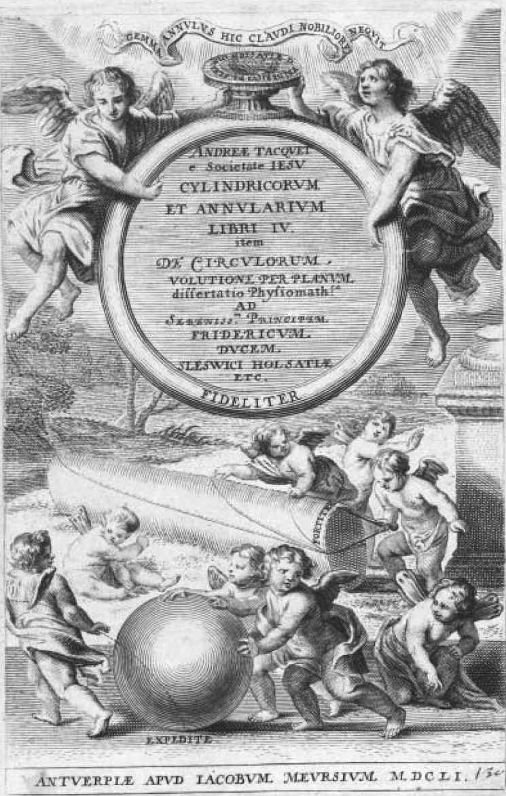
图5-1 塔丘特所著《圆柱体和圆》的卷首页。（图片提供：Huntington Library）
《圆柱体和圆》是塔丘特最著名的一部作品，这本书一举确立了他的地位，使他成为欧洲最具原创性和创造力的数学家之一。事实证明，这本书对于其上级来说，可能有点太过于具有“原创性和创造力”了。当塔丘特把这本书送给新任总会长哥斯温•尼克尔（Goswin Nickel）的时候，这位总会长的反应出乎意料地平静。尼克尔首先对这位数学家表示了感谢和祝贺，然后又在信中写道，如果塔丘特能够把他出众的天赋用于编写初等几何学教科书，以供SJ学院的学生们使用，这将再好不过了，而不是为特定的专业数学家创作原创作品。尼克尔这样写并不是出于对塔丘特的敌意，而是在提醒这位SJ会士注意可疑的新学说，因为数学家的作用是建立一个固定不变的秩序。另外，塔丘特在他的作品中的确使用了不可分量，虽然只是作为一种研究方式，而不是证明手段，但尼克尔仍有可能对他这样的做法感到不满意。无论如何，塔丘特作为SJ的虔诚战士，还是服从了指令。从那以后，他再也没有发表原创作品，而是集中精力编写教科书，其中的一些具有非常高的质量，以至于此后的一个多世纪里，它们一直都是所处领域的标准教材。
出生于1612年的塔丘特，这时比古尔丁和贝蒂尼都要年轻，所以目睹了无穷小量跨越阿尔卑斯山脉一路向北的传播过程，这其中处于领先地位的数学家当属法国的罗伯瓦尔以及英国的沃利斯。由于贝蒂尼没有国际声望需要保护，所以他可以直言不讳地谴责不可分量为“幻觉”，但塔丘特不能对不可分量表示出如此不敬，因为这种方法正在不断地获得他的北欧同事们的青睐。可能是由于环境的压力，也可能是由于塔丘特不像贝蒂尼那样，对卡瓦列里和他的追随者怀有个人恩怨，还可能只是个人的气质问题，当塔丘特讨论不可分量问题时，相比贝蒂尼的尖锐谴责，他的语气要克制得多。
在他的批评中，塔丘特对他的对手是带有一些尊重的，甚至可以说是恭敬。他称卡瓦列里是“一位高尚的几何学家”，并坚称，他“不希望贬低因其美好发明而应得的荣耀”。塔丘特十分了解他在说什么，因为他自己非常熟悉卡瓦列里和托里切利的著作，而且在使用对方的方法得出新的结果方面，他的能力也丝毫不比对手逊色。但是，一旦有人超出了他所认可的风格和数学领域，那么可以肯定的是，塔丘特反对无穷小的态度，如同被刺痛的贝蒂尼一样毫不妥协。在他对不可分量的讨论中，他在开头就直截了当地指出：“我不认为不可分量的证明方法属于正统的方法或者几何学上的方法。它由线得到面，由面得到体，并将由这些线得到的等式或比值应用于面，将由面得到的结果转换到体上。”他得出的结论是：“通过这种方法，任何人都不可能证明出什么结果。”
塔丘特并非像古尔丁和贝蒂尼那样，认为不可分量法是毫无用处的。他认为这种方法是用来发现新的几何关系并对其进行验证的实用工具，但千万不能将不可分量法得到的结果与经过可靠证明得到的几何真理混为一谈。“如果一个定理是仅靠不可分量法证明得来的，那么除非它能够通过齐次分析法（homogenes，塔丘特用来称呼古典证明方法的术语）被再次证明，否则我不会承认它的正确性。”他指出，利用不可分量进行推理，尽管有时是有用的，但也很可能导致错误和荒谬的结果，因此，绝不可信。
在他的评论内容中，塔丘特紧紧跟随着在他的前任古尔丁和贝蒂尼的脚步。他欣然承认，线可以由移动的不可分量构成——线由移动的点构成，面由移动的线构成，体由移动的面构成。但这并不是说，数量体是由不可分量构成的。因为一旦承认了这个概念，几何学就会灭亡。所以最终是温文尔雅的弗莱芒人安德烈斯•塔丘特，而不是粗俗和善于争吵的意大利人马里奥•贝蒂尼，提出了SJ对于不可分量的总体立场：如果不摧毁不可分量法，那么几何学本身就会被摧毁。这其中没有妥协的余地。
17世纪时，SJ在几个层面同时进行着对抗无穷小的斗争。在法律方面所采取的斗争形式，大部分为监督会长颁布法令（由总会长的直接命令支持），以及对不服管教的下属进行处分。在数学方面，主要通过教会的专业数学家古尔丁、贝蒂尼和塔丘特来执行。他们的任务是利用纯数学手段诋毁无穷小量，同时提倡前人的古典方法。由于SJ有着极高的威望，再加上一些互相支持、团结一致的数学家，这就确保了无论是SJ的官方法令还是数学观点都具有极大的影响力，它们远远超出了SJ的范围。
但是，在这场持续数十年之久的针对无穷小的斗争中，还有很多我们不知道的事情：有多少数学家在私下里支持不可分量，但由于担心SJ的报复而选择了保持沉默？有多少人因为涉嫌持有被禁学说而被拒绝在大学任教？有多少胸怀抱负的数学家由于担心支持无穷小学说会影响自己的职业前景，而干脆放弃了该学说？在这场斗争中，SJ通过人际交流、私人通信和制度压力等等手段所导致的潜在影响，很难得出一个确切的结论。在意大利，SJ有着无上的权力，支持无穷小学说的数学家面临着巨大敌意和压力，从中可以对那些潜在的影响窥见一斑。
SJ的影响是深入而普遍的。即使在17世纪20年代，当SJ权力处于低潮时，卡瓦列里也是好不容易才为自己争取到一个大学职位，最终在1629年被博洛尼亚大学任命为数学教授。在所经历的挫折中至少有一次（在1629年的帕尔马）是由于SJ会士的激烈反对，而使他失去了执教机会。17世纪30年代，托里切利在私下里发明了自己的数学方法，却从来没能成为任何一个大学职位的正式候选人，直到被佛罗伦萨美第奇宫廷录用之后，他才最终发表了自己的作品。这很可能是复苏的SJ的幕后势力在起作用，企图全面消除年轻数学家确立自身学术地位的任何机会。
对于卡瓦列里和托里切利的朋友和学生来说，他们没有显赫地位作为保障，只能在正常的条件下进行开创性的工作，因此面临的情况则更为糟糕。这一代人包括许多才华横溢的数学家，但没有人（只有一个例外）能沿着他们老师奠定的道路走下去。举例来说，卡瓦列里在博洛尼亚的学生乌尔巴诺德•阿维索（Urbano d’ Aviso），他曾为自己的老师写过一本令人赞赏的传记，但在数学方面却没有专著，只写过一本关于天文学的基础教材。另一位卡瓦列里的学生彼得罗•蒙哥利（Pietro Mengoli，1626—1686），接替了卡瓦列里在博洛尼亚的数学职位，并且是一位思维敏捷和才华横溢的数学家。但他也是一个保守的人，避免讨论不可分量学说，后来干脆退出了数学研究，潜心进行孤独的宗教冥想。卡瓦列里的朋友詹南托尼奥•罗卡，他曾警告卡瓦列里，不要以对话的形式发表对古尔丁的论战内容，他本人也是一位有实力的数学家，而且他的一些研究成果甚至收录在了卡瓦列里的《六道几何学练习题》之中。但他本人从来没有发表过任何关于不可分量的作品。
托里切利的同伴们的遭遇也是大同小异。温琴佐•维维亚尼（Vincenzo Viviani，1622—1703）与托里切利一起作为伽利略的朋友和助手，陪伽利略度过了最后的岁月。在伽利略去世之后，两个人曾一起在佛罗伦萨工作，维维亚尼最终接任了托里切利在美第奇宫廷的数学家职位。维维亚尼一直认为自己是伽利略的学生及其学术上的继承者，他还为这位佛罗伦萨人写了一部传记，这部传记成为所有现代版本传记的基础。但是，维维亚尼的数学著作几乎全是古典传统方面的。他翻译过古代典籍，并发表过新版本的阿波罗尼奥斯的《圆锥曲线论》（Concis ）和欧几里得的《几何原本》，但极少涉及到不可分量学说，即使涉及到了也只是重复一些众所周知的结果，例如抛物线图形求积法。当他到了晚年时，他似乎已经放弃了这个学说。当莱布尼茨在1692年对于伽利略尚未解决的一些数学问题发布了一份解决办法时，维维亚尼甚至严厉地批评他利用了无穷小量法。到了这个时候，在意大利，似乎连伽利略的学生都已经接受了，甚至可能是发自内心地接受了针对无穷小学说的禁令。
安东尼奥•纳迪是托里切利的另一位朋友，他写了大量的数学作品，其中有很多是支持不可分量法的作品，令人遗憾的是，尽管他一再声称希望将它们出版，但最终还是未能如愿。他现存的作品只是以数千页档案的形式保存在佛罗伦萨国立中央图书馆，而从未有一个字曾被出版过。再有就是米开朗基罗•里奇（Michelangelo Ricci，1619—1682），17世纪30年代时，他是托里切利和卡斯泰利在罗马的学生，值得注意的是，他最后成了教会的红衣主教。里奇是一位有才华并且广受赞许的数学家，从他的信件中可以看出来，他也是伽利略、卡瓦列里以及托里切利的崇拜者，而且是不可分量法的热情实践者。但他也保留了自己的数学喜好，没有出版过任何有关这方面的作品。
蒙哥利和纳迪，维维亚尼和里奇，他们的沉默仿佛在告诉我们，辉煌的意大利数学传统正在缓慢地窒息并步入死亡。17世纪20年代，由于当时的伽利略学派在罗马正处于上升期，伽利略最年长的数学弟子卡瓦列里幸运地获得了一个大学职位。17世纪30年代，年轻的托里切利遭遇到了非常严峻的环境，但由于一个千载难逢的机会而扭转了命运，他被及时地召集到阿尔切特里，最终继承了伽利略的职位。但是，对于那些希望沿着他们的足迹前行的后辈们来说，SJ的敌意已经完全消灭了任何可能出现这种奇迹的机会。没有哪个城市或王子想惹怒SJ，因此没有哪个大学职位或是公侯的荣誉头衔能够提供给无穷小学说的支持者。因此他们一直保持着沉默，只能彼此通信或者与国外数学家进行交流，他们从未出版自己的作品或者引起别人对他们的关注。一旦他们也去世的话，在意大利将再也没有人能传承无穷小的火炬了。
不过，在无穷小的拥护者放弃抵抗并向敌人认输之前，他们还是为捍卫自己的数学方法进行了最后一搏。最后一位公开提倡无穷小量的意大利数学家是斯特凡诺•德利•安杰利，他是一位圣杰罗姆会成员，他用自己的智慧和无畏的精神完成了这最后一击。安杰利出生于威尼斯，在他年轻的时候加入了圣杰罗姆会。他的学术天赋显然很早就得到了认可，因为在他21岁时，他就被派往了圣杰罗姆会位于费拉拉（Ferrara）的传教所教授文学、哲学和神学。一年左右之后，可能是因为健康状况不佳，他再次得到调动，这次他被派往了博洛尼亚。在那里，他遇到了对其人生和职业生涯产生重大影响的人：博洛尼亚的圣杰罗姆会领导者——博纳文图拉•卡瓦列里。
当他们在17世纪40年代中期相识时，卡瓦列里已经成为数学界的一位著名学者，被称为不可分量法之父。当时他正在忙于回应古尔丁的批评，但他的身体状况很差，遭受着痛风的折磨，最终于1647年被夺去了生命。安杰利成为卡瓦列里的朋友和追随者，他对卡瓦列里的数学方法倾注了很大的热情，并且很快用自己的实力证明了成为一名数学家的天赋。很容易想象得到，他们两个人披着圣杰罗姆会特有的白色斗篷，腰上系着皮带，中年的卡瓦列里和他年轻的弟子安杰利，每天穿过博洛尼亚繁忙的街道，从圣杰罗姆会传教所走到古老的大学。当他们散步的时候，他们会讨论连续体的构成吗？或者也会讨论如何计算螺线所围成的面积吧？他们会争论如何更好地回应古尔丁吗？他们会对SJ最近发表的抨击感到愤慨吗？当然，这些我们永远无从知晓，但他们很可能讨论过这些话题。我们的确知道的是，他们两个人形成了非常密切的关系，安杰利把自己看作卡瓦列里的遗产守护者。在卡瓦列里生命的最后几个月，当他因病重而无法完成《六道几何学练习题》的出版时，是安杰利帮助进行了最后的编辑，并跟进完成了这部书的出版。
在卡瓦列里去世之后，安杰利再次得到调离，这次很可能是出于他自己的请求。在接下来的5年里，他在罗马的圣杰罗姆会传教所担任院长。对于一个不满24岁的年轻人来说，这可谓是一次了不起的晋升，毫无疑问这其中也有他已故恩师鼎力支持的原因。安杰利在当时已经是一个成功的数学家了，所以很值得注意的是，在罗马逗留的整个期间，他没有发表任何作品。从托里切利的经历中，我们已经熟悉了这样一个模式：在17世纪30年代，他在罗马花了10年的时间潜心从事数学研究，但直到他在佛罗伦萨的美第奇宫廷得以安身之后，才开始出版他的著作。永恒之城不仅是SJ的世界总部，而且是罗马学院的所在地，这可不是一个可以自由提倡无穷小学说的地方。
但在1652年，安杰利被调回到了他的家乡威尼斯，被任命为当地圣杰罗姆会的省级会长。这应该算是一次值得欢欣的调动，因为对于寻求庇护想免受SJ干扰的人来说，威尼斯是个很不错的地方。这是因为，早在1606年，这座城市就曾因为是否有权审判和惩罚神职人员，而陷入与教皇保罗五世的争执，教皇愤怒地指责威尼斯的领导者侵犯了他的权威，最终把这座城市开除出了教会。然而，威尼斯参议院并没有被吓倒。参议院要求城里的神职人员不顾禁令继续施行圣礼，而且绝大多数的牧师都遵从了参议院的指令。永远忠诚于教皇的SJ会士没有服从参议院的指令，结果被驱逐出了这座城市。威尼斯与教皇在第二年进行了和解，但在接下来的50年里，SJ仍然被禁止进入这座城市。最终直到1656年，黑袍会士们才得以获准返回威尼斯，不过即使他们回来了，他们在这里的影响力仍十分有限。安杰利充分利用了这些因素，既有自己的教会作为保护，加上威尼斯参议院仍对SJ怀有警惕之心，他终于可以显现自己的本色了，于是他开始出版关于不可分量法的著作。
当安杰利加入到无穷小的战斗中时，他展现出了十年未见的热情和才华。卡瓦列里曾试图通过尽可能地靠近古典典籍来平息对他的批评，后来又在反驳古尔丁的作品中放弃了带有挑衅性质的对话形式。托里切利则干脆拒绝参与对其方法的争论。而其他人，从纳迪到里奇都从未发表过自己的看法。但安杰利像一个复仇天使一样闯入了这场争论，为了让自己珍视的方法不被扼杀，他决心对SJ会士进行反击。他的第一波攻击被收录在了“支持不可分量附录”中——附于他在1658年出版的《六十个几何问题》（Problemata Geometrica Sexaginta ）一书中，它把矛头直接对准了马里奥•贝蒂尼。
在捍卫不可分量的争论中，安杰利嘲笑了贝蒂尼关于伽利略《对话》中的一个悖论的讨论，即证明一只碗的周长等于一个点。安杰利写道：“SJ神父马里奥•贝蒂尼，他是SJ蜂巢中的劳作者，所以可以称他为‘蜜蜂’。这样比喻是再恰当不过的了，因为他就像蜜蜂一样，既能制造蜂蜜又能蜇人。一方面，他通过传授最甜蜜的学说来制造蜂蜜，而另一方面，他又会攻击自认为的错误学说。”遗憾的是，贝蒂尼是“一只不幸的蜜蜂”，虽然他“利用自己的毒刺来抵御不可分量学说，但他自己却也处在了危险之中”，因为，从安杰利的讨论细节来看，伽利略的悖论证明了贝蒂尼的观点是站不住脚的。
安杰利把贝蒂尼比作一只无助的蜜蜂，这已经足具讽刺意味了，但他对这位SJ会士的嘲弄还没有结束。他引述了一段贝蒂尼的文章，在这段文章中贝蒂尼称不可分量法是“伪造的哲学思想”（similitudinem philosophantium），并大声疾呼，“我绝对、绝对不会让我的几何定理变得毫无用处”。从一开始，安杰利就展开了猛烈回击：“请读者留意这里，当这位作者遇见不可分量时，他就好像遇到了魔鬼一样大声呼喊着‘我绝对、绝对不会’之类的话。”贝蒂尼在这里变成了一个歇斯底里的驱魔人，试图用愤怒的咒语来抵挡“魔鬼般”的不可分量。安杰利总结道：“他没有添加任何实质内容，只是徒增了新的怨恨。”
虚张声势的贝蒂尼也许容易被驳倒，然而更为强大的塔丘特也没能于安杰利的笔下幸免。安杰利在1659年出版了一本名为《论无限抛物线》（De Infinitis Parabolis ）的著作，在序言中，他描述了在他的前一本书（在那本书中，他驳倒了SJ会士贝蒂尼）出版之后发生的一些事情。他漫步走进了威尼斯密涅瓦书店。在那里，他偶然发现了《圆柱体和圆》，这本书出自另一位“来自同一教会的备受赞赏的数学家”。在翻看这本书时，他偶然看到了一段“对不可分量吹毛求疵”的内容，作者声称，不可分量法既不合法也不属于几何学。安杰利则称，他此前从未听说过这本书，也不知道其中对不可分量的批评。但是，他所说的情况是不可能出现的。因为，安杰利非常熟悉同时代的数学作品，而且在后面的序言里面他还援引了很多人的作品，包括法国人让•博格朗（Jean Beaugrand）和伊斯梅尔•布利奥（Ismael Boulliau），英国人理查德•怀特（Richard White）和荷兰人弗兰斯•范•斯霍滕（Frans van Schooten），以及他的一些意大利同伴。当时的塔丘特是SJ的数学领袖，而安杰利却声称既不熟悉他的作品，也不了解他对不可分量的观点，仅仅是在逛威尼斯的一家书店时才偶然发现了它们，这显然是很不可信的。安杰利主动承认自己的无知，这很可能是一种故作姿态，目的是为了表现自己作为一个公正学者，而对贝蒂尼和塔丘特的离谱说法所做出的反应。还有一段漫长而痛苦的历史他也没有提及，那就是他与SJ会士进行了长达10年的斗争。
安杰利接着写道，塔丘特对不可分量的批评并没有什么特别之处。他的论点是陈旧的，早已由古尔丁提出过，而且卡瓦列里在几年前就已经给出了令人满意的答复。不过，塔丘特确实给安杰利提供了一个机会，可以说明到了17世纪50年代后期时，不可分量法有着多么巨大的影响。塔丘特认为，不可分量法天生就是不可信的，他曾反问：“这种方法能说服得了谁呢？”安杰利也用质疑的口吻反问：“它能说服得了谁？”他回答道，所有人，但除了SJ会士之外。
安杰利在试图扭转态势。与其说不可分量论者在强大敌人的攻击下孤军奋战，不如说SJ会士在独自抵抗一种被普遍接受的数学方法。乍一看，安杰利所引用的名单似乎的确很有说服力，而且似乎支持他的说法。但仔细想一下，其实事情并不像他说的那样。诚然，博格朗、布利奥、怀特和斯霍滕确实接受了卡瓦列里的方法，但他们都居住在阿尔卑斯山以北的遥远国家。安杰利列举的三个意大利人：托里切利、罗卡和拉斐尔•马吉奥特，只有托里切利在实际上发表过关于不可分量的作品，而罗卡和马吉奥特则一直没有发表过作品。再者说，不管怎么样，到1659年时这三个人都已经去世了。尽管他在抵抗，但安杰利在意大利的确是在孤军奋战。
在经过一番修辞上的反击并收到满意效果之后，安杰利继续回击塔丘特的严厉警告，即对于连续体由不可分量构成这一概念，除非先将这个概念摧毁，否则这个概念将摧毁整个几何学。卡瓦列里曾坚持认为，连续体的构成问题与不可分量法是无关的。在这方面，安杰利在一定程度上遵循了他的老师的观点。他也像卡瓦列里一样指出，塔丘特是错误的，“即使连续体不是由不可分量构成的，不可分量法也是不可撼动的”。但他补充了一点：“如果为了认同不可分量法，而引入由不可分量构成连续体这一概念，在我们看来，这当然能使这种学说得到加强。”换句话说，与他谨慎的老师不同，安杰利非常愿意接受连续体确实是由不可分量构成的这一概念。不可分量法的作用和效果足以证明其正确性，如果由此可以得出理论，连续体由不可分量构成，那么这个结论也必然是正确的。这一学说会导致矛盾和悖论的事实，一点都没有对安杰利产生困扰。
安杰利，这位个性张扬的圣杰罗姆会成员，除了伽利略之外，从来没有人敢像他这样对待SJ会士。他直呼他们的名字，嘲笑他们像驱魔一样的行为，假装从来没有听说过他们当中最杰出的数学家。但是，在连续体的构成问题上的分歧，仍然是SJ和圣杰罗姆会之间不可逾越的鸿沟。在SJ会士看来，连续体由不可分量构成这一概念会导致悖论，单凭这一点就必须在数学上将其禁止。基于这一概念的方法，即使是有效的，也仍然是不可接受的，因为它破坏了研究数学的本质理由，即其纯粹的逻辑结构。安杰利的观点则完全相反：因为不可分量方法是有效的，所以它的基本假设也必然是正确的，如果它们会涉及到悖论，那么我们也只能允许悖论的存在。一种方法强调数学的纯粹性，而另一种方法则强调数学的实效性；一种方法坚持绝对的完美秩序，而另一种方法却愿意与模糊和不确定性共存。双方永远不会达成共识。
由于受到圣杰罗姆会以及威尼斯参议院的保护，安杰利似乎逃脱了SJ可能对他的公开谴责，并在未来的8年中，他一直从事着数学研究，并陆续发表了另外6 部数学著作，这些著作全部使用并且提倡了不可分量法。在1662年，他迎来了自己最大的成就——他被任命为了帕多瓦大学的数学教授，这也是伽利略曾经担任过的一项职务。尽管SJ在意大利如日中天，但他们也只能愤怒地看着这位自命不凡的圣杰罗姆会成员得到晋升，坐上了全欧洲最负盛名的数学职位。他们从未回应过他的嘲讽，也没有对他进行过公开谴责，只是在静静地、耐心地等待着时机。
SJ感觉到了处境险恶。只要安杰利一直鼓吹他的学说，那么就一直存在着危险，这个被禁止的学说就有可能在意大利死灰复燃，他们经过数十年斗争所取得的成果就将前功尽弃。但是他们该如何应对呢？安杰利在威尼斯是安全的，如果他们曾经考虑过，是否可以通过说服威尼斯当局来让他保持沉默，那么帕多瓦大学对他的任命就可以明确地表明，这是行不通的。因此，SJ改变了策略：在威尼斯，他们可能没有多大权力，但在罗马，他们可是位高权重的。因此，为了对付这最后一个提倡无穷小学说的意大利人，为了不让他再发出声音，他们把目光转向了罗马教廷。
接下来发生的事情没有直接证据可供参考，所有有关这一事件的文件，至今仍封存在梵蒂冈档案馆里。但我们确实知道的是：1668年12月6日，教皇克莱门特九世颁布了一项镇压三个意大利宗教团体的命令：第一个是律修会（Canons Regular），它位于威尼斯潟湖阿尔加（Alga）的圣格里戈里奥岛（San Grigorio）；第二个是菲耶索莱（Fiesole）的圣杰罗姆派（Hieronymites），这个流行的宗教团体，在其鼎盛时曾在意大利拥有40间传教所；而第三个就是圣杰罗姆会。这项命令称：“他们的存在对于基督徒来说没有任何好处或用处。”
律修会是很小的一个团体，他们的活动范围仅限于威尼斯的一座岛屿之上，如此看来，梵蒂冈的官僚们确实有理由认为，它的存在没有任何实际意义。菲耶索莱的圣杰罗姆派是一个大一些的团体，但对他们来说，这项“禁令”却把他们引入了歧途。虽然这个教会确实不再独立存在了，但它其实并没有解散，而是并入了比萨的圣杰罗姆修女会。他们的传教所还像以前一样存在着。然而，对于圣杰罗姆会来说，这项禁令意味着宣判了死刑：从今以后这个团体将永远不复存在了，它的组织要被解散，会中的兄弟也要被遣散。对于这个古老而又令人尊敬的团体来说，这种暴力性的意外终结，令他们感到相当震惊。最初为了帮助穷人和病患，由真福约翰•哥伦比尼（Blessed John Colombini）在1361年建立的圣杰罗姆会，已经存在了三个多世纪。
官方给出的理由，也是如今被所有公开资料所引用的一个理由，即“这个教会团体充斥着不当行为”。但这个解释并不能说明这个教会的存在毫无意义。有学者指出，圣杰罗姆会常常被称为“烈酒兄弟会”（The Aquavitae Brothers），这个称呼可能暗示宽松的道德标准和生活风气。但是，事实远非如此：赋予他们这个绰号，是因为他们为治疗瘟疫中的受害者做出过贡献，他们的教会在当时曾生产过一种含酒精的“万灵药”，由他们发放给受害者。没有任何迹象表明教会权力机构曾反对过圣杰罗姆会的医疗实践活动或者试图制止过他们。
事实上，种种迹象表明，圣杰罗姆会是一个蓬勃发展的团体。罗马教皇格里高利十三世不仅资助SJ，同时也支持圣杰罗姆会，他还将圣杰罗姆会的创始人真福约翰•哥伦比尼列入了官方的教会年历，确定7月31日作为他的宗教节日。圣杰罗姆会在16世纪和17世纪得到了迅速的发展，在意大利各地建立起了数十间传教所。在意大利各个城市当中，他们想必一直深受上流社会的喜爱，因为在米兰的卡瓦列里的支持者，以及在威尼斯的安杰利的支持者，他们都想把自己有天赋的孩子送到圣杰罗姆会接受教育。博洛尼亚大学和帕多瓦大学都是欧洲最负盛名的大学，而圣杰罗姆会的两位成员分别占据了这两所大学的两大学术职位，这无疑为圣杰罗姆会的学术地位增色不少，也使得很少有其他的教会团体能够与之相较。虽然很难知道圣杰罗姆会传教所内的生活是什么样子的，但我们从未听说过任何暗示有关道德败坏的事情。卡瓦列里曾在1620年给伽利略写过一封信，介绍他在米兰圣杰罗姆会的生活，在信中，他曾抱怨几个老会员怂恿他多加学习神学，没有任何迹象表明这是一个有不良风气的传教所。博洛尼亚的圣杰罗姆会传教所，同样不会让人产生这种感觉。卡瓦列里在身患痛风的情况下，在那里度过了他生命中的最后18年生活，他曾在那里与年轻的安杰利进行数学探讨。倒是给人这样一种印象：这是一个非常注重学术学习和宗教事务的团体，卡瓦列里和安杰利在教会职位的快速提升，更说明了该教会对学术成就有着极高的重视。在1668年禁令颁布之前，梵蒂冈普遍认为没有理由干预圣杰罗姆会事务，除了在1606年，梵蒂冈首次允许神职人员进入这个团体，这种改变也暗示了圣杰罗姆会地位的上升，而不是下降。没有任何理由能够解释，为什么这个古老而又受人尊敬的兄弟会被选中并遭受这场灭顶之灾。
不过，圣杰罗姆会的确在某一方面有所突破，那就是，他们是在意大利提倡无穷小学说的两个最主要数学家的大本营。首先是卡瓦列里，然后是安杰利，均是各自时代不可分量学说的主要倡导者，而且他们都受到了所在圣杰罗姆会的全力支持。他们不仅在教会中的等级得到了迅速提升，而且他们的很多著作都得到了圣杰罗姆会会长的个人认可。因此，当安杰利和卡瓦列里与SJ就无穷小展开激烈的冲突时，不可避免地，这不仅是他们自己的斗争，而且也成为他们所在教会的斗争。无论有意为之还是纯属偶然，圣杰罗姆会都成为SJ清除无穷小学说的主要障碍。
如果SJ能够发现一种方法，既使安杰利保持沉默，同时又让他安静地离开圣杰罗姆会，那么他们很有可能会这样做。但同样很有可能的是，他们渴望通过制裁这个小教会来起到杀一儆百的作用，警告所有那些胆敢挑战SJ的人，最后他们都会得到相同的结果。由于无法说服威尼斯当局管教这位傲慢的教授，于是他们转向了内部求助于罗马教廷，因为在罗马他们具有决定性的影响力。他们不能直接惩罚安杰利，所以才把怒火转嫁到了庇护安杰利及其已故老师的教会身上。当面对强大的SJ时，圣杰罗姆会没有任何招架之力。虽然圣杰罗姆会从三个世纪的政治和宗教动乱中幸存了下来，会中的兄弟把生命之水分发给了瘟疫中的受害者，其两个成员在数学上取得了至高无上的荣誉，但这一切都在罗马教皇的手起笔落之间灰飞烟灭了。
令人难以想象的是，处在这场风暴中心的人却毫发未损——至少看上去如此。安杰利还年轻时，圣杰罗姆会就成了他的家，尽管这个教会在顷刻之间化为了乌有，但他仍在帕多瓦大学担任着数学教授，而且仍然受到威尼斯参议院的保护。他在接下来的29年里一直生活在帕多瓦，直到他于1697年去世。不过，尽管他仍然声称自己是伽利略的崇拜者，尽管他此前曾出版过不下9本提倡并使用不可分量的著作，但此后安杰利再也没有出版任何有关这方面的作品。所以，SJ取得了胜利。
到了17世纪70年代，这场针对无穷小的战争已经结束了。安杰利终于不再发出声音，SJ的所有对手都已销声匿迹，意大利成了一片没有无穷小学说的净土，SJ拥有着至高无上的统治地位。这是SJ的一个伟大胜利，它终止了这场艰苦的斗争。在这个过程中产生了许多受害者：有些人赫赫有名，比如卢卡•瓦莱里奥和安杰利，不过更多的是那些永远无法知道姓名的人。SJ用残酷的手段，把失落的一代意大利数学家赶下了历史舞台，把他们永远留在了黑暗之中。
SJ之所以挑起这场战争，不是因为鸡毛蒜皮的小事，也不仅仅是为了展示自己的实力和羞辱对手，而是因为他们认为自己最珍视的原则，甚至基督教王国的命运，受到了威胁。SJ经受了宗教改革运动的严峻考验，他们感觉到西方基督教的社会和宗教结构正在分崩离析。一些互相抵触的启示、神学、政治思想和阶级忠诚一起涌向了欧洲人的头脑，这最终导致了混乱、饥饿、瘟疫和数十年的战争。这个古老教会曾经拥有过的唯一真理，使得基督徒团结在了一起，并赋予他们人生的目的。然而，在由异端教义产生的喧嚣和混乱面前，这个唯一真理一下子变得荡然无存了。从依纳爵•罗耀拉成立SJ的那一天开始，使教会免受灾难，并确保它永远不受灾难的侵袭，就成了它的首要目的。
SJ会士通过各种方法来达到这个目的，他们始终具备着热情、能力和决心。他们有的成了权威的神学家，致力于制定一个单一的“宗教真理”；有的成为权威的哲学家，以为他们的神学提供支持。他们建立了世界上前所未有的庞大教育体系，以广泛传播有关这些真理的知识。在16世纪下半叶，他们是天主教复兴的动力源泉，并且在制止宗教改革的蔓延以及扭转宗教改革局势方面起到了关键作用。
但SJ面临着一个棘手的问题：到处都是不同的观点，每种宗教或哲学学说似乎都与各自的权威形成了冲突。这其中只有一个领域是个例外，那就是数学。至少克里斯托弗•克拉维斯是这样认为的，他从16世纪60年代至70年代就开始在罗马学院倡导数学教育。克拉维斯认为，在数学领域内，特别是在欧氏几何领域内，从来就没有产生过任何疑问。他最终使数学成为SJ会士世界观的支柱。
正是因为他们在数学上投入的大量精力，并且坚信数学真理能够保障秩序和确定性，所以当无穷小量数学方法兴起时，他们才会表现得如此愤怒。这种新的无穷小数学方法与欧氏几何可以说是大相径庭。几何学起始于清晰的普遍原则，而新的方法则起始于模糊和不可靠的直觉，即物体是由大量的微小部分构成的。最具毁灭性的是，几何学的真理是绝对正确并且无可置疑的，而不可分量方法的结果却绝非如此。不可分量方法既可能得出真理，也可能得出谬误，而且它还充满了矛盾。SJ会士认为，如果允许确立这种方法，那么这对数学来说无疑将会是一场灾难，这也将威胁到数学作为无可置疑的知识源泉的地位。从更广泛的意义上来看，情况则更为糟糕：如果连数学都变得充满了矛盾和谬误，那么对其他不那么严格的学科还能抱有什么希望呢？如果在数学上都无法得到真理，就很可能在其他任何学科也无法得到真理，最终世界将会再次陷入绝望。
为了避免这一灾难性结果，SJ发起并持续展开了针对无穷小学说的斗争运动。但是，那些在意大利提倡不可分量方法的数学家，真的是一心想推翻宗教权威的危险人物吗？这几乎是不可能的。毕竟，伽利略和卡瓦列里，托里切利和安杰利，他们都是学者和教授，很难称得上是那种热衷于推翻人类文明的人。伽利略可能是一个个性张扬的个人主义者，但他并不是等级制度和宗教团体的敌人，因为他曾选择离开共和政权的威尼斯，而接受了托斯卡纳大公的宫廷职位，这就很能说明问题。卡瓦列里是一个稳重的传教士和教授，在他去世前的18年里，他只离开过一次博洛尼亚。托里切利在佛罗伦萨安顿下来之后，就一直在尽量避免与他的批评者产生冲突。安杰利无疑在为捍卫不可分量而展开的背水一战中表现出了极大的热情，但这也很难将其归类为危险分子。他毕竟也是一位传教士和教授，只是依靠自己古老教会和威尼斯参议院的保护才免受敌人的侵扰。至于SJ对该学说所表现出的激烈反应，或者对该学说的影响所产生的恐惧，确实很难从支持无穷小的人的所作所为中找出合理的解释。
那么，难道SJ对于无穷小支持者的恐惧是完全错误的吗？并不完全是。因为伽利略的支持者虽然不是社会危险分子，但他们确实代表了某种程度的学术和宗教自由，这是SJ所不能接受的。伽利略是自由哲学思考（libertas philsophandi）的杰出公众倡导者，伽利略及其支持者希望有权利从事自由的学术研究，而无论这些研究将会产生何种结果。他公开嘲笑过SJ会士和他们对权威的崇敬，他写道： “在科学上，成千上万的观点的权威性也比不上个人的哪怕一次理性思考。”伽利略不仅认为，当圣经和科学事实发生冲突时，必须做出调整的是对圣经的解释，而且他还公然侵犯了专业神学家的权威。因此毫不奇怪，SJ会士会对他的言论大发雷霆。他们认为，这种对权威的侵犯将会导致混乱。
伽利略是他所在群体的首席公共发言人，毫无疑问，林琴院士，还有他的学生和追随者都会持有与之相同的观点。他们都信仰“自由哲学思考”原则，把对他们领袖的审判和谴责视为对他们所珍视的自由犯下的滔天罪行。在他们看来，SJ在追求一个单一的、权威的、被普遍接受的真理，这粉碎了所有自由哲学思考的可能性。他们是在通过倡导无穷小学说来声明自己的立场，反对SJ由官方确立真理的极权主义做法。
SJ与伽利略学派之间的核心冲突在于权威性和确定性的问题。SJ坚持认为真理必须只有一个，他们认为，欧氏几何完美体现了这种体系的强大威力，它不仅能够规范这个世界，而且能够防止异议的产生。伽利略学派也在寻找真理，但他们的做法与SJ相反：他们不是强加给世界一个统一的秩序，而是在试图研究这个既定的世界，并发现其中的秩序。SJ设法消除那些难以理解和不确定的问题，以实现一个明确无误的统一真理；而伽利略学派则更愿意接受一定程度的不确定性，甚至是悖论，只要能够对当前问题产生更深的理解就可以。一种方法坚持认为，只有一种不容挑战的真理，必须通过理性和权威自上而下地将这种真理强加给世界；另一种方法则务实地接受了不确定性，甚至矛盾，并试图通过自下而上的方式获取知识。一种方法坚持认为，无穷小学说必须被禁止，因为它将悖论和谬误引入到了完美、合理的数学结构之中；另一种方法则更愿意接受无穷小悖论的存在，只要它们能够充当一个强大而有效的方法，并达到更深的数学理解。
这场针对无穷小的斗争发生在现代世界的黎明时期，这实际上是两种对立的现代愿景之间的竞争。一方面是SJ，这个迄今为止世界上出现的第一家现代机构。它有着清晰的等级结构、合理的组织和统一的目标，他们正在努力按照自己的模式塑造早期现代世界。这是一个极权主义的梦想，有着完美的统一性和目的性，不会为怀疑或争论留下任何余地，这种模式已经以不同的形式在现代历史上一次又一次地出现过了。另一方面是他们的对手，在意大利是伽利略的朋友和追随者。他们认为，和平而和谐的新时代，并不是通过强加的绝对真理产生的，而是通过对共享的知识和真理的缓慢、系统、不完善的积累而产生的。在这个愿景中，允许质疑和辩论，允许承认一些难题仍未得到解决，但也坚持认为，很有可能通过研究得到这些问题的答案。它不仅为科学进步开辟了道路，而且也为政治和宗教多元化和有限度的政府开辟了道路。
在17世纪的意大利，针对无穷小的斗争甚嚣尘上。等级、权威和绝对统一真理的原则得到了确立，而自由研究、实用主义和多元化的原则被击败了。这个结果将对意大利产生深远的影响。

近两个世纪以来，意大利一直是欧洲最活跃的数学学术中心。这个传统可以追溯到意大利商业中心的会计室，后来形成了大学里的职业数学家，他们是当代学者的前身。在16世纪初，卡尔达诺、塔尔塔利亚（Tartaglia），以及他们的 “会计师” 注25 同伴，依靠他们解决三次方程和四次方程的能力赚得了大量的金钱和财富。几十年后出现了古典学者，如科曼迪诺和蒙蒂，他们崇拜古人，翻译古人作品，并出版新版本的古典作品。直到最近，出现了无穷小的拥护者（伽利略、卡瓦列里和托里切利），他们提倡新的数学方法，而这些方法将会改变数学研究和实践的基石。
但是，当SJ战胜了无穷小的倡导者时，这个辉煌的数学传统迅速地消逝了。随着安杰利选择了沉默，维维亚尼和里奇仍然不发表自己的数学观点，现在的意大利已经没有了传承火炬的数学家。SJ现在占据了统治地位，他们坚持遵循古代的传统方法，因此，现在领导数学创新的重心已经发生了偏移，它正在跨越阿尔卑斯山脉，向德国、法国、英国和瑞士发展。正是在这些北部国家，卡瓦列里和托里切利的“不可分量法”将首先发展成“无穷小微积分”（infinitesimal calculus），然后又发展成了更广泛的数学研究领域——“分析学”（Analysis）。意大利作为该学说的起源地，现在已经成了数学领域的一潭死水，对于提倡不可分量法的数学家来说，这里不会有未来。在18世纪60年代，当都灵年轻的数学天才米塞佩•路易吉•拉格朗日（Giuseppe Luigi Lagrangia）力争成为“伟大的几何学家”时，他不得不离开了自己的故土，首先去了柏林，然后又去了巴黎。他后来取得了成功，但他的意大利渊源很快就被人们遗忘了。对于后世的人们来说，他一直是一个法国人，约瑟夫•路易•拉格朗日（Joseph-Louis Lagrange）——人类历史上最伟大的数学家之一。
意大利数学传统的消亡是镇压无穷小学说的最直接后果，不过，SJ的胜利还有着更加深远的影响。追溯到中世纪中期，当时的意大利领导着整个欧洲在各个领域的发明创造，包括政治、经济、艺术及科学。早在11世纪至12世纪，在意大利就诞生了第一批从黑暗时代兴起的城市。它们在复兴停滞已久的商业经济中发挥了至关重要的作用，还是不同政府形式（从专制到共和）的政治试验的实际发生地。在13世纪，意大利商人成了欧洲首批最富有的银行家。从14世纪中叶开始，意大利领导了艺术和文化领域的复兴运动，其影响遍及整个欧洲。从彼特拉克（Petrarch）到皮科•德拉•米兰多拉（Pico del la Mirandola）这样的人文主义者，从乔托（Giotto）到波提切利（Botticelli）这样的画家，从多那太罗（Donatello）到米开朗基罗这样的雕塑家，以及从布鲁内莱斯基（Brunelleschi）到贝尼尼（Bernini）这样的建筑师，这些杰出人才使意大利文艺复兴运动成为人类历史的转折点。在科学领域，从莱昂•巴蒂斯塔•阿尔伯蒂（Leon Battista Alberti）到莱昂纳多•皮萨诺•俾格莱（Leonardo Pisano Bigollo），再到伽利略，意大利人对人类知识做出了重大贡献，并开辟了数学研究的新篇章。公平地讲，在创造力和创新性方面，没有哪个国家或地区能够与意大利相媲美。
然而，大约到了17世纪末时，这一切都结束了。这个曾经充满着活力和创造力的国家变得一片萧条和落寞。文艺复兴时期繁华的商业中心沦为了欧洲经济的边缘地带，并且开始落后于欧洲北部的竞争对手。在宗教上，意大利半岛处于保守的天主教统治之下，罗马教皇禁止了所有的异端学说，其他教派或信仰在这里根本没有立足之地。在政治上，意大利是由国王、公爵、大公以及教皇本人统治的许多小公国组成的混合体。除了极少数例外，几乎所有公国都反对改革并实行压迫，并且强烈压制任何可能出现不同政见的苗头。在科学上，只有很少几位杰出的科学家，比如斯帕兰扎尼（Spallanzani）、伽伐尼（Galvani）和伏特（Volta），仍处于自己所在学科的前沿，并受到整个欧洲同行学者的赞赏。但是，这为数不多的几个例外更是说明了意大利科学的整体贫乏，在18世纪，意大利只不过是蓬勃发展的巴黎科学的陪衬。到了18世纪50年代，意大利人大胆创新的精神几乎已经绝迹，而在之前很长的一段时期，这种创新精神一直是意大利人的特征。
把所有这些不良发展的后果，都归因于意大利在17世纪后期的无穷小学说的战败，这可能有些言之过重了。意大利的衰落有很多方面的原因，包括政治、经济、学术和宗教等各个方面。但不可否认的是，针对无穷小的斗争在其中发挥着一个十分重要的作用。这是一个关键点，它决定了意大利的现代化发展方向，如果无穷小学说战胜了会是一个发展方向，如果它战败了则又会是另外一个方向，它帮助塑造了意大利未来几个世纪的发展道路。
虽然这场斗争已经结束了，但如果伽利略派获胜而SJ战败的话，那么很容易想象，意大利将会是另外一个发展方向。伽利略的学术思想很可能仍处于数学和科学的最前沿，并很可能在18世纪和19世纪引领科学取得胜利。意大利可能会成为哲学和文化的启蒙中心，那些自由与民主的思想会来自于佛罗伦萨、米兰和罗马的广场，而不是来自于巴黎和伦敦。很容易想象，意大利的许多小公国会为更具代表性的政府让位，意大利的伟大城市会成为蓬勃发展的工业与商业中心，它们完全有实力与北部的对手展开竞争。但事实却并非如此：到了17世纪末，无穷小学说已经被镇压下去。在意大利，一场持续数百年的衰退和萧条即将上演。